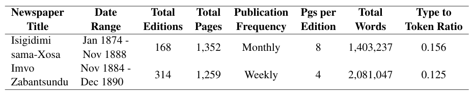
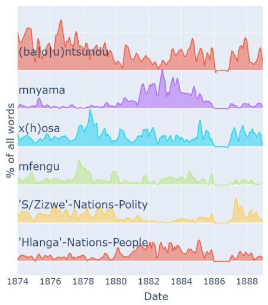
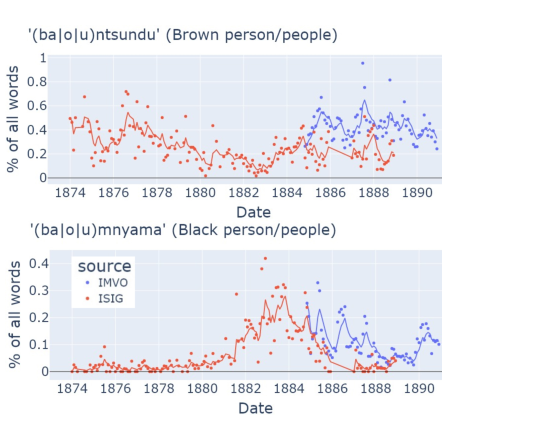
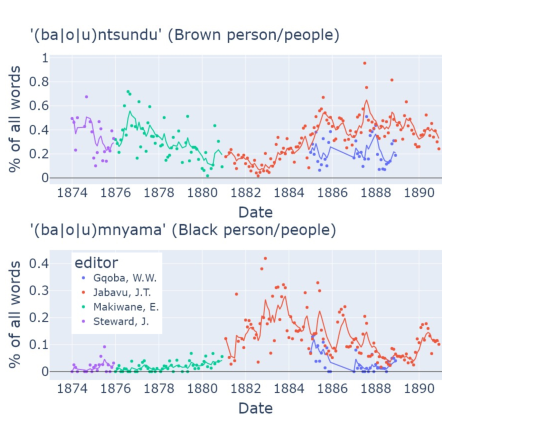
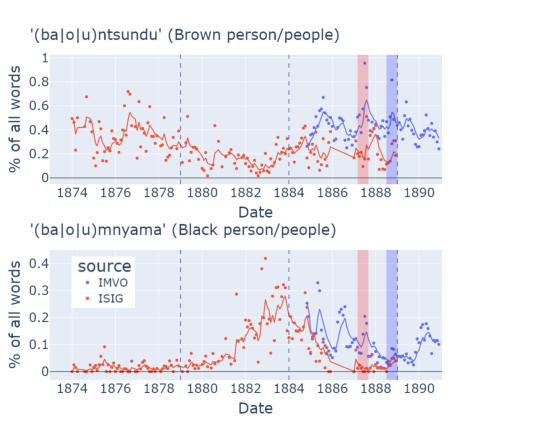

RAIL 2023Original text
Analyzing political formation through historical isiXhosa text analysis: Using frequency analysis to examine emerging African Nationalism in South Africa
This is the original text of the paper. Translations are linked above.
Proceedings of the Fourth workshop on Resources for African Indigenous Languages (RAIL 2023).
Original text, shown under its licence (CC BY 4.0). Reuse allowed, including commercial, with attribution. The translations on this site are by Ernst van Gassen (Arktos AI Lab).
Plain text for reuse, with its licence: English · LICENSE
Affiliations
Jonathan Schoots
LEAP
Stellenbosch University
E-mail addresses removed for privacy. They are in the original PDF.
Abstract
This paper showcases new research avenues made possible by applying computational methods to historical isiXhosa text. I outline a method for isiXhosa computational text analysis which adapts word frequency analysis to be applied to isiXhosa texts focusing on root words. The paper showcases the value of the approach in a study of emerging political identities in early African nationalism, examining a novel dataset of isiXhosa newspapers from 1874 to 1890. The analysis shows how a shared identity of 'Blackness' (Abantsundu and Abamnyama) dynamically emerged, and follows the impact of leading intellectuals as well as African voter mobilization in shaping communal political discourse.
1 Introduction
The growing wave of digitization of African text sources and the creation of new digital African language archives creates exciting new possibilities for researchers. Materials which were once difficult to access, available only in hard copy in archives, are already more widely accessible than ever before, often in digital text format. As the pace and scope of digitization grows, such access will only increase. The availability of these materials comes alongside an academic and public demand for more knowledge about African intellectual histories and knowledge traditions. Questions and sources fit hand in hand in this exciting new opening for research. How can researchers who are interested in substantive and 'humanistic' (historical, cultural, literary, etc) questions, especially in African language contexts, seize the opportunities created by these sources?
This paper draws on a novel digital archive of historical isiXhosa text and showcases some possibilities that digital archives and computational text analysis can offer humanistic and social science scholars working in African languages. The study examines political identity formation in the period of emerging African nationalism in South Africa by looking at isiXhosa newspapers from 1874-1890. I use computational text analysis methods to explore the collective development of a shared language of political identity in the emerging 'proto-nationalist' movement in what is today the Eastern Cape of South Africa.
The paper has two goals. First, to outline the method used. I draw on frequency analysis over time, an approach which can overcome the current limitations in the Natural Language Processing (NLP) tools for isiXhosa, and remains accessible to qualitative and humanistic scholars because it operationalizes a research approach which is conceptually straightforward to non-experts in Natural Language Processing (NLP). IsiXhosa, like many other under-resourced languages, faces a lack of NLP tools which are available for English and other highly resourced languages. IsiXhosa is an agglutinative language, and the structure of isiXhosa morphology and grammar means that many NLP tools cannot be imported from other languages. In particular, tools for the accurate parsing of the subunits of compound words-including stemming or lemmatizing, parts of speech tagging, and stop-word removal-cannot be imported. These 'preprocessing' steps often form the necessary basis for other more advanced NLP techniques (cf. word embeddings or topic models), which themselves are not built to deal with the range of variations created by the prefix, infix and suffix structure of agglutinative languages. Such tools are being developed by isiXhosa computational linguists (Mzamo et al., 2015; Puttkammer and Toit, 2021), but are not yet sufficiently advanced to be used for social science or humanities inquiry.
This paper engages this problem by drawing on the established method of frequency analysis (Baron et al., 2009) and highlighting its utility for analysis of isiXhosa and other agglutinative languages. Very little work has used computational text analysis on isiXhosa texts for social science or humanities research. This paper shows that by adapting a frequency analysis to the structure of isiXhosa grammar, it is possible to advance in new ways. I show that this approach can be tailored to resolve the problem of agglutinative grammar by focusing on root words. This can effectively bypass the need for NLP pre-processing tools, and thus can be applied to isiXhosa texts using currently available tools. A frequency analysis approach has added advantages for social science and humanistic scholars. It is analytically clear (simply counting the number of word occurrences) where more advanced approaches can remain an opaque 'black box' to non-experts. It is also relatively technically simple and thus has a lower technical barrier to entry. Nonetheless it creates new opportunities to analyze isiXhosa texts which have not been possible using the dominant close textual analysis approach. These features commend it to scholars interested in new social and humanistic answers.
The second goal is to showcase the analytical capacity of this approach through a specific example: an analysis of collective political concept formation in the early period of African Nationalism in South Africa. Here I examine the shifting ideas of collective identity in isiXhosa newspaper publications which shaped the debates of the nascent 'proto-nationalist' movement. I follow a 16-year period as this emerging movement developed from a series of social and political debates among African intellectuals into an increasingly interlocked set of political organizations mobilizing Africans to protect African political interests. To do so, I draw on a novel dataset of digitized isiXhosa newspapers, following Isigidimi sama-Xosa and Imvo Zabantsundu, which gave voice to the first ideas and organizations of early African nationalism.
This analysis reveals a diverse emerging ideological landscape with a surprising amount of flux in the conceptual language of the African political community. I show how different notions of Ethnicity, Nationhood, and Race ebbed and flowed as the focal conceptions of the political self. I then focus on isiXhosa speakers' own language of 'Blackness'--Ntsundu and - Mnyama-demonstrating how frequency analysis reveals surprising new aspects of political development within this important proto-nationalist community.
2 Creating the digital text dataset
This paper draws on a novel dataset of digitized isiXhosa newspapers and books created by myself and a team of researchers at the University of Cape Town. To create this dataset, we scanned hard-copies of these newspapers held at The National Library of South Africa, and at Corry Library of Rhodes University. We then performed Optical Character Recognition to produce a digitized version of the newspaper. Every page of digitized text was checked by a team of first language isiXhosa speaking researchers to correct any errors. This produced a high-quality digital replica of the original newspapers. More information about this project, along with downloadable texts are available at https://ibali.uct.ac.za/s/isixit/.
This analysis focuses on all available editions of Isigidimi sama-Xosa and Imvo Zabantsundu from 1874-1890. Details of these papers are reported in Table 1. Some hard copies are missing from the archival record. Most notably, the whole year of Isigidimi 1886 is no longer available in hard copy. A small number of other individual editions are missing due to the inability to access hard copy scans. These missing editions seem sporadic and random and are not expected to introduce any systematic bias into the analysis.
This analysis focuses only on isiXhosa text. Since some articles written in Imvo Zabantsundu are in English, I identified and removed all English text to produce an isiXhosa only corpus. Isigidimi and Imvo are comprised of 98.8% and 72.8% isiXhosa words respectively.
3 Methods of computational text analysis
3.1 The opportunities of 'distant' reading
This paper draws on computational text analysis techniques to examine the dynamics of emerging African political thought in ways that have not previously been possible, showing the shifting emphases of a community over time as they created the foundations of a new political framework.

Table 1: Details of digitized newspaper dataset used in this analysis
Recent scholarship has emphasized the importance of turning to African intellectuals and knowledge systems, an area which has historically been marginalized. Scholars of South Africa have increasingly highlighted the importance of African intellectuals who preceded the formation of the famous African National Congress (ANC) and who laid a foundation for new and creative African responses to colonialism and apartheid (Attwell, 2005; Mkhize, 2008, 2018; Mangcu, 2014; Masilela, 2013, 2014; Ndletyana, 2008; Nyamende, 2000; Odendaal, 2013; Schoots, 2020, 2021). Such scholarship has largely focused on individual intellectuals or intellectual lineages, primarily drawing on close textual analysis and biography to illuminate the larger currents of emerging African intellectual thought. This scholarship is immensely valuable in deeply examining the experiences, thoughts, and innovation of prominent African intellectuals as responded to colonialism, however this individualized approach makes it difficult to see the dynamics of a larger intellectual community.
This paper seeks to contribute a new perspective on this important tradition of research by drawing on computational text analysis. Using these tools I seek to explore two elements of intellectual transformation which are harder to see though the dominant methodological paradigm of close reading and individual biography.
First, this study emphasizes the language use of a shared community of African writers, and thus captures a much wider audience than close reading methods do. The African language newspapers still limit our view to African journalists and the contributions of literate African letter writers. Yet here we are able to see the shifting conceptual trends of a community much wider than the traditional focus on a few key intellectuals. This wider community was collectively instrumental in early proto-nationalist politics, and by looking at this collective dialogue we avoid the possibility of generalizing any idiosyncratic emphases of individual leaders.
Second, this analysis foregrounds dynamic change over time by emphasizing frequency and chronology. Close reading methods must flatten time to some extent, as they synthesize the different writings of a person to form a fuller picture of their ideas. The analyses presented here loses this synthetic depth, yet clearly highlight larger trends in shifting attention and the influence of critical events and punctuated moments in reorienting attention and discourse. For these reasons, this paper offers a set of methods which go hand-in-hand with close reading approaches. The findings offered here only make sense when contextualized by the deeper dynamics revealed in close studies, yet this analysis is able to reveal dynamics which are surprising and unexpected by such close analyses.
3.2 Analysing collective concept formation with frequency analysis
To undertake this communal and temporal analysis of ideas, this paper adapts the the method of historical text frequency analysis (Jucker et al., 1999; Baron et al., 2009), highlighting how it is useful for isiXhosa. Frequency analysis consists simply of counting the number of words of a text. Using search pattern matching (here I use regular expressions) it is possible to define a 'root word' pattern to search and count. This approach is simple and powerful when applied to agglutinative languages like isiXhosa and can bypass the need for NLP tools which are not yet sufficiently developed for isiXhosa.
Due to the variations from prefixes, infixes and suffixes of isiXhosa agglutinative grammar, it is not possible to use words as tokens because the variation in word spelling masks the use of common terms or concepts. Stemming or lematizing and parts of speech (PoS) tagging are NLP approaches used to solve this challenge in well-resourced languages. However, these tools are still being developed for isiXhosa (although advances are being made (Mzamo et al., 2015; Puttkammer and Toit, 2021)) and other under-resourced languages. This paper applies one approach which can bypass the need for these NLP tools. This is useful for isiXhosa and might also be applied to other under-resourced agglutinative languages. Despite the lack of more advanced NLP tools, I show that the approach can offer a significant new perspective, showing patterns which have been hidden in close textual analysis.
Studying frequency over time involves grouping texts into time periods, counting the frequency of selected root words in each period, and plotting these over time. In the analysis showcased below, frequency analysis offers a conceptually intuitive and technically simple way to quantify how much 'attention' is paid to different concepts over time.
Technically, I use the python coding language to group texts and count the number of occurrences of root words using regular expressions (detailed below). I use the pandas package to organize data and the plotly package to plot results. I normalize the frequency counts by reporting frequency as a percentage of all words used. This accounts for differences in the total volume of the text. For this analysis I group each newspaper into months. For Isigidimi, which published monthly for most of its life, each month mostly represents one edition. For Imvo, which published weekly, each month groups mostly 4 editions.
3.3 Focusing on key root words
The key value of using frequency analysis for isiXhosa is the ability to define and examine root words over time. In practice a root word must be carefully and clearly defined and then counted for each grouped period. This comes with some limitations: first, the set of words analyzed is defined by the researcher, who must identify concepts which may be important or meaningful. It thus requires a sufficient qualitative, hermeneutic, and historical knowledge of the texts and their contexts, as well as sufficient language competence. Thus, this method may be best used by humanities or social science scholars who likely already require such competencies. The second limitation is that the approach does not scale well, and is most fit to explore on the order of 10s to perhaps 100s of words. The approach must thus be guided by the researchers existing contextual knowledge and expectations and thus benefits from the support of qualitative and historical analysis which can guide the researcher's intuition.
Analysis of root words in this analysis took the following steps: 1. define the relevant focal concepts and terms, identifying the root word(s) which capture the usage of this term. This includes defining inclusions and exclusions in the search pattern to correctly select only relevant words. I used regular expression matching which offer powerful tools for pattern identification. 2. Check the words and frequencies identified by this pattern to ensure that the defined pattern collects only the desired word set. To achieve this, I output a list of the frequency counts of all unique words identified by the pattern in the whole corpus. This makes it easy to check if words which do not match the concept are being included. An iterative process of defining and checking the search pattern ensures accuracy and confidence that the analysis reveals only the frequency of the desired words. A simple example: If uhlanga ('nation/race') is the desired concept/term, 'hlang' is the core root. It is desirable to capture many variations of this term (e.g. yohlanga, bebehlanga, etc) but other words such as umhlanga ('reed') or -hlangana ('gathering') should be excluded. The regular expression “(?<!m)hlanga\b” more clearly defines the desired word set than “.hlang.”. Once defined these roots can be used in the approach outlined in the section above.
This approach has been developed for a specific analysis of isiXhosa texts. However, it may also be useful for other under-resourced agglutinative languages which also use root words with modifications. A limitation of this paper is that this analysis has not tested the approach on any language other than isiXhosa. The grammatical similarities between isiXhosa and other Southern Africa and Bantu languages, and the structure of agglutinative languages in general, theoretically suggest the possible extension. However, the author has not tested the extent and limitations of applications to other languages.
4 Case study: The shifting language of emerging political community
The paper turns to exemplify the utility of this approach by looking at emerging ideas of African nationalism in isiXhosa newspaper texts. The first recorded accounts of African nationalism and Pan-Africanism in South Africa began in isiXhosa intellectual communities. First appearing in print from the 1860s (Soga, 1983), these ideas developed in the 1870s in contexts like the Isigidimi newspaper as well as other social venues where communities of missionary educated African intellectuals developed an increasingly critical analysis of colonization and the government's legislation on Africans. In the 1880s these ideas were turned into political action: a range of the new African political organizations emerged and flourished, experimenting with various political forms and projects which laid the ground for African nationalism across Southern Africa (Odendaal, 2013, see for more).
The two papers studied here: Isigidimi sama-Xosa and Imvo Zabantsundu were central to this emerging movement. These were the first African language newspapers with an African head editor, and they both offered a mouth-piece to early African political and social organizations (Switzer and Switzer, 1979, 40-41, 45-46).
The frequency analysis approach outlined here offers a 'distant reading' perspective (see Moretti, 2013; Jänicke et al., 2015; Bode, 2017) of the early African language press, and makes visible how a community of African writers were involved in a collective process of shaping the foundations of emerging African nationalism. These texts show an unexpected fluidity of many concepts of identity that have since become fixed and taken for granted, and show how political identity was being dynamically and communally shaped in the period.
Figure 1 demonstrates this conceptual flux by looking at the Isigidimi newspaper, examining the changing frequency of three of the most central concepts of proto-nationalist political identity: Nationhood, Ethnicity, and Race.
Figure 1 plots the frequency of several different root words which mark different concepts of group identity (note that 1886 is missing data).

Figure 1: Frequency of identity words in Isigidimi
The first thing to note is that multiple isiXhosa terms cover what are considered in English to be unified concepts. Two root words for race are shown: -Ntsundu, meaning 'Dark Brown' (henceforth 'Brown') and -Mnyama, meaning Black. Both terms mark community based on skin colour. Yet their changing frequency reveals a great degree of conceptual transformation over the period. Ntsundu identity begins as the most frequent of all the identities plotted in Figure 2, yet falls away almost entirely by 1883, being replaced by a surge of usage of Mnyama. Yet from 1883 onward, Ntsundu returns, used alongside Mnyama for a time, and then spiking back to prominence in 1887.
This flux in 'racial' language is not unique. Ethnicity and Nationhood, two additional concepts central to emerging African nationalism, both show significant shifts in emphasis in this time period. Xhosa and Mfengu, the most politically central ethnic identities of this community, also shift in focus. Ethnic identification peaks in focus around 1877, and while both diminish, Xhosa identification remains more frequent than Mfengu identification. The figure also shows competing conceptions of Nationhood shifting through the period. The language of Isizwe/Izizwe (sg./pl.) ('Nation/Tribe/Kingdom') and Uhlanga ('Nation/People/Lineage/Race') compete for centre stage as the leading imagination of collective nationhood over the period. Both terms imply the community as a shared nation or people, but Isizwe has the connotations of a polity-a territory or kingdom, where Uhlanga has the connotations of a people-a lineage. Uhlanga supersedes Isizwe as the focal concept in 1880, yet Isizwe returns strongly albeit briefly in 1887.
The shifting use of language offers a perspective on early political identification which might surprise even experts in this time period. The significant shift in frequency shows isiXhosa speaking communities collectively working with and transforming a range of conceptions of communal identity in their own languages as they worked to build a growing consciousness of their shared identity. These observations directly counteract some dominant theories of emerging nationalism. For example, here we see that the ideas Africanness, Blackness, or Nationhood were not simply an import from European nationalism, not merely a 'derivative discourse' (Chatterjee, 1986) or a 'colonization of consciousness' (Comaroff and Comaroff, 1991, 1997). Instead, these isiXhosa texts point to a real wrestle, even an internal conflict, over how African/Black/National identity should be defined within the proto-nationalist movement - a debate happening on isiXhosa, not European, terms.
5 Changing conceptions of Race in early African nationalism
To explore these shifting concepts of identity more deeply, I now focus in on the root terms -Ntsundu, and -Mnyama which offered two contrasting and competing conceptions of what today might be termed 'Black' or 'African'.
Figure 2 shows how the usage of words containing the root terms -Ntsundu and -Mnyama changed across 16 years of the emerging proto-nationalist movement. Each dot here shows the percentage frequency of usage in one month of Isigidimi (orange) or Imvo (blue) with the line representing a moving weighted average. In the beginning of the period, Ntsundu identity was dominant, and its usage reached a local peak around 1877 when it began to decline. Mnyama usage remained infrequent until 1881 when it began to rapidly rise to prominence and peaked between 1883 and 1884, its peak beginning when Ntsundu reached its lowest usage late in 1882. Yet from 1884 Mnyama began to rapidly recede and Ntsundu usage dominated the final period, being used more frequently in the newly founded Imvo Zabantsundu paper than in Isigidimi.

Figure 2: Frequency of Ntsundu and Mnyama
These findings are surprising in light of both the historical analysis to date and present-day language usage. The expectation from the literature or from present day usage is that these terms for 'blackness' might be either equivalent and substitutable, or that Mnyama usage might be the dominant and more frequent expression of racial identity.
A brief explanation of these terms offers useful context. Some scholars, such as Ncedile Saule (2017), have argued that Abantsundu was the Xhosa people's own language and conception of skin colour or race ('dark brown') before colonial conceptions of Black and White (see Mzileni, 2019, 86 footnote 5). The term was also translated by missionaries and African writers to the colonial term 'native', showing that in addition to a precolonial resonance, the term was also connected to colonial conceptions of difference-yet ones not racially marked. Mnyama more explicitly invokes a binary paring in a way Ntsundu does not: of both white-black (mhlophe-mnyama) and light-darkness (ubukhanya-ubumnyama). In this way, Mynama might more explicitly invoke the racial binaries of the colonial experience. The term might implicitly foreground a binary opposition with (abamhlophe ('white people') in a way that is not implicit in Abantsundu. Mnyama language may thus have more directly addressed the racial distinctions that colonists made between 'Black' and 'White'.
This discussion only begins to scratch at a series of new questions which the analysis presented in Figure 2 raises: what were the different meanings of these terms? Why were they used in such clear contrast where today they might be taken as synonyms? This paper will examine only the significant moments of linguistic shift. I leave for future analysis investigation into the rich historical and linguistic connotations of these two terms.
6 Editors, elites, and identity language
One key insight into the shaping of this discursive space becomes visible when we switch perspectives from newspapers to newspaper editors. Figure 3 now presents the four different editors who headed these papers over the period. In purple is James Stewart, the missionary editor who oversaw Isigidimi until 1876. In green is Elijah Makiwane, the first African newspaper editor who headed Isigidimi until 1881. In orange we see John Tengu Jabavu, in both his role as editor of Isigidimi from 1881 to 1884 and his shift to his own paper Imvo Zabantsundu, which he founded when he left Isigidimi in late 1884. Finally, William Wellington Gqoba, shown in blue, was the editor of Isigidimi from late 1884 until his death in 1888, and Isigidimi closed soon after his passing.
Looking at editorship, we see that Ntsundu was used frequently under the missionary leadership of Stewart. It was also resonant to an isiXhosa editor, spiking when Makiwane, the first African editor, took over. Yet the usage slowly declined under Makiwane's editorship. Figure 3 also shows that Mnyama identity was not used frequently under the editorship of either Stewart or Makiwane, and that Mnyama language did not rise to substitute Ntsundu language during its slow decline. Instead, we see the clearly visible impact that J.T. Jabavu had on promoting Mnyama identity. From the beginning of his tenure as the editor of Isigidimi, we see a sharp increase in the usage of Mnyama. This makes it clear that Jabavu played a large role in promoting a shared Abamnyama identity for the emerging proto-nationalist movement.
The historical context of Jabavu helps to contextualize this promotion of Mnyama identity. Jabavu was a key leader in the emergence of organized African political activity, but also had particularly deep exposure to colonial society. As editor of Isigidimi and later Imvo Zabantsundu, Jabavu mobilized a 'progressive' political strategy that looked to the African future instead of to the African past. Other leading Xhosa intellectuals of the period had promoted an African and Xhosa identity which deepened and renewed ties to Xhosa culture, history, and identity (Soga, 1983; Wauchope, 2008; Gqoba, 2015; Mqhayi, 2009). Jabavu instead sought African advancement through the mobilizing of Africans to participate more directly in colonial institutions, especially the Cape Parliament. He believed that to win gains for African people it was necessary to directly assert and defend African rights within the colonial political and legal system.

Figure 3: Editors and Ntsundu and Mnyama
This history helps to contextualize the powerful shift of race language seen emerging under Jabavu's editorship. Mnyama language in this context appears to lean into colonial conceptions of African identity on the basis of Black vs White. Such an identification is useful when it is in direct dialogue with colonial institutions and authorities, highlighting and challenging colonial racism. Jabavu's early emphasis of Mnyama identity thus appears to be a "Black consciousness of Blackness" (Mbembe, 2017, 30), forged by a man who had been embedded in relationships with whites who viewed him as Black, and who sought to mobilize around racial identity to both challenge the racial inequalities which he confronted, and to build a new political movement pursuing Black modernity.
This editorial influence shows the powerful role that African intellectual and political elites, like Jabavu, had in shaping the discourse and dialogue of emerging proto-nationalist politics. Yet it does not tell the whole story. While it is clear that Jabavu set out to forge a collective sense of shared Abamnyama identity when he took over Isigidimi, this focus on Mnyama language did not stick. To understand why Mnyama language receded, we must again switch perspective to make visible another driving influence of the period: African voter mobilization and electoral participation in the Cape Parliament.
7 The impact of African franchise on shared identity
Figure 4 overlays key events in the history of African voter mobilization over the changes of word frequency. As I will show, mobilizing the African community to vote and opposing African disenfranchisement had a significant impact on the language of early Proto-nationalism.
The establishment of "Responsible Government" in the Cape in 1872 shifted power from a colonially appointed Governor to an elected Parliament. At this time the Cape Colony followed the British model of voter limitations based on class: there was no racial limitation, but voters had to qualify by holding property (land) or earning above a yearly income threshold. While few missionary educated Africans qualified to vote, proto-nationalist organizations saw an opportunity to mobilize more rural Xhosa people who were eligible due to their communal land tenure. Following voter-mobilization drives, by 1886 African voters made up 47 percent of all voters in 5 key Eastern Cape districts, the heartland of the proto-nationalist movement. In these districts, African voters could decisively swing the vote to send their chosen candidate to the Cape Parliament (Walshe, 1969; Odendaal, 2013, 96 for voter breakdown). In 1887 new laws (Parliamentary Voters Registration Act) were proposed which directly threatened African electoral participation. These laws, among other changes, would remove tribal land holdings as a basis to meet the property qualification to vote (see Odendaal 2013, 144, Walshe 1969, 587). The proto-nationalist community immediately responded and political activity reached a new peak across the eastern Cape with new connections forged between rural and urban African political communities (Odendaal, 2013). Although the bill passed in September 1887, political defeat only heightened the organizing efforts of the proto-nationalist movement which strongly mobilized and participated in the 1889 election.
This brief history offers the context to understand the significant shifts seen in figure 4. The vertical dotted blue lines show new elections to the Cape Parliament in 1879, 1884 and 1889. We see no particular impact on Ntsundu and Mnyama language in 1879, when there was no effort by African leaders to mobilize Africans to vote. Yet, we see a significant impact on language use by the election of 1884. In the lead up to this election the Xhosa intellectual community, especially Jabavu, were deeply engaged in discussing the election, although registration numbers were not yet high enough for African's to swing the vote.

Figure 4: Elections and Ntsundu and Mnyama
Two key shifts are visible: first, under Jabavu's editorship, discussion of Mnyama identity peaks in the run-up to the 1884 election. It is also at this moment that Ntsundu language reaches its inflection point: shifting from its lowest point at the end of 1882, and beginning to rise from 1883, right in the lead up period to the election. Ntsundu comes close to catching Mnyama language just before the election. Mnyama language peaks at approximately 0.275% of all words and Ntsundu language reaches approximately 0.225%. Second, we see the contrasting influence of elites and the wider community. Jabavu, who was very active in the 1884 election, appears to have pushed his focus on Mnyama identity to new heights to mobilize Africans during the election period. Yet the return of Ntsundu language may point to the wide communal resonance of the term which was activated in light of the election.
This wider social resonance of Ntsundu identity is made clear in 1887 and 1888. We see the highest spike in the frequency of Ntsundu language in 1887 during the Parliamentary discussion of the proposed disenfranchisement laws (red-shaded area). In Imvo the spike happens alongside the parliamentary debate period and in Isigidimi the spike happens directly after the law was passed. We also see the impact of the 1889 election, with the 6-month lead up to the elections shaded blue. In this election campaigning period we see a spike in both papers in the use of Ntsundu identity.
This emphasis of Ntsundu identity fits a larger pattern. After the election of 1884, Ntsundu continued to rise and Mnyama usage swiftly declined. In the face of voter disenfranchisement, Ntsundu usage surges to nearly 1% of all words in one month, where Mnyama has a small rise which only reaches 0.2%. The lead up to the 1889 elections (blue shaded area) might even suggest a suppression of Mnyama language, reaching its lowest point in Imvo and remaining low throughout 1889.
These changes in language show a clear relationship to African voter mobilization and elections. This suggests that the language of shared 'Blackness' was not determined by intellectual elites alone. Instead Ntsundu identity appears to have had a significant resonance within the larger community that Mnyama did not have. Remember that it was largely African voters with rural or tribal land holdings who could register to vote, and it was these voters who were threatened with the loss of their voting rights. This suggests that Mnyama and Ntsundu language might have been meaningful for different reasons to different communities. Mnyama identity language seems to more explicitly foregrounded Black/White racism, and it may thus have resonated more with figures like Jabavu and other missionary educated or urban Xhosa who were daily in contact with white colonists and facing racism through the language of Black and White. However, it may be that Ntsundu language was indeed a conception which held deeper resonances for the broader proto-nationalist rural community, drawn from an older isiXhosa epistemological framework which existed before colonialism. Evidence from newspapers also shows that African organizations which had started in the 1880s were already using Ntsundu language far more than Mnyama language, and also amplified this identity in election periods.
This analysis also suggests that Jabavu was sensitive and responsive to this wider community resonance. Notably, although he had promoted Mnyama identity during his time at Isigidimi, the 1884 election may have shown Jabavu that this identity was not the one with the most resonance. When he chose the name for his new newspaper Jabavu himself turned to Ntsundu identity: Imvo Zabantsundu. Overall, this analysis shows the impact that leaders like Jabavu could have on political discourse and identity. Yet it also shows that the larger community had a powerful and, for this period, defining impact on the language of political discussion. These findings show that isiXhosa speakers were engaged in debates about identity on isiXhosa epistemological terms, and reveals how individuals, events, and collective political engagement all shaped and reshaped core ideas of political self-hood in early African nationalism.
8 Conclusion
This paper outlines an application of text frequency analysis over time which focuses on root words and offers an accessible method to study isiXhosa texts. This method has particular advantages because it by-passes the need for other complex Natural Language Processing tools which are limited for isiXhosa. For this reason, the approach might also be useful for other under-resourced agglutinative languages. The approach is also useful for humanities and social science scholars as it is technically simple, yet requires sufficient contextual knowledge of the examined texts.
I showcase the utility of this approach through an analysis of shared political identity formation in early African Nationalism. Using the outlined methods, I visualize shifts in the usage of key identity terms. I have focused on competing isiXhosa conceptions of shared 'Blackness', -Ntsundu and -Mnyama. The paper has examined how individual leaders (like J.T. Jabavu), historical events (such as African voter mobilization and disenfranchisement), and the wider community (such as rural Xhosa voters) all played an influential role in shaping collective identity discourse. This case shows the opportunities created by applying computational text analysis methods to isiXhosa, as the study is able to reveal communal shifts in the identity language of early African nationalism which have remained invisible to close textual analysis or historical approaches to these materials. These approaches thus support and augment existing qualitative methods. This offers new opportunities to study isiXhosa and other African language materials, and new perspectives on important humanities and social science questions.
Limitations
The paper presents a method which is developed on isiXhosa texts, which the paper suggests might be useful for under resourced agglutinative languages, including African and other global languages. As highlighted in the main text, a key limitation is the application to only isiXhosa text analysis. It may be the case that grammatical features of other languages are not compatible with the approach. This limitation may be mitigated in some ways: isiXhosa shares many grammatical features of the larger group of Bantu languages including a common class system and thus the method outlined here is likely extendable. Agglutinative languages in general share a structure of root words modified by prefixes and suffixes which this method is designed to utilize. However, the author has not tested the extent and limitations of applications to other languages.
The analysis presented here is also limited: the case study is partial and cannot fully make visible the depths and limits of the historical and qualitative analysis which was used alongside the quantitative analysis due to space limitations. This limitation means the case study is best taken as an exemplar of possible research rather than a fully demonstrated historical claim. The author of this paper is not a first language isiXhosa speaker. Qualitative research which supports the argument has combine reading of sections of isiXhosa newspaper text which use the key words discussed, and has been supplemented with broader readings of primary literature in translation and secondary literature written in English.
Ethics Statement
This research has drawn on isiXhosa historical text which is in the public domain and has been digitized and made publicly available.
Human coders and language editors who worked on the digitized text analyzed here are all employed as members of the larger archival research project. All coders and editors are first language isiXhosa speakers who are students or researchers.
The method outlined in this paper may be of particular use to under resourced languages. The approach does not use cutting edge tools, but rather outlines how accessible methodological approaches can be used to by-pass more complicated NLP steps which may not be available for under resourced languages. For this reason, the author believes that this research has limited potential to cause harm. Instead it may have potential to enhance computational research in under resourced languages, fostering more equal access to computational text research methods
Acknowledgements
This article was written with partial supported from the National Research Foundation of South Africa, grant number 138493.
Notes
1 The data is also permanently available for access and download from a repository, Isigidimi: https://doi.org/10.25375/uct.22332271 and Imvo: https://doi.org/10.25375/uct.22332268
2 Included is the type-to-token ratio (TTR), a ratio of the number of unique words to the number of total words. This captures lexical diversity in the text. When considered for individual editions of both papers, this ratio remains very stable throughout the period (Imvo : 0.608 ± 0.036, Isig : 0.554 ± 0.052).
3 This is done by identifying and excluding all paragraphs containing >50% English words using the English word list from the NLTK package nltk.corpus.words.
4 I also check for correlation between this frequency percentage and total words as well as the type-to-token ratio at the level of newspaper edition. For the two focal words analysed below (-Ntsundu and -Mnyama) there is no statistically significant correlation between frequency percentage and total words. There is no statistically significant correlation between TTR and frequency percentage, except for a very low correlation magnitude between TTR and Mnyama in Imvo (r(311)=0.11, p=.0476) and for TTR and Ntsundu in Isigidimi (r(163)=.24, p=.002). These non-significant or low magnitude correlations suggest that changes in total text volume and lexical diversity (shown by the TTR) are not driving the changes seen in the analysis.
5 I use a python dict, incrementing the count of each unique word matched by the pattern.
6 This analysis focuses on these terms as they are used in relation to people (in both singular and plural) by including the prefixes -ba, -o, or -u in the search.
7 Consider that 'native' was a global colonial term not simply connected to 'blackness' (cf. the US or New Zealand).
References
David Attwell. 2005. Rewriting Modernity: Studies in Black South African Literary History. KwaZulu-Natal University Press, Pietermaritzburg.
Alistair Baron, Paul Rayson, and Dawn Archer. 2009. Word frequency and key word statistics in corpus linguistics. Anglistik, 20(1):41-67.
Katherine Bode. 2017. The Equivalence of "Close" and "Distant" Reading; or, Toward a New Object for Data-Rich Literary History. Modern Language Quarterly, 78(1):77-106.
Partha Chatterjee. 1986. Nationalist Thought and the Colonial World: A Derivative Discourse? Zed Books.
Jean Comaroff and John L. Comaroff. 1991. Of revelation and revolution, volume 1: Christianity, colonialism, and consciousness in South Africa, volume 1. University of Chicago Press.
John L. Comaroff and Jean Comaroff. 1997. Of revelation and revolution, volume 2: The dialectics of modernity on a South African frontier, volume 2. University of Chicago Press.
William Wellington Gqoba. 2015. Isizwe esinembali: Xhosa histories and poetry (1873-1888). University of KwaZulu-Natal Press, KwaZulu-Natal.
Andreas H Jucker, Franz Lebsanft, and Gerd Fritz. 1999. Historical dialogue analysis. Historical Dialogue Analysis, pages 1-486.
S Jänicke, G Franzini, M F Cheema, and G Scheuermann. 2015. On Close and Distant Reading in Digital Humanities: A Survey and Future Challenges. Eurographics Conference on Visualization (EuroVis), page 21.
Xolela Mangcu. 2014. Biko : a life. I.B. Tauris, London.
Ntongela Masilela. 2013. An Outline of the New African Movement in South Africa. Africa World Press, New Jersey.
Ntongela Masilela. 2014. The Historical Figures of the New African Movement. Africa World Press, New Jersey.
Achille Mbembe. 2017. Critique of Black Reason. Duke University Press.
Khwezi Mkhize. 2008. Carrying the Cross: Isaac William(s) Wauchope's Ingcamango Ebunzimeni. Master's thesis, University of the Witwatersrand.
Khwezi Mkhize. 2018. 'To See Us As We See Ourselves': John Tengo Jabavu and the Politics of the Black Periodical. Journal of Southern African Studies, 44(3):413-430.
Franco Moretti. 2013. Distant Reading. Verso Books.
Samuel E. K. Mqhayi. 2009. Abantu Besizwe: Historical and biographical writings 1902-1944 SEK Mqhayi. Wits University Press, Johannesburg.
Lulamile Mzamo, Albert Helberg, and Sonja Bosch. 2015. Introducing xgl-a lexicalised probabilistic graphical lemmatiser for isixhosa. In 2015 Pattern Recognition Association of South Africa and Robotics and Mechatronics International Conference (PRASA-RobMech), pages 142-147. IEEE.
Pedro Mzileni. 2019. (Re)imagining Mandela's Leadership esiXhoseni. International Journal of Critical Diversity Studies. Publisher: Pluto Journals.
M. Ndletyana, editor. 2008. African intellectuals in 19th and early 20th century South Africa. HSRC Press, Cape Town.
Abner Nyamende. 2000. The Life and Works of Isaac William(s) Wauchope. PhD Thesis, University of Cape Town, Cape Town.
André Odendaal. 2013. The founders: The origins of the ANC and the struggle for democracy in South Africa. The University Press of Kentucky, Kentucky.
Martin Puttkammer and Jakobus S. Du Toit. 2021. Canonical Segmentation and Syntactic Morpheme Tagging of Four Resource-scarce Nguni Languages. Journal of the Digital Humanities Association of Southern Africa, 3(03).
Ncedile Saule. 2017. King Hintsa memorial lecture. Public lecture.
Jonathan Schoots. 2020. S.E.K. Mqhayi and African social analysis: African sociological thought in colonial South Africa. Social Dynamics, 46(3):493-514.
Leo Jonathan Schoots. 2021. Novelty, Networks, and the Rise of African Nationalism: African Intermediary Intelligentsia and the Making of Political Innovation in Colonial South Africa (1860-1890). Ph.D., The University of Chicago, United States - Illinois.
Tiyo Soga. 1983. The journal and selected writings of the Reverend Tiyo Soga. The Graham's Town series 7. A.A. Balkema, Cape Town.
Les Switzer and Donna Switzer. 1979. The Black press in South Africa and Lesotho: a descriptive bibliographic guide to African, Coloured, and Indian newspapers, newsletters, and magazines, 1836-1976. Boston: Hall.
A. P. Walshe. 1969. The Origins of African Political Consciousness in South Africa. The Journal of Modern African Studies, 7(4):583-610.
Isaac Williams Wauchope. 2008. Isaac Williams Wauchope: selected writings 1874-1916. Van Riebeeck Society, Cape Town.
Analyzing political formation through historical isiXhosa text analysis: Using frequency analysis to examine emerging African Nationalism in South Africa
Analyser la formation politique à travers l'analyse de textes historiques en isiXhosa : Utilisation de l'analyse de fréquence pour examiner l'émergence du nationalisme africain en Afrique du Sud
Affiliations
Jonathan Schoots
LEAP
Stellenbosch University
Affiliations
Jonathan Schoots
LEAP
Stellenbosch University
Abstract
Résumé
This paper showcases new research avenues made possible by applying computational methods to historical isiXhosa text. I outline a method for isiXhosa computational text analysis which adapts word frequency analysis to be applied to isiXhosa texts focusing on root words. The paper showcases the value of the approach in a study of emerging political identities in early African nationalism, examining a novel dataset of isiXhosa newspapers from 1874 to 1890. The analysis shows how a shared identity of 'Blackness' (Abantsundu and Abamnyama) dynamically emerged, and follows the impact of leading intellectuals as well as African voter mobilization in shaping communal political discourse.
Cet article présente de nouvelles pistes de recherche rendues possibles par l'application de méthodes computationnelles à des textes historiques en isiXhosa. J'expose une méthode d'analyse textuelle computationnelle pour l'isiXhosa qui adapte l'analyse de fréquence de mots pour l'appliquer à des textes en isiXhosa en se concentrant sur les mots racines. Cet article démontre la valeur de cette approche dans une étude des identités politiques émergentes dans le nationalisme africain précoce, en examinant un nouvel ensemble de données de journaux isiXhosa de 1874 à 1890. L'analyse montre comment une identité partagée de 'Négritude' (Abantsundu et Abamnyama) a émergé de manière dynamique, et suit l'impact des intellectuels de premier plan ainsi que la mobilisation des électeurs africains dans la formation du discours politique communautaire.
1 Introduction
1 Introduction
The growing wave of digitization of African text sources and the creation of new digital African language archives creates exciting new possibilities for researchers. Materials which were once difficult to access, available only in hard copy in archives, are already more widely accessible than ever before, often in digital text format. As the pace and scope of digitization grows, such access will only increase. The availability of these materials comes alongside an academic and public demand for more knowledge about African intellectual histories and knowledge traditions. Questions and sources fit hand in hand in this exciting new opening for research. How can researchers who are interested in substantive and 'humanistic' (historical, cultural, literary, etc) questions, especially in African language contexts, seize the opportunities created by these sources?
La vague croissante de numérisation des sources de textes africains et la création de nouvelles archives numériques en langue africaine créent de nouvelles possibilités passionnantes pour les chercheurs. Les matériaux qui étaient autrefois difficiles d'accès, disponibles uniquement en version papier dans les archives, sont déjà plus largement accessibles que jamais, souvent au format texte numérique. À mesure que le rythme et la portée de la numérisation augmentent, cet accès ne fera qu’augmenter. La disponibilité de ces matériaux s'accompagne d'une demande académique et publique pour plus de connaissances sur les histoires intellectuelles africaines et les traditions de savoir. Questions et sources vont de pair dans cette nouvelle ouverture passionnante pour la recherche. Comment les chercheurs qui s'intéressent aux questions substantielles et 'humanistes' (historiques, culturelles, littéraires, etc.), en particulier dans les contextes linguistiques africains, peuvent-ils saisir les opportunités créées par ces sources?
This paper draws on a novel digital archive of historical isiXhosa text and showcases some possibilities that digital archives and computational text analysis can offer humanistic and social science scholars working in African languages. The study examines political identity formation in the period of emerging African nationalism in South Africa by looking at isiXhosa newspapers from 1874-1890. I use computational text analysis methods to explore the collective development of a shared language of political identity in the emerging 'proto-nationalist' movement in what is today the Eastern Cape of South Africa.
Cet article s’appuie sur une nouvelle archive numérique de textes historiques en isiXhosa et présente certaines des possibilités que les archives numériques et l’analyse textuelle computationnelle peuvent offrir aux chercheurs en sciences humaines et sociales travaillant sur les langues africaines. L'étude examine la formation de l'identité politique durant la période de l'émergence du nationalisme africain en Afrique du Sud en s'appuyant sur des journaux en isiXhosa de 1874 à 1890. J'utilise des méthodes d'analyse textuelle computationnelle pour explorer le développement collectif d'un langage partagé d'identité politique dans le mouvement 'proto-nationaliste' émergent dans ce qui est aujourd'hui le Cap oriental de l'Afrique du Sud.
The paper has two goals. First, to outline the method used. I draw on frequency analysis over time, an approach which can overcome the current limitations in the Natural Language Processing (NLP) tools for isiXhosa, and remains accessible to qualitative and humanistic scholars because it operationalizes a research approach which is conceptually straightforward to non-experts in Natural Language Processing (NLP). IsiXhosa, like many other under-resourced languages, faces a lack of NLP tools which are available for English and other highly resourced languages. IsiXhosa is an agglutinative language, and the structure of isiXhosa morphology and grammar means that many NLP tools cannot be imported from other languages. In particular, tools for the accurate parsing of the subunits of compound words-including stemming or lemmatizing, parts of speech tagging, and stop-word removal-cannot be imported. These 'preprocessing' steps often form the necessary basis for other more advanced NLP techniques (cf. word embeddings or topic models), which themselves are not built to deal with the range of variations created by the prefix, infix and suffix structure of agglutinative languages. Such tools are being developed by isiXhosa computational linguists (Mzamo et al., 2015; Puttkammer and Toit, 2021), but are not yet sufficiently advanced to be used for social science or humanities inquiry.
Le document a deux objectifs. Premièrement, décrire la méthode utilisée. Je m'appuie sur l'analyse des fréquences au fil du temps, une approche qui peut surmonter les limites actuelles des outils de traitement du langage naturel (NLP) pour isiXhosa, et reste accessible aux chercheurs qualitatifs et humanistes car elle opérationnalise une approche de recherche qui est conceptuellement simple pour les non-experts en traitement du langage naturel (NLP). L'isiXhosa, comme de nombreuses autres langues sous-dotées, souffre d'un manque d'outils de traitement automatique du langage naturel (TAL) disponibles pour l'anglais et d'autres langues très dotées. L'isiXhosa est une langue agglutinante, et la structure de la morphologie et de la grammaire de l'isiXhosa signifie que de nombreux outils de traitement automatique du langage naturel (TAL) ne peuvent pas être importés d'autres langues. En particulier, les outils permettant l'analyse précise des sous-unités des mots composés - y compris le racinage ou la lemmatisation, l'étiquetage des parties du discours et la suppression des mots vides - ne peuvent pas être importés. Ces étapes de « prétraitement » forment souvent la base nécessaire pour d'autres techniques plus avancées de TAL (cf. les plongements lexicaux ou les modèles de sujets), qui ne sont pas conçues pour traiter la gamme de variations créées par la structure de préfixe, d'infixe et de suffixe des langues agglutinantes. De tels outils sont en développement par des linguistes computationnels de l'isiXhosa (Mzamo et al., 2015 ; Puttkammer et Toit, 2021), mais ne sont pas encore suffisamment avancés pour être utilisés pour des recherches en sciences sociales ou en sciences humaines.
This paper engages this problem by drawing on the established method of frequency analysis (Baron et al., 2009) and highlighting its utility for analysis of isiXhosa and other agglutinative languages. Very little work has used computational text analysis on isiXhosa texts for social science or humanities research. This paper shows that by adapting a frequency analysis to the structure of isiXhosa grammar, it is possible to advance in new ways. I show that this approach can be tailored to resolve the problem of agglutinative grammar by focusing on root words. This can effectively bypass the need for NLP pre-processing tools, and thus can be applied to isiXhosa texts using currently available tools. A frequency analysis approach has added advantages for social science and humanistic scholars. It is analytically clear (simply counting the number of word occurrences) where more advanced approaches can remain an opaque 'black box' to non-experts. It is also relatively technically simple and thus has a lower technical barrier to entry. Nonetheless it creates new opportunities to analyze isiXhosa texts which have not been possible using the dominant close textual analysis approach. These features commend it to scholars interested in new social and humanistic answers.
Ce document aborde ce problème en s'appuyant sur la méthode établie de l'analyse de fréquence (Baron et al., 2009) et en mettant en avant son utilité pour l'analyse de l'isiXhosa et d'autres langues agglutinantes. Très peu de travaux ont utilisé l'analyse textuelle computationnelle sur les textes isiXhosa pour la recherche en sciences sociales ou en sciences humaines. Cet article montre qu’en adaptant une analyse fréquentielle à la structure de la grammaire isiXhosa, il est possible d’avancer dans de nouvelles directions. Je montre que cette approche peut être adaptée pour résoudre le problème de la grammaire agglutinante en se concentrant sur les mots racines. Cela peut effectivement contourner le besoin d'outils de pré-traitement NLP, et peut donc être appliqué aux textes isiXhosa en utilisant les outils actuellement disponibles. Une approche d'analyse de fréquence présente des avantages supplémentaires pour les chercheurs en sciences sociales et en sciences humaines. Il est clair analytiquement (en comptant simplement le nombre d'occurrences de mots) où des approches plus avancées peuvent rester une "boîte noire" opaque pour les non-experts. Elle est également relativement simple sur le plan technique et présente ainsi une barrière technique d'entrée plus faible. Néanmoins, elle crée de nouvelles opportunités pour analyser des textes en isiXhosa qui n'ont pas été possibles en utilisant l'approche dominante d'analyse textuelle approfondie. Ces caractéristiques le recommandent aux chercheurs intéressés par de nouvelles réponses sociales et humanistes.
The second goal is to showcase the analytical capacity of this approach through a specific example: an analysis of collective political concept formation in the early period of African Nationalism in South Africa. Here I examine the shifting ideas of collective identity in isiXhosa newspaper publications which shaped the debates of the nascent 'proto-nationalist' movement. I follow a 16-year period as this emerging movement developed from a series of social and political debates among African intellectuals into an increasingly interlocked set of political organizations mobilizing Africans to protect African political interests. To do so, I draw on a novel dataset of digitized isiXhosa newspapers, following Isigidimi sama-Xosa and Imvo Zabantsundu, which gave voice to the first ideas and organizations of early African nationalism.
Le deuxième objectif est de mettre en valeur la capacité analytique de cette approche à travers un exemple spécifique: une analyse de la formation de concepts politiques collectifs au début du nationalisme africain en Afrique du Sud. Ici, j'examine les idées changeantes de l'identité collective dans les publications de journaux en isiXhosa qui ont façonné les débats du mouvement 'proto-nationaliste' naissant. Je suis une période de 16 ans au cours de laquelle ce mouvement émergent s'est développé à partir d'une série de débats sociaux et politiques parmi les intellectuels africains pour devenir un ensemble de plus en plus interconnecté d'organisations politiques mobilisant les Africains pour protéger les intérêts politiques africains. Pour ce faire, je m'appuie sur un ensemble de données novateur de journaux isiXhosa numérisés, suivant Isigidimi sama-Xosa et Imvo Zabantsundu, qui ont donné voix aux premières idées et organisations du nationalisme africain précoce.
This analysis reveals a diverse emerging ideological landscape with a surprising amount of flux in the conceptual language of the African political community. I show how different notions of Ethnicity, Nationhood, and Race ebbed and flowed as the focal conceptions of the political self. I then focus on isiXhosa speakers' own language of 'Blackness'--Ntsundu and - Mnyama-demonstrating how frequency analysis reveals surprising new aspects of political development within this important proto-nationalist community.
Cette analyse révèle un paysage idéologique émergent diversifié avec une quantité surprenante de flux dans le langage conceptuel de la communauté politique africaine. Je montre comment différentes notions d'Ethnicité, de Nation et de Race ont fluctué en tant que conceptions focales du soi politique. Je me concentre ensuite sur le langage propre aux locuteurs isiXhosa de la « Négritude » — Ntsundu et -Mnyama — en démontrant comment l'analyse de fréquence révèle de nouveaux aspects surprenants du développement politique au sein de cette importante communauté proto-nationaliste.
2 Creating the digital text dataset
2 Création de l'ensemble de données de texte numérique
This paper draws on a novel dataset of digitized isiXhosa newspapers and books created by myself and a team of researchers at the University of Cape Town. To create this dataset, we scanned hard-copies of these newspapers held at The National Library of South Africa, and at Corry Library of Rhodes University. We then performed Optical Character Recognition to produce a digitized version of the newspaper. Every page of digitized text was checked by a team of first language isiXhosa speaking researchers to correct any errors. This produced a high-quality digital replica of the original newspapers. More information about this project, along with downloadable texts are available at https://ibali.uct.ac.za/s/isixit/.
Cet article s’appuie sur un nouvel ensemble de données de journaux et de livres numérisés en isiXhosa créés par moi-même et une équipe de chercheurs de l’Université du Cap. Pour créer cet ensemble de données, nous avons scanné des copies papier de ces journaux détenus à la Bibliothèque nationale d'Afrique du Sud et à la Bibliothèque Corry de l'Université de Rhodes. Nous avons ensuite effectué la reconnaissance optique de caractères pour produire une version numérisée du journal. Chaque page de texte numérisé a été vérifiée par une équipe de chercheurs parlant isiXhosa de première langue pour corriger toute erreur. Cela a produit une réplique numérique de haute qualité des journaux originaux. Plus d'informations sur ce projet, ainsi que des textes téléchargeables sont disponibles à l'adresse https://ibali.uct.ac.za/s/isixit/.
This analysis focuses on all available editions of Isigidimi sama-Xosa and Imvo Zabantsundu from 1874-1890. Details of these papers are reported in Table 1. Some hard copies are missing from the archival record. Most notably, the whole year of Isigidimi 1886 is no longer available in hard copy. A small number of other individual editions are missing due to the inability to access hard copy scans. These missing editions seem sporadic and random and are not expected to introduce any systematic bias into the analysis.
Cette analyse se concentre sur toutes les éditions disponibles de Isigidimi sama-Xosa et Imvo Zabantsundu de 1874 à 1890. Les détails de ces journaux sont présentés dans le tableau 1. Certains exemplaires papier sont absents des archives. Plus notablement, toute l'année d'Isigidimi 1886 n'est plus disponible en copie papier. Un petit nombre d'autres éditions individuelles sont manquantes en raison de l'impossibilité d'accéder à des copies numérisées. Ces éditions manquantes semblent sporadiques et aléatoires et on ne s’attend pas à ce qu’elles introduisent un biais systématique dans l’analyse.
This analysis focuses only on isiXhosa text. Since some articles written in Imvo Zabantsundu are in English, I identified and removed all English text to produce an isiXhosa only corpus. Isigidimi and Imvo are comprised of 98.8% and 72.8% isiXhosa words respectively.
Cette analyse se concentre uniquement sur le texte en isiXhosa. Comme certains articles écrits dans Imvo Zabantsundu sont en anglais, j'ai identifié et supprimé tout le texte en anglais pour produire un corpus uniquement en isiXhosa. Isigidimi et Imvo sont composés de 98,8% et 72,8% de mots isiXhosa respectivement.
3 Methods of computational text analysis
3 Méthodes d'analyse textuelle computationnelle
3.1 The opportunities of 'distant' reading
3.1 Les opportunités de la lecture « à distance »
This paper draws on computational text analysis techniques to examine the dynamics of emerging African political thought in ways that have not previously been possible, showing the shifting emphases of a community over time as they created the foundations of a new political framework.
Cet article exploite des techniques d'analyse textuelle computationnelle pour examiner la dynamique de la pensée politique africaine émergente d'une manière qui n'était pas possible auparavant, en montrant les changements d'accent d'une communauté au fil du temps tandis qu'elle posait les fondations d'un nouveau cadre politique.
Table 1: Details of digitized newspaper dataset used in this analysis
Tableau 1 : Détails de l’ensemble de données de journaux numérisés utilisé dans cette analyse
Recent scholarship has emphasized the importance of turning to African intellectuals and knowledge systems, an area which has historically been marginalized. Scholars of South Africa have increasingly highlighted the importance of African intellectuals who preceded the formation of the famous African National Congress (ANC) and who laid a foundation for new and creative African responses to colonialism and apartheid (Attwell, 2005; Mkhize, 2008, 2018; Mangcu, 2014; Masilela, 2013, 2014; Ndletyana, 2008; Nyamende, 2000; Odendaal, 2013; Schoots, 2020, 2021). Such scholarship has largely focused on individual intellectuals or intellectual lineages, primarily drawing on close textual analysis and biography to illuminate the larger currents of emerging African intellectual thought. This scholarship is immensely valuable in deeply examining the experiences, thoughts, and innovation of prominent African intellectuals as responded to colonialism, however this individualized approach makes it difficult to see the dynamics of a larger intellectual community.
Les travaux récents ont souligné l’importance de se tourner vers les intellectuels et les systèmes de connaissances africains, un domaine qui a été historiquement marginalisé. Les chercheurs d’Afrique du Sud ont de plus en plus souligné l’importance des intellectuels africains qui ont précédé la formation du célèbre Congrès national africain (ANC) et qui ont jeté les bases de réponses africaines nouvelles et créatives au colonialisme et à l’apartheid (Attwell, 2005; Mkhize, 2008, 2018; Mangcu, 2014; Masilela, 2013, 2014; Ndletyana, 2008; Nyamende, 2000; Odendaal, 2013; Schoots, 2020, 2021). De telles recherches se sont largement concentrées sur des intellectuels individuels ou des lignées intellectuelles, s'appuyant principalement sur une analyse textuelle approfondie et une biographie pour éclairer les courants plus larges de la pensée intellectuelle africaine émergente. Ces recherches sont d'une valeur inestimable pour examiner en profondeur les expériences, les pensées et l'innovation des intellectuels africains éminents face au colonialisme, cependant cette approche individualisée rend difficile la compréhension des dynamiques d'une communauté intellectuelle plus large.
This paper seeks to contribute a new perspective on this important tradition of research by drawing on computational text analysis. Using these tools I seek to explore two elements of intellectual transformation which are harder to see though the dominant methodological paradigm of close reading and individual biography.
Cet article vise à apporter une nouvelle perspective sur cette importante tradition de recherche en s'appuyant sur l'analyse textuelle computationnelle. En utilisant ces outils, je cherche à explorer deux éléments de transformation intellectuelle qui sont plus difficiles à voir à travers le paradigme méthodologique dominant de la lecture approfondie et de la biographie individuelle.
First, this study emphasizes the language use of a shared community of African writers, and thus captures a much wider audience than close reading methods do. The African language newspapers still limit our view to African journalists and the contributions of literate African letter writers. Yet here we are able to see the shifting conceptual trends of a community much wider than the traditional focus on a few key intellectuals. This wider community was collectively instrumental in early proto-nationalist politics, and by looking at this collective dialogue we avoid the possibility of generalizing any idiosyncratic emphases of individual leaders.
Tout d'abord, cette étude met l'accent sur l'usage linguistique d'une communauté partagée d'écrivains africains, et capture ainsi un public beaucoup plus large que les méthodes de lecture approfondie. Les journaux en langue africaine limitent encore notre vision aux journalistes africains et aux contributions des écrivains africains lettrés. Pourtant, ici, nous sommes en mesure de voir les tendances conceptuelles changeantes d'une communauté beaucoup plus large que l'accent traditionnel sur quelques intellectuels clés. Cette communauté plus large a été collectivement instrumentale dans la politique proto-nationaliste précoce, et en examinant ce dialogue collectif, nous évitons la possibilité de généraliser les emphases idiosyncratiques de tout leader individuel.
Second, this analysis foregrounds dynamic change over time by emphasizing frequency and chronology. Close reading methods must flatten time to some extent, as they synthesize the different writings of a person to form a fuller picture of their ideas. The analyses presented here loses this synthetic depth, yet clearly highlight larger trends in shifting attention and the influence of critical events and punctuated moments in reorienting attention and discourse. For these reasons, this paper offers a set of methods which go hand-in-hand with close reading approaches. The findings offered here only make sense when contextualized by the deeper dynamics revealed in close studies, yet this analysis is able to reveal dynamics which are surprising and unexpected by such close analyses.
Deuxièmement, cette analyse met en avant le changement dynamique au fil du temps en insistant sur la fréquence et la chronologie. Les méthodes de lecture rapprochée doivent aplatir le temps dans une certaine mesure, car elles synthétisent les différents écrits d'une personne pour former une image plus complète de leurs idées. Les analyses présentées ici perdent cette profondeur synthétique, mais mettent clairement en évidence les tendances plus larges dans le déplacement de l'attention et l'influence des événements critiques et des moments ponctuels dans la réorientation de l'attention et du discours. Pour ces raisons, cet article propose un ensemble de méthodes qui vont de pair avec des approches de lecture rapprochée. Les résultats présentés ici n'ont de sens que lorsqu'ils sont contextualisés par les dynamiques plus profondes révélées dans les études approfondies, mais cette analyse est capable de révéler des dynamiques qui sont surprenantes et inattendues par de telles analyses approfondies.
3.2 Analysing collective concept formation with frequency analysis
3.2 Analyser la formation collective des concepts avec l’analyse fréquentielle
To undertake this communal and temporal analysis of ideas, this paper adapts the the method of historical text frequency analysis (Jucker et al., 1999; Baron et al., 2009), highlighting how it is useful for isiXhosa. Frequency analysis consists simply of counting the number of words of a text. Using search pattern matching (here I use regular expressions) it is possible to define a 'root word' pattern to search and count. This approach is simple and powerful when applied to agglutinative languages like isiXhosa and can bypass the need for NLP tools which are not yet sufficiently developed for isiXhosa.
Pour mener cette analyse communautaire et temporelle des idées, cet article adapte la méthode d'analyse de la fréquence textuelle historique (Jucker et al., 1999 ; Baron et al., 2009), soulignant son utilité pour l'isiXhosa. L'analyse de fréquence consiste simplement à compter le nombre de mots d'un texte. En utilisant la correspondance de modèle de recherche (ici j'utilise des expressions régulières), il est possible de définir un modèle de 'mot racine' pour rechercher et compter. Cette approche est simple et puissante lorsqu'elle est appliquée aux langues agglutinantes comme l'isiXhosa et peut contourner la nécessité d'outils de traitement automatique du langage naturel qui ne sont pas encore suffisamment développés pour l'isiXhosa.
Due to the variations from prefixes, infixes and suffixes of isiXhosa agglutinative grammar, it is not possible to use words as tokens because the variation in word spelling masks the use of common terms or concepts. Stemming or lematizing and parts of speech (PoS) tagging are NLP approaches used to solve this challenge in well-resourced languages. However, these tools are still being developed for isiXhosa (although advances are being made (Mzamo et al., 2015; Puttkammer and Toit, 2021)) and other under-resourced languages. This paper applies one approach which can bypass the need for these NLP tools. This is useful for isiXhosa and might also be applied to other under-resourced agglutinative languages. Despite the lack of more advanced NLP tools, I show that the approach can offer a significant new perspective, showing patterns which have been hidden in close textual analysis.
En raison des variations dues aux préfixes, infixes et suffixes de la grammaire agglutinante de l'isiXhosa, il n'est pas possible d'utiliser les mots comme tokens car la variation de l'orthographe des mots masque l'utilisation de termes ou de concepts communs. La racinisation ou la lemmatisation et l'étiquetage morpho-syntaxique (PoS) sont des approches de TAL utilisées pour résoudre ce défi dans les langues bien dotées en ressources. Cependant, ces outils sont encore en développement pour l'isiXhosa (bien que des avancées soient réalisées (Mzamo et al., 2015; Puttkammer et Toit, 2021)) et d'autres langues sous-dotées en ressources. Cet article applique une approche qui peut contourner le besoin de ces outils de TAL. Cela est utile pour l'isiXhosa et pourrait également être appliqué à d'autres langues agglutinantes sous-dotées. Malgré l'absence d'outils de TAL plus avancés, je montre que l'approche peut offrir une perspective nouvelle et significative, révélant des motifs qui sont restés cachés dans l'analyse textuelle rapprochée.
Studying frequency over time involves grouping texts into time periods, counting the frequency of selected root words in each period, and plotting these over time. In the analysis showcased below, frequency analysis offers a conceptually intuitive and technically simple way to quantify how much 'attention' is paid to different concepts over time.
L'étude de la fréquence dans le temps consiste à regrouper les textes en périodes de temps, à compter la fréquence des mots racines sélectionnés dans chaque période et à les tracer dans le temps. Dans l'analyse présentée ci-dessous, l'analyse de fréquence offre un moyen conceptuellement intuitif et techniquement simple de quantifier l'« attention » accordée à différents concepts au fil du temps.
Technically, I use the python coding language to group texts and count the number of occurrences of root words using regular expressions (detailed below). I use the pandas package to organize data and the plotly package to plot results. I normalize the frequency counts by reporting frequency as a percentage of all words used. This accounts for differences in the total volume of the text. For this analysis I group each newspaper into months. For Isigidimi, which published monthly for most of its life, each month mostly represents one edition. For Imvo, which published weekly, each month groups mostly 4 editions.
Techniquement, j'utilise le langage de codage python pour regrouper des textes et compter le nombre d'occurrences de mots racines en utilisant des expressions régulières (détaillées ci-dessous). J'utilise le package pandas pour organiser les données et le package plotly pour tracer les résultats. Je normalise les comptages de fréquence en rapportant la fréquence sous forme de pourcentage de tous les mots utilisés. Cela tient compte des différences dans le volume total du texte. Pour cette analyse, je regroupe chaque journal en mois. Pour Isigidimi, qui a été publié mensuellement pendant la majeure partie de sa vie, chaque mois représente principalement une édition. Pour Imvo, qui a été publié hebdomadairement, chaque mois regroupe principalement 4 éditions.
3.3 Focusing on key root words
3.3 Concentration sur les mots racines clés
The key value of using frequency analysis for isiXhosa is the ability to define and examine root words over time. In practice a root word must be carefully and clearly defined and then counted for each grouped period. This comes with some limitations: first, the set of words analyzed is defined by the researcher, who must identify concepts which may be important or meaningful. It thus requires a sufficient qualitative, hermeneutic, and historical knowledge of the texts and their contexts, as well as sufficient language competence. Thus, this method may be best used by humanities or social science scholars who likely already require such competencies. The second limitation is that the approach does not scale well, and is most fit to explore on the order of 10s to perhaps 100s of words. The approach must thus be guided by the researchers existing contextual knowledge and expectations and thus benefits from the support of qualitative and historical analysis which can guide the researcher's intuition.
La valeur clé de l'utilisation de l'analyse de fréquence pour isiXhosa est la capacité de définir et d'examiner les mots racines au fil du temps. Dans la pratique, un mot racine doit être soigneusement et clairement défini et ensuite compté pour chaque période groupée. Cela comporte certaines limitations : tout d'abord, l'ensemble des mots analysés est défini par le chercheur, qui doit identifier les concepts pouvant être importants ou significatifs. Il nécessite ainsi une connaissance qualitative, herméneutique et historique suffisante des textes et de leurs contextes, ainsi qu'une compétence linguistique suffisante. Ainsi, cette méthode peut être mieux utilisée par les chercheurs en sciences humaines ou en sciences sociales qui ont probablement déjà besoin de ces compétences. La deuxième limitation est que l'approche ne s'adapte pas bien à l'échelle, et est mieux adaptée à l'exploration de l'ordre de 10 à peut-être 100 mots. L'approche doit donc être guidée par les connaissances et les attentes contextuelles existantes des chercheurs et bénéficie ainsi du soutien de l'analyse qualitative et historique qui peut guider l'intuition du chercheur.
Analysis of root words in this analysis took the following steps: 1. define the relevant focal concepts and terms, identifying the root word(s) which capture the usage of this term. This includes defining inclusions and exclusions in the search pattern to correctly select only relevant words. I used regular expression matching which offer powerful tools for pattern identification. 2. Check the words and frequencies identified by this pattern to ensure that the defined pattern collects only the desired word set. To achieve this, I output a list of the frequency counts of all unique words identified by the pattern in the whole corpus. This makes it easy to check if words which do not match the concept are being included. An iterative process of defining and checking the search pattern ensures accuracy and confidence that the analysis reveals only the frequency of the desired words. A simple example: If uhlanga ('nation/race') is the desired concept/term, 'hlang' is the core root. It is desirable to capture many variations of this term (e.g. yohlanga, bebehlanga, etc) but other words such as umhlanga ('reed') or -hlangana ('gathering') should be excluded. The regular expression “(?<!m)hlanga\b” more clearly defines the desired word set than “.hlang.”. Once defined these roots can be used in the approach outlined in the section above.
L'analyse des mots de racine dans cette analyse a pris les étapes suivantes: 1. définir les concepts et les termes focaux pertinents, en identifiant le(s) mot(s) racine(s) qui capturent l'utilisation de ce terme. Cela inclut la définition des inclusions et des exclusions dans le modèle de recherche pour sélectionner correctement uniquement les mots pertinents. J'ai utilisé l'appariement par expression régulière qui offre des outils puissants pour l'identification de modèles. 2. Vérifier les mots et les fréquences identifiés par ce modèle pour s'assurer que le modèle défini ne collecte que l'ensemble de mots souhaité. Pour ce faire, je produis une liste des nombres de fréquences de tous les mots uniques identifiés par le motif dans tout le corpus. Cela permet de vérifier facilement si des mots qui ne correspondent pas au concept sont inclus. Un processus itératif de définition et de vérification du modèle de recherche garantit l'exactitude et la confiance que l'analyse ne révèle que la fréquence des mots souhaités. Un exemple simple: Si uhlanga ('nation/race') est le concept/terme désiré, 'hlang' est la racine centrale. Il est souhaitable de capturer de nombreuses variations de ce terme (par exemple, yohlanga, bebehlanga, etc.) mais d'autres mots tels que umhlanga ('roseau') ou -hlangana ('réunion') doivent être exclus. L'expression régulière « (?<!m)hlanga\b » définit plus clairement l'ensemble de mots souhaité que « .hlang. ». Une fois définies, ces racines peuvent être utilisées dans l'approche décrite dans la section ci-dessus.
This approach has been developed for a specific analysis of isiXhosa texts. However, it may also be useful for other under-resourced agglutinative languages which also use root words with modifications. A limitation of this paper is that this analysis has not tested the approach on any language other than isiXhosa. The grammatical similarities between isiXhosa and other Southern Africa and Bantu languages, and the structure of agglutinative languages in general, theoretically suggest the possible extension. However, the author has not tested the extent and limitations of applications to other languages.
Cette approche a été développée pour une analyse spécifique des textes isiXhosa. Cependant, cela peut également être utile pour d'autres langues agglutinantes sous-dotées qui utilisent également des mots racines avec des modifications. Une limitation de cet article est que cette analyse n'a pas testé l'approche sur une langue autre que isiXhosa. Les similarités grammaticales entre l'isiXhosa et d'autres langues d'Afrique australe et langues bantoues, ainsi que la structure des langues agglutinantes en général, suggèrent théoriquement l'extension possible. Cependant, l'auteur n'a pas testé l'étendue et les limites des applications à d'autres langues.
4 Case study: The shifting language of emerging political community
4 Étude de cas : Le langage changeant de la communauté politique émergente
The paper turns to exemplify the utility of this approach by looking at emerging ideas of African nationalism in isiXhosa newspaper texts. The first recorded accounts of African nationalism and Pan-Africanism in South Africa began in isiXhosa intellectual communities. First appearing in print from the 1860s (Soga, 1983), these ideas developed in the 1870s in contexts like the Isigidimi newspaper as well as other social venues where communities of missionary educated African intellectuals developed an increasingly critical analysis of colonization and the government's legislation on Africans. In the 1880s these ideas were turned into political action: a range of the new African political organizations emerged and flourished, experimenting with various political forms and projects which laid the ground for African nationalism across Southern Africa (Odendaal, 2013, see for more).
L'article illustre l'utilité de cette approche en examinant les idées émergentes du nationalisme africain dans les textes de journaux isiXhosa. Les premiers témoignages écrits du nationalisme africain et du panafricanisme en Afrique du Sud sont apparus dans les communautés intellectuelles isiXhosa. Apparaissant pour la première fois dans des imprimés à partir des années 1860 (Soga, 1983), ces idées se sont développées dans les années 1870 dans des contextes comme le journal Isigidimi ainsi que d'autres lieux sociaux où des communautés d'intellectuels africains éduqués par des missionnaires ont élaboré une analyse de plus en plus critique de la colonisation et de la législation du gouvernement sur les Africains. Dans les années 1880, ces idées se sont transformées en action politique : une gamme de nouvelles organisations politiques africaines sont apparues et ont prospéré, expérimentant diverses formes et projets politiques qui ont jeté les bases du nationalisme africain à travers l'Afrique australe (Odendaal, 2013, voir pour plus).
The two papers studied here: Isigidimi sama-Xosa and Imvo Zabantsundu were central to this emerging movement. These were the first African language newspapers with an African head editor, and they both offered a mouth-piece to early African political and social organizations (Switzer and Switzer, 1979, 40-41, 45-46).
Les deux journaux étudiés ici, Isigidimi sama-Xosa et Imvo Zabantsundu, étaient au cœur de ce mouvement émergent. Il s'agissait des premiers journaux en langues africaines avec un rédacteur en chef africain, et ils offraient tous deux une tribune aux premières organisations politiques et sociales africaines (Switzer et Switzer, 1979, 40-41, 45-46).
The frequency analysis approach outlined here offers a 'distant reading' perspective (see Moretti, 2013; Jänicke et al., 2015; Bode, 2017) of the early African language press, and makes visible how a community of African writers were involved in a collective process of shaping the foundations of emerging African nationalism. These texts show an unexpected fluidity of many concepts of identity that have since become fixed and taken for granted, and show how political identity was being dynamically and communally shaped in the period.
L'approche d'analyse de fréquence décrite ici offre une perspective de « lecture distante » (voir Moretti, 2013; Jänicke et al., 2015; Bode, 2017) de la première presse en langue africaine, et rend visible comment une communauté d'écrivains africains a été impliquée dans un processus collectif de formation des fondements du nationalisme africain émergent. Ces textes révèlent une fluidité inattendue de nombreux concepts d'identité qui sont devenus fixes et acquis depuis, et montrent comment l'identité politique était façonnée de manière dynamique et communautaire durant cette période.
Figure 1 demonstrates this conceptual flux by looking at the Isigidimi newspaper, examining the changing frequency of three of the most central concepts of proto-nationalist political identity: Nationhood, Ethnicity, and Race.
La figure 1 illustre ce flux conceptuel en examinant le journal Isigidimi, en étudiant la fréquence changeante de trois des concepts les plus centraux de l'identité politique proto-nationaliste : le fait national, l'ethnicité et la race.
Figure 1 plots the frequency of several different root words which mark different concepts of group identity (note that 1886 is missing data).
La figure 1 représente la fréquence de plusieurs mots-racine différents qui marquent différents concepts d'identité de groupe (notez que les données de 1886 sont manquantes).
Figure 1: Frequency of identity words in Isigidimi
Figure 1: Fréquence des mots d’identité en isigidimi
The first thing to note is that multiple isiXhosa terms cover what are considered in English to be unified concepts. Two root words for race are shown: -Ntsundu, meaning 'Dark Brown' (henceforth 'Brown') and -Mnyama, meaning Black. Both terms mark community based on skin colour. Yet their changing frequency reveals a great degree of conceptual transformation over the period. Ntsundu identity begins as the most frequent of all the identities plotted in Figure 2, yet falls away almost entirely by 1883, being replaced by a surge of usage of Mnyama. Yet from 1883 onward, Ntsundu returns, used alongside Mnyama for a time, and then spiking back to prominence in 1887.
La première chose à noter est que plusieurs termes isiXhosa couvrent ce qui est considéré en anglais comme des concepts unifiés. Deux mots-racine pour la race sont montrés: -Ntsundu, signifiant 'Brun foncé' (ci-après 'Brun') et -Mnyama, signifiant Noir. Les deux termes désignent une communauté fondée sur la couleur de la peau. Pourtant, leur fréquence changeante révèle un grand degré de transformation conceptuelle au cours de la période. L'identité de Ntsundu commence comme la plus fréquente de toutes les identités tracées dans la figure 2, mais disparaît presque entièrement en 1883, étant remplacée par une augmentation de l'utilisation de Mnyama. Pourtant, à partir de 1883, Ntsundu revient, utilisé aux côtés de Mnyama pendant un certain temps, puis revient à la notoriété en 1887.
This flux in 'racial' language is not unique. Ethnicity and Nationhood, two additional concepts central to emerging African nationalism, both show significant shifts in emphasis in this time period. Xhosa and Mfengu, the most politically central ethnic identities of this community, also shift in focus. Ethnic identification peaks in focus around 1877, and while both diminish, Xhosa identification remains more frequent than Mfengu identification. The figure also shows competing conceptions of Nationhood shifting through the period. The language of Isizwe/Izizwe (sg./pl.) ('Nation/Tribe/Kingdom') and Uhlanga ('Nation/People/Lineage/Race') compete for centre stage as the leading imagination of collective nationhood over the period. Both terms imply the community as a shared nation or people, but Isizwe has the connotations of a polity-a territory or kingdom, where Uhlanga has the connotations of a people-a lineage. Uhlanga supersedes Isizwe as the focal concept in 1880, yet Isizwe returns strongly albeit briefly in 1887.
Ce flux dans le langage 'racial' n'est pas unique. L'ethnicité et la nation, deux concepts supplémentaires au cœur du nationalisme africain émergent, montrent tous deux des changements importants dans l'accent mis sur cette période. Xhosa et Mfengu, les identités ethniques les plus politiquement centrales de cette communauté, changent également de focalisation. L'identification ethnique atteint son pic de focalisation autour de 1877, et bien que les deux diminuent, l'identification Xhosa reste plus fréquente que l'identification Mfengu. La figure montre également des conceptions concurrentes de la nation qui évoluent au fil de la période. La langue d'Isizwe/Izizwe (sing./pl.) ('Nation/Tribu/Royaume') et Uhlanga ('Nation/Peuple/Lignée/Race') se disputent le devant de la scène en tant qu'imagination dominante de la nationalité collective au cours de la période. Les deux termes impliquent la communauté comme une nation ou un peuple partagé, mais Isizwe a les connotations d'une entité politique - un territoire ou un royaume, tandis qu'Uhlanga a les connotations d'un peuple - une lignée. Uhlanga dépasse Isizwe en tant que concept central en 1880, mais Isizwe revient fortement, bien que brièvement, en 1887.
The shifting use of language offers a perspective on early political identification which might surprise even experts in this time period. The significant shift in frequency shows isiXhosa speaking communities collectively working with and transforming a range of conceptions of communal identity in their own languages as they worked to build a growing consciousness of their shared identity. These observations directly counteract some dominant theories of emerging nationalism. For example, here we see that the ideas Africanness, Blackness, or Nationhood were not simply an import from European nationalism, not merely a 'derivative discourse' (Chatterjee, 1986) or a 'colonization of consciousness' (Comaroff and Comaroff, 1991, 1997). Instead, these isiXhosa texts point to a real wrestle, even an internal conflict, over how African/Black/National identity should be defined within the proto-nationalist movement - a debate happening on isiXhosa, not European, terms.
L'utilisation changeante de la langue offre une perspective sur l'identification politique précoce qui pourrait même surprendre les experts de cette période. Le changement significatif de fréquence montre que les communautés de langue isiXhosa travaillent collectivement et transforment une gamme de conceptions de l’identité communautaire dans leurs propres langues alors qu’elles travaillent à construire une conscience croissante de leur identité partagée. Ces observations contrecarrent directement certaines théories dominantes du nationalisme émergent. Par exemple, nous voyons ici que les idées d'Africanité, de Négritude ou de la nation n'étaient pas simplement une importation du nationalisme européen, pas seulement un « discours dérivé » (Chatterjee, 1986) ou une « colonisation de la conscience » (Comaroff et Comaroff, 1991, 1997). Au contraire, ces textes isiXhosa pointent vers un réel combat, même un conflit interne, sur la manière dont l'identité Africaine/Noire/Nationale devrait être définie au sein du mouvement proto-nationaliste — un débat se déroulant en termes isiXhosa, et non européens.
5 Changing conceptions of Race in early African nationalism
5 Changements de conceptions de la race dans le nationalisme africain précoce
To explore these shifting concepts of identity more deeply, I now focus in on the root terms -Ntsundu, and -Mnyama which offered two contrasting and competing conceptions of what today might be termed 'Black' or 'African'.
Pour explorer plus en profondeur ces concepts changeants d'identité, je me concentre désormais sur les termes racines -Ntsundu et -Mnyama qui offraient deux conceptions contrastées et concurrentes de ce qui pourrait être qualifié aujourd'hui de 'Noir' ou 'Africain'.
Figure 2 shows how the usage of words containing the root terms -Ntsundu and -Mnyama changed across 16 years of the emerging proto-nationalist movement. Each dot here shows the percentage frequency of usage in one month of Isigidimi (orange) or Imvo (blue) with the line representing a moving weighted average. In the beginning of the period, Ntsundu identity was dominant, and its usage reached a local peak around 1877 when it began to decline. Mnyama usage remained infrequent until 1881 when it began to rapidly rise to prominence and peaked between 1883 and 1884, its peak beginning when Ntsundu reached its lowest usage late in 1882. Yet from 1884 Mnyama began to rapidly recede and Ntsundu usage dominated the final period, being used more frequently in the newly founded Imvo Zabantsundu paper than in Isigidimi.
La figure 2 montre comment l'utilisation des mots contenant les termes racines -Ntsundu et -Mnyama a changé au cours des 16 années du mouvement proto-nationaliste émergent. Chaque point ici montre la fréquence d'utilisation en pourcentage sur un mois de Isigidimi (orange) ou Imvo (bleu), la ligne représentant une moyenne mobile pondérée. Au début de la période, l'identité Ntsundu était dominante, et son utilisation a atteint un pic local vers 1877 avant de commencer à décliner. L'utilisation de Mnyama est restée rare jusqu'en 1881, date à laquelle elle a commencé à augmenter rapidement en importance et a atteint un pic entre 1883 et 1884, son pic commençant lorsque Ntsundu a atteint son utilisation la plus faible à la fin de 1882. Cependant, à partir de 1884, le mnyama a commencé à reculer rapidement et l'usage du Ntsundu a dominé la dernière période, étant utilisé plus fréquemment dans le journal Imvo Zabantsundu nouvellement fondé que dans Isigidimi.
Figure 2: Frequency of Ntsundu and Mnyama
Figure 2: Fréquence des noms Ntsundu et Mnyama
These findings are surprising in light of both the historical analysis to date and present-day language usage. The expectation from the literature or from present day usage is that these terms for 'blackness' might be either equivalent and substitutable, or that Mnyama usage might be the dominant and more frequent expression of racial identity.
Ces résultats sont surprenants à la lumière à la fois de l'analyse historique à ce jour et de l'usage actuel de la langue. L'attente issue de la littérature ou de l'usage actuel est que ces termes pour la 'noirceur' pourraient être soit équivalents et interchangeables, soit que l'usage de Mnyama pourrait être l'expression dominante et plus fréquente de l'identité raciale.
A brief explanation of these terms offers useful context. Some scholars, such as Ncedile Saule (2017), have argued that Abantsundu was the Xhosa people's own language and conception of skin colour or race ('dark brown') before colonial conceptions of Black and White (see Mzileni, 2019, 86 footnote 5). The term was also translated by missionaries and African writers to the colonial term 'native', showing that in addition to a precolonial resonance, the term was also connected to colonial conceptions of difference-yet ones not racially marked. Mnyama more explicitly invokes a binary paring in a way Ntsundu does not: of both white-black (mhlophe-mnyama) and light-darkness (ubukhanya-ubumnyama). In this way, Mynama might more explicitly invoke the racial binaries of the colonial experience. The term might implicitly foreground a binary opposition with (abamhlophe ('white people') in a way that is not implicit in Abantsundu. Mnyama language may thus have more directly addressed the racial distinctions that colonists made between 'Black' and 'White'.
Une brève explication de ces termes offre un contexte utile. Certains chercheurs, tels que Ncedile Saule (2017), ont soutenu que Abantsundu était la langue et la conception propres au peuple xhosa de la couleur de la peau ou de la race (« brun foncé ») avant les conceptions coloniales de Noir et de Blanc (voir Mzileni, 2019, 86 note de bas de page 5). Le terme a également été traduit par les missionnaires et les écrivains africains par le terme colonial de « natif », montrant qu'en plus d'une résonance précoloniale, le terme était aussi lié à des conceptions coloniales de la différence — mais des conceptions non marquées racialement. Mnyama évoque plus explicitement un couple binaire d'une manière que Ntsundu ne fait pas : à la fois blanc-noir (mhlophe-mnyama) et lumière-obscurité (ubukhanya-ubumnyama). De cette manière, Mynama pourrait évoquer plus explicitement les binarités raciales de l'expérience coloniale. Le terme pourrait implicitement mettre en avant une opposition binaire avec (abamhlophe (« les personnes blanches ») d'une manière qui n'est pas implicite dans Abantsundu. La langue Mnyama peut donc avoir abordé plus directement les distinctions raciales que les colons ont faites entre « Noirs » et « Blancs ».
This discussion only begins to scratch at a series of new questions which the analysis presented in Figure 2 raises: what were the different meanings of these terms? Why were they used in such clear contrast where today they might be taken as synonyms? This paper will examine only the significant moments of linguistic shift. I leave for future analysis investigation into the rich historical and linguistic connotations of these two terms.
Cette discussion ne fait qu'effleurer la surface de nouvelles questions que soulève l'analyse présentée dans la figure 2 : quelles étaient les différentes significations de ces termes ? Pourquoi ont-ils été utilisés dans un contraste si clair où aujourd'hui ils pourraient être pris comme synonymes? Cet article n'examinera que les moments significatifs du changement linguistique. Je laisse à une analyse future l'investigation des riches connotations historiques et linguistiques de ces deux termes.
6 Editors, elites, and identity language
6 Rédacteurs en chef, élites et langage identitaire
One key insight into the shaping of this discursive space becomes visible when we switch perspectives from newspapers to newspaper editors. Figure 3 now presents the four different editors who headed these papers over the period. In purple is James Stewart, the missionary editor who oversaw Isigidimi until 1876. In green is Elijah Makiwane, the first African newspaper editor who headed Isigidimi until 1881. In orange we see John Tengu Jabavu, in both his role as editor of Isigidimi from 1881 to 1884 and his shift to his own paper Imvo Zabantsundu, which he founded when he left Isigidimi in late 1884. Finally, William Wellington Gqoba, shown in blue, was the editor of Isigidimi from late 1884 until his death in 1888, and Isigidimi closed soon after his passing.
Un aperçu clé de la formation de cet espace discursif devient visible lorsque nous changeons de perspective, passant des journaux aux rédacteurs de journaux. La figure 3 présente maintenant les quatre différents rédacteurs en chef qui ont dirigé ces journaux au cours de cette période. En violet se trouve James Stewart, le rédacteur en chef missionnaire qui a supervisé Isigidimi jusqu'en 1876. En vert se trouve Elijah Makiwane, le premier rédacteur en chef de journal africain qui a dirigé Isigidimi jusqu'en 1881. En orange, nous voyons John Tengu Jabavu, à la fois dans son rôle de rédacteur en chef d'Isigidimi de 1881 à 1884 et dans son passage à son propre journal Imvo Zabantsundu, qu'il a fondé lorsqu'il a quitté Isigidimi à la fin de 1884. Enfin, William Wellington Gqoba, représenté en bleu, fut le rédacteur en chef d'Isigidimi de la fin de 1884 jusqu'à sa mort en 1888, et Isigidimi ferma ses portes peu après son décès.
Looking at editorship, we see that Ntsundu was used frequently under the missionary leadership of Stewart. It was also resonant to an isiXhosa editor, spiking when Makiwane, the first African editor, took over. Yet the usage slowly declined under Makiwane's editorship. Figure 3 also shows that Mnyama identity was not used frequently under the editorship of either Stewart or Makiwane, and that Mnyama language did not rise to substitute Ntsundu language during its slow decline. Instead, we see the clearly visible impact that J.T. Jabavu had on promoting Mnyama identity. From the beginning of his tenure as the editor of Isigidimi, we see a sharp increase in the usage of Mnyama. This makes it clear that Jabavu played a large role in promoting a shared Abamnyama identity for the emerging proto-nationalist movement.
En examinant la direction éditoriale, nous constatons que Ntsundu était fréquemment utilisé sous la direction missionnaire de Stewart. Il résonnait également auprès d'un rédacteur isiXhosa, atteignant un pic lorsque Makiwane, le premier rédacteur africain, a pris la relève. Pourtant, l'utilisation a lentement diminué sous la direction de Makiwane. La figure 3 montre également que l'identité Mnyama n'était pas fréquemment utilisée sous la direction éditoriale de Stewart ou de Makiwane, et que la langue Mnyama n'a pas remplacé la langue Ntsundu pendant son déclin lent. Au lieu de cela, nous voyons l'impact clairement visible que J.T. Jabavu a eu sur la promotion de l'identité Mnyama. Dès le début de son mandat en tant que rédacteur en chef d'Isigidimi, nous constatons une forte augmentation de l'utilisation de Mnyama. Cela montre clairement que Jabavu a joué un grand rôle dans la promotion d'une identité Abamnyama partagée pour le mouvement proto-nationaliste émergent.
The historical context of Jabavu helps to contextualize this promotion of Mnyama identity. Jabavu was a key leader in the emergence of organized African political activity, but also had particularly deep exposure to colonial society. As editor of Isigidimi and later Imvo Zabantsundu, Jabavu mobilized a 'progressive' political strategy that looked to the African future instead of to the African past. Other leading Xhosa intellectuals of the period had promoted an African and Xhosa identity which deepened and renewed ties to Xhosa culture, history, and identity (Soga, 1983; Wauchope, 2008; Gqoba, 2015; Mqhayi, 2009). Jabavu instead sought African advancement through the mobilizing of Africans to participate more directly in colonial institutions, especially the Cape Parliament. He believed that to win gains for African people it was necessary to directly assert and defend African rights within the colonial political and legal system.
Le contexte historique de Jabavu aide à contextualiser cette promotion de l'identité Mnyama. Jabavu a été un leader clé dans l'émergence de l'activité politique africaine organisée, mais a également eu une exposition particulièrement profonde à la société coloniale. En tant que rédacteur en chef d'Isigidimi et plus tard d'Imvo Zabantsundu, Jabavu a mobilisé une stratégie politique «progressiste» qui regardait vers l'avenir africain plutôt que vers le passé africain. D’autres grands intellectuels xhosa de l’époque avaient promu une identité africaine et xhosa qui approfondissait et renouvelait les liens avec la culture, l’histoire et l’identité xhosa (Soga, 1983 ; Wauchope, 2008 ; Gqoba, 2015 ; Mqhayi, 2009). Jabavu, au lieu de cela, a cherché l'avancement africain par la mobilisation des Africains pour participer plus directement aux institutions coloniales, notamment au Parlement du Cap. Il croyait que pour obtenir des gains pour les peuples africains, il était nécessaire d'affirmer et de défendre directement les droits africains au sein du système politique et juridique colonial.
Figure 3: Editors and Ntsundu and Mnyama
Figure 3 : Rédacteurs en chef et Ntsundu et Mnyama
This history helps to contextualize the powerful shift of race language seen emerging under Jabavu's editorship. Mnyama language in this context appears to lean into colonial conceptions of African identity on the basis of Black vs White. Such an identification is useful when it is in direct dialogue with colonial institutions and authorities, highlighting and challenging colonial racism. Jabavu's early emphasis of Mnyama identity thus appears to be a "Black consciousness of Blackness" (Mbembe, 2017, 30), forged by a man who had been embedded in relationships with whites who viewed him as Black, and who sought to mobilize around racial identity to both challenge the racial inequalities which he confronted, and to build a new political movement pursuing Black modernity.
Cette histoire aide à contextualiser le puissant changement de langage racial vu émerger sous la direction de Jabavu. Le langage Mnyama, dans ce contexte, semble s'appuyer sur les conceptions coloniales de l'identité africaine sur la base de la distinction Noir vs Blanc. Une telle identification est utile lorsqu'elle est en dialogue direct avec les institutions et les autorités coloniales, mettant en lumière et remettant en question le racisme colonial. L'accent mis dès le début par Jabavu sur l'identité Mnyama semble donc être une « conscience noire de la noirceur » (Mbembe, 2017, 30), forgée par un homme qui avait été enraciné dans des relations avec des Blancs qui le considéraient comme Noir, et qui cherchait à se mobiliser autour de l'identité raciale à la fois pour contester les inégalités raciales auxquelles il était confronté, et pour construire un nouveau mouvement politique poursuivant la modernité noire.
This editorial influence shows the powerful role that African intellectual and political elites, like Jabavu, had in shaping the discourse and dialogue of emerging proto-nationalist politics. Yet it does not tell the whole story. While it is clear that Jabavu set out to forge a collective sense of shared Abamnyama identity when he took over Isigidimi, this focus on Mnyama language did not stick. To understand why Mnyama language receded, we must again switch perspective to make visible another driving influence of the period: African voter mobilization and electoral participation in the Cape Parliament.
Cette influence éditoriale montre le rôle puissant que les élites intellectuelles et politiques africaines, comme Jabavu, ont eu dans la formation du discours et du dialogue de la politique proto-nationaliste émergente. Pourtant, il ne raconte pas toute l'histoire. Bien qu'il soit clair que Jabavu a entrepris de forger un sentiment collectif d'identité Abamnyama partagée quand il a repris Isigidimi, cette focalisation sur la langue Mnyama ne s'est pas imposée. Pour comprendre pourquoi la langue Mnyama a reculé, nous devons à nouveau changer de perspective pour rendre visible une autre influence motrice de la période: la mobilisation des électeurs africains et la participation électorale au Parlement du Cap.
7 The impact of African franchise on shared identity
7 L'impact du droit de vote des Africains sur l'identité partagée
Figure 4 overlays key events in the history of African voter mobilization over the changes of word frequency. As I will show, mobilizing the African community to vote and opposing African disenfranchisement had a significant impact on the language of early Proto-nationalism.
La figure 4 superpose les événements clés de l'histoire de la mobilisation des électeurs africains aux changements de fréquence des mots. Comme je le montrerai, la mobilisation de la communauté africaine pour voter et l'opposition à la privation du droit de vote des Africains ont eu un impact significatif sur le langage du proto-nationalisme précoce.
The establishment of "Responsible Government" in the Cape in 1872 shifted power from a colonially appointed Governor to an elected Parliament. At this time the Cape Colony followed the British model of voter limitations based on class: there was no racial limitation, but voters had to qualify by holding property (land) or earning above a yearly income threshold. While few missionary educated Africans qualified to vote, proto-nationalist organizations saw an opportunity to mobilize more rural Xhosa people who were eligible due to their communal land tenure. Following voter-mobilization drives, by 1886 African voters made up 47 percent of all voters in 5 key Eastern Cape districts, the heartland of the proto-nationalist movement. In these districts, African voters could decisively swing the vote to send their chosen candidate to the Cape Parliament (Walshe, 1969; Odendaal, 2013, 96 for voter breakdown). In 1887 new laws (Parliamentary Voters Registration Act) were proposed which directly threatened African electoral participation. These laws, among other changes, would remove tribal land holdings as a basis to meet the property qualification to vote (see Odendaal 2013, 144, Walshe 1969, 587). The proto-nationalist community immediately responded and political activity reached a new peak across the eastern Cape with new connections forged between rural and urban African political communities (Odendaal, 2013). Although the bill passed in September 1887, political defeat only heightened the organizing efforts of the proto-nationalist movement which strongly mobilized and participated in the 1889 election.
L'établissement d'un « gouvernement responsable » dans le Cap en 1872 a déplacé le pouvoir d'un gouverneur nommé par la colonie à un Parlement élu. À cette époque, la colonie du Cap suivait le modèle britannique de limitation des électeurs en fonction de la classe : il n'y avait pas de limitation raciale, mais les électeurs devaient se qualifier en détenant des biens (terres) ou en gagnant au-dessus d'un seuil de revenu annuel. Alors que peu d'Africains éduqués par les missionnaires étaient qualifiés pour voter, les organisations proto-nationalistes ont vu une opportunité de mobiliser davantage de Xhosas ruraux qui étaient éligibles en raison de leur régime foncier communautaire. À la suite de campagnes de mobilisation des électeurs, en 1886, les électeurs africains représentaient 47 pour cent de tous les électeurs dans 5 districts clés du Cap oriental, le cœur du mouvement proto-nationaliste. Dans ces districts, les électeurs africains pouvaient faire pencher décisivement la balance en faveur de leur candidat choisi pour l'envoyer au Parlement du Cap (Walshe, 1969 ; Odendaal, 2013, 96 pour la répartition des électeurs). En 1887, de nouvelles lois (Parliamentary Voters Registration Act) ont été proposées, menaçant directement la participation électorale africaine. Ces lois, entre autres changements, supprimeraient les terres tribales comme base pour satisfaire à la qualification de propriété pour voter (voir Odendaal 2013, 144, Walshe 1969, 587). La communauté proto-nationaliste a immédiatement réagi et l'activité politique a atteint un nouveau sommet dans toute l'Eastern Cape avec de nouvelles connexions forgées entre les communautés politiques africaines rurales et urbaines (Odendaal, 2013). Bien que le projet de loi ait été adopté en septembre 1887, la défaite politique n'a fait qu'intensifier les efforts d'organisation du mouvement proto-nationaliste, qui s'est fortement mobilisé et a participé aux élections de 1889.
This brief history offers the context to understand the significant shifts seen in figure 4. The vertical dotted blue lines show new elections to the Cape Parliament in 1879, 1884 and 1889. We see no particular impact on Ntsundu and Mnyama language in 1879, when there was no effort by African leaders to mobilize Africans to vote. Yet, we see a significant impact on language use by the election of 1884. In the lead up to this election the Xhosa intellectual community, especially Jabavu, were deeply engaged in discussing the election, although registration numbers were not yet high enough for African's to swing the vote.
Cette brève histoire offre le contexte pour comprendre les changements significatifs observés dans la figure 4. Les lignes bleues verticales en pointillés montrent les nouvelles élections au Parlement du Cap en 1879, 1884 et 1889. Nous ne constatons aucun impact particulier sur les langues Ntsundu et Mnyama en 1879, lorsque les dirigeants africains n'ont fait aucun effort pour mobiliser les Africains à voter. Pourtant, nous constatons un impact significatif sur l'utilisation des langues lors de l'élection de 1884. À l'approche de cette élection, la communauté intellectuelle xhosa, notamment Jabavu, était profondément engagée dans les discussions sur l'élection, bien que les chiffres d'inscription ne fussent pas encore suffisamment élevés pour que les Africains fassent pencher la balance.
Figure 4: Elections and Ntsundu and Mnyama
Figure 4: Les élections et Ntsundu et Mnyama
Two key shifts are visible: first, under Jabavu's editorship, discussion of Mnyama identity peaks in the run-up to the 1884 election. It is also at this moment that Ntsundu language reaches its inflection point: shifting from its lowest point at the end of 1882, and beginning to rise from 1883, right in the lead up period to the election. Ntsundu comes close to catching Mnyama language just before the election. Mnyama language peaks at approximately 0.275% of all words and Ntsundu language reaches approximately 0.225%. Second, we see the contrasting influence of elites and the wider community. Jabavu, who was very active in the 1884 election, appears to have pushed his focus on Mnyama identity to new heights to mobilize Africans during the election period. Yet the return of Ntsundu language may point to the wide communal resonance of the term which was activated in light of the election.
Deux changements clés sont visibles : d'abord, sous la direction de Jabavu, la discussion sur l'identité Mnyama atteint son apogée dans la période précédant l'élection de 1884. C'est également à ce moment-là que la langue Ntsundu atteint son point d'inflexion : passant de son point le plus bas à la fin de 1882, et commençant à augmenter à partir de 1883, juste dans la période précédant l'élection. La langue Ntsundu se rapproche de la langue Mnyama juste avant l'élection. La langue Mnyama culmine à environ 0,275% de tous les mots et la langue Ntsundu atteint environ 0,225%. Deuxièmement, nous voyons l'influence contrastée des élites et de la communauté plus large. Jabavu, qui était très actif lors de l'élection de 1884, semble avoir poussé son accent sur l'identité Mnyama à de nouvelles hauteurs pour mobiliser les Africains pendant la période électorale. Pourtant, le retour du terme Ntsundu pourrait indiquer une large résonance communautaire de ce terme, activée dans le contexte de l'élection.
This wider social resonance of Ntsundu identity is made clear in 1887 and 1888. We see the highest spike in the frequency of Ntsundu language in 1887 during the Parliamentary discussion of the proposed disenfranchisement laws (red-shaded area). In Imvo the spike happens alongside the parliamentary debate period and in Isigidimi the spike happens directly after the law was passed. We also see the impact of the 1889 election, with the 6-month lead up to the elections shaded blue. In this election campaigning period we see a spike in both papers in the use of Ntsundu identity.
Cette résonance sociale plus large de l'identité Ntsundu est claire en 1887 et 1888. Nous observons la plus forte augmentation de la fréquence de la langue Ntsundu en 1887 lors de la discussion parlementaire des lois de privation de droits proposées (zone ombrée en rouge). Dans Imvo, le pic se produit parallèlement à la période de débat parlementaire et dans Isigidimi, le pic se produit directement après l'adoption de la loi. Nous observons également l'impact de l'élection de 1889, avec les 6 mois précédant les élections ombrés en bleu. En cette période de campagne électorale, nous constatons un pic dans les deux journaux dans l'utilisation de l'identité Ntsundu.
This emphasis of Ntsundu identity fits a larger pattern. After the election of 1884, Ntsundu continued to rise and Mnyama usage swiftly declined. In the face of voter disenfranchisement, Ntsundu usage surges to nearly 1% of all words in one month, where Mnyama has a small rise which only reaches 0.2%. The lead up to the 1889 elections (blue shaded area) might even suggest a suppression of Mnyama language, reaching its lowest point in Imvo and remaining low throughout 1889.
Cette insistance sur l'identité Ntsundu s'inscrit dans un schéma plus large. Après l'élection de 1884, le Ntsundu continua à s'élever et l'usage du Mnyama déclina rapidement. Face à la privation de droits de vote, l'usage de Ntsundu augmente rapidement pour atteindre près de 1% de tous les mots en un mois, tandis que Mnyama connaît une légère hausse qui n'atteint que 0,2%. L'approche des élections de 1889 (zone ombragée en bleu) pourrait même suggérer une suppression de la langue mnyama, atteignant son point le plus bas à Imvo et restant faible tout au long de 1889.
These changes in language show a clear relationship to African voter mobilization and elections. This suggests that the language of shared 'Blackness' was not determined by intellectual elites alone. Instead Ntsundu identity appears to have had a significant resonance within the larger community that Mnyama did not have. Remember that it was largely African voters with rural or tribal land holdings who could register to vote, and it was these voters who were threatened with the loss of their voting rights. This suggests that Mnyama and Ntsundu language might have been meaningful for different reasons to different communities. Mnyama identity language seems to more explicitly foregrounded Black/White racism, and it may thus have resonated more with figures like Jabavu and other missionary educated or urban Xhosa who were daily in contact with white colonists and facing racism through the language of Black and White. However, it may be that Ntsundu language was indeed a conception which held deeper resonances for the broader proto-nationalist rural community, drawn from an older isiXhosa epistemological framework which existed before colonialism. Evidence from newspapers also shows that African organizations which had started in the 1880s were already using Ntsundu language far more than Mnyama language, and also amplified this identity in election periods.
Ces changements dans la langue montrent une relation claire avec la mobilisation des électeurs africains et les élections. Cela suggère que le langage de la « noirceur » partagée n'était pas déterminé uniquement par les élites intellectuelles. Au lieu de cela, l'identité Ntsundu semble avoir eu une résonance significative au sein de la communauté plus large que Mnyama n'avait pas. Rappelez-vous que c'étaient principalement les électeurs africains ayant des terres rurales ou tribales qui pouvaient s'inscrire pour voter, et c'étaient ces électeurs qui étaient menacés de perdre leurs droits de vote. Cela suggère que la langue Mnyama et Ntsundu aurait pu avoir un sens pour différentes raisons pour différentes communautés. Le langage identitaire mnyama semble mettre plus explicitement au premier plan le racisme noir et blanc, et il peut donc avoir résonné davantage avec des personnalités comme Jabavu et d’autres missionnaires instruits ou des Xhosa urbains qui étaient quotidiennement en contact avec les colons blancs et confrontés au racisme à travers le langage du noir et blanc. Cependant, il se peut que la langue Ntsundu soit en fait une conception qui a eu des résonances plus profondes pour la communauté rurale proto-nationaliste plus large, tirée d'un cadre épistémologique isiXhosa plus ancien qui existait avant le colonialisme. Des preuves tirées des journaux montrent également que les organisations africaines qui avaient commencé dans les années 1880 utilisaient déjà la langue Ntsundu beaucoup plus que la langue Mnyama, et amplifiaient également cette identité en période électorale.
This analysis also suggests that Jabavu was sensitive and responsive to this wider community resonance. Notably, although he had promoted Mnyama identity during his time at Isigidimi, the 1884 election may have shown Jabavu that this identity was not the one with the most resonance. When he chose the name for his new newspaper Jabavu himself turned to Ntsundu identity: Imvo Zabantsundu. Overall, this analysis shows the impact that leaders like Jabavu could have on political discourse and identity. Yet it also shows that the larger community had a powerful and, for this period, defining impact on the language of political discussion. These findings show that isiXhosa speakers were engaged in debates about identity on isiXhosa epistemological terms, and reveals how individuals, events, and collective political engagement all shaped and reshaped core ideas of political self-hood in early African nationalism.
Cette analyse suggère également que Jabavu était sensible et réactif à cette résonance communautaire plus large. Notamment, bien qu'il ait promu l'identité Mnyama pendant son séjour à Isigidimi, l'élection de 1884 a peut-être montré à Jabavu que cette identité n'était pas celle qui avait le plus de résonance. Lorsqu'il a choisi le nom de son nouveau journal, Jabavu s'est lui-même tourné vers l'identité Ntsundu : Imvo Zabantsundu. Dans l'ensemble, cette analyse montre l'impact que des dirigeants comme Jabavu pouvaient avoir sur le discours politique et l'identité. Pourtant, cela montre aussi que la communauté plus large a eu un impact puissant et, pour cette période, déterminant sur le langage de la discussion politique. Ces résultats montrent que les locuteurs isiXhosa étaient engagés dans des débats sur l'identité en termes épistémologiques isiXhosa, et révèlent comment les individus, les événements et l'engagement politique collectif ont tous façonné et refaçonné les idées fondamentales de l'auto-identification politique dans le nationalisme africain précoce.
8 Conclusion
8 Conclusion
This paper outlines an application of text frequency analysis over time which focuses on root words and offers an accessible method to study isiXhosa texts. This method has particular advantages because it by-passes the need for other complex Natural Language Processing tools which are limited for isiXhosa. For this reason, the approach might also be useful for other under-resourced agglutinative languages. The approach is also useful for humanities and social science scholars as it is technically simple, yet requires sufficient contextual knowledge of the examined texts.
Cet article décrit une application de l'analyse de la fréquence des textes au fil du temps qui se concentre sur les mots racines et offre une méthode accessible pour étudier les textes isiXhosa. Cette méthode présente des avantages particuliers car elle contourne le besoin d'autres outils complexes de traitement du langage naturel qui sont limités pour isiXhosa. Pour cette raison, l'approche pourrait également être utile pour d'autres langues agglutinantes sous-dotées en ressources. L'approche est également utile pour les chercheurs en sciences humaines et sociales car elle est techniquement simple, mais nécessite une connaissance contextuelle suffisante des textes examinés.
I showcase the utility of this approach through an analysis of shared political identity formation in early African Nationalism. Using the outlined methods, I visualize shifts in the usage of key identity terms. I have focused on competing isiXhosa conceptions of shared 'Blackness', -Ntsundu and -Mnyama. The paper has examined how individual leaders (like J.T. Jabavu), historical events (such as African voter mobilization and disenfranchisement), and the wider community (such as rural Xhosa voters) all played an influential role in shaping collective identity discourse. This case shows the opportunities created by applying computational text analysis methods to isiXhosa, as the study is able to reveal communal shifts in the identity language of early African nationalism which have remained invisible to close textual analysis or historical approaches to these materials. These approaches thus support and augment existing qualitative methods. This offers new opportunities to study isiXhosa and other African language materials, and new perspectives on important humanities and social science questions.
Je démontre l'utilité de cette approche à travers une analyse de la formation d'une identité politique partagée dans le nationalisme africain précoce. En utilisant les méthodes décrites, je visualise les changements dans l'utilisation des termes clés de l'identité. Je me suis concentré sur les conceptions isiXhosa concurrentes de la « Négritude » partagée, -Ntsundu et -Mnyama. Le document a examiné comment les dirigeants individuels (comme J.T. Jabavu), les événements historiques (tels que la mobilisation des électeurs africains et la privation des droits civiques) et la communauté au sens large (tels que les électeurs Xhosa ruraux) ont tous joué un rôle influent dans la formation du discours identitaire collectif. Ce cas montre les opportunités créées par l'application des méthodes d'analyse textuelle computationnelle à l'isiXhosa, car l'étude est capable de révéler des changements communautaires dans le langage de l'identité du nationalisme africain précoce qui sont restés invisibles aux analyses textuelles approfondies ou aux approches historiques de ces matériaux. Ces approches soutiennent et enrichissent donc les méthodes qualitatives existantes. Cela offre de nouvelles possibilités d'étudier isiXhosa et d'autres matériaux de langue africaine, et de nouvelles perspectives sur d'importantes questions de sciences humaines et sociales.
Limitations
Limites
The paper presents a method which is developed on isiXhosa texts, which the paper suggests might be useful for under resourced agglutinative languages, including African and other global languages. As highlighted in the main text, a key limitation is the application to only isiXhosa text analysis. It may be the case that grammatical features of other languages are not compatible with the approach. This limitation may be mitigated in some ways: isiXhosa shares many grammatical features of the larger group of Bantu languages including a common class system and thus the method outlined here is likely extendable. Agglutinative languages in general share a structure of root words modified by prefixes and suffixes which this method is designed to utilize. However, the author has not tested the extent and limitations of applications to other languages.
L'article présente une méthode développée sur des textes isiXhosa, dont l'article suggère qu'elle pourrait être utile pour les langues agglutinantes sous-dotées, y compris les langues africaines et d'autres langues mondiales. Comme souligné dans le texte principal, une limite clé est l'application à l'analyse de texte en isiXhosa uniquement. Il se peut que les caractéristiques grammaticales d'autres langues ne soient pas compatibles avec l'approche. Cette limitation peut être atténuée à certains égards: isiXhosa partage de nombreuses caractéristiques grammaticales du plus grand groupe de langues bantoues, y compris un système de classes commun et donc la méthode décrite ici est probablement extensible. Les langues agglutinantes en général partagent une structure de mots racines modifiés par des préfixes et des suffixes que cette méthode est conçue pour utiliser. Cependant, l'auteur n'a pas testé l'étendue et les limites des applications à d'autres langues.
The analysis presented here is also limited: the case study is partial and cannot fully make visible the depths and limits of the historical and qualitative analysis which was used alongside the quantitative analysis due to space limitations. This limitation means the case study is best taken as an exemplar of possible research rather than a fully demonstrated historical claim. The author of this paper is not a first language isiXhosa speaker. Qualitative research which supports the argument has combine reading of sections of isiXhosa newspaper text which use the key words discussed, and has been supplemented with broader readings of primary literature in translation and secondary literature written in English.
L'analyse présentée ici est également limitée : l'étude de cas est partielle et ne peut pas rendre entièrement visibles les profondeurs et les limites de l'analyse historique et qualitative qui a été utilisée en complément de l'analyse quantitative en raison des limitations d'espace. Cette limitation signifie que l'étude de cas est mieux prise comme un exemple de recherche possible plutôt qu'une affirmation historique pleinement démontrée. L'auteur de cet article n'est pas un locuteur isiXhosa en langue maternelle. La recherche qualitative qui soutient l'argument a combiné la lecture de sections de texte de journal isiXhosa qui utilisent les mots clés discutés, et a été complétée par des lectures plus larges de la littérature primaire en traduction et de la littérature secondaire écrite en anglais.
Ethics Statement
Déclaration éthique
This research has drawn on isiXhosa historical text which is in the public domain and has been digitized and made publicly available.
Cette recherche s'appuie sur des textes historiques en isiXhosa qui sont dans le domaine public et ont été numérisés et mis à disposition du public.
Human coders and language editors who worked on the digitized text analyzed here are all employed as members of the larger archival research project. All coders and editors are first language isiXhosa speakers who are students or researchers.
Les codeurs humains et les relecteurs linguistiques qui ont travaillé sur le texte numérisé analysé ici sont tous employés en tant que membres du projet de recherche archivistique plus large. Tous les codeurs et relecteurs sont des locuteurs isiXhosa de langue maternelle qui sont des étudiants ou des chercheurs.
The method outlined in this paper may be of particular use to under resourced languages. The approach does not use cutting edge tools, but rather outlines how accessible methodological approaches can be used to by-pass more complicated NLP steps which may not be available for under resourced languages. For this reason, the author believes that this research has limited potential to cause harm. Instead it may have potential to enhance computational research in under resourced languages, fostering more equal access to computational text research methods
La méthode décrite dans cet article peut être particulièrement utile pour les langues sous-dotées en ressources. L'approche n'utilise pas d'outils de pointe, mais expose plutôt comment des approches méthodologiques accessibles peuvent être utilisées pour contourner des étapes de TAL plus complexes qui pourraient ne pas être disponibles pour les langues sous-dotées. Pour cette raison, l'auteur estime que cette recherche a un potentiel limité de causer des préjudices. Elle pourrait plutôt avoir le potentiel d'améliorer la recherche computationnelle dans les langues sous-dotées, favorisant un accès plus équitable aux méthodes de recherche textuelle computationnelle.
Acknowledgements
Remerciements
This article was written with partial supported from the National Research Foundation of South Africa, grant number 138493.
Cet article a été rédigé avec le soutien partiel de la National Research Foundation of South Africa, numéro de subvention 138493.
Notes
Notes
1 The data is also permanently available for access and download from a repository, Isigidimi: https://doi.org/10.25375/uct.22332271 and Imvo: https://doi.org/10.25375/uct.22332268
1 Les données sont également disponibles en permanence pour l'accès et le téléchargement à partir d'un dépôt, Isigidimi: https://doi.org/10.25375/uct.22332271 et Imvo: https://doi.org/10.25375/uct.22332268
2 Included is the type-to-token ratio (TTR), a ratio of the number of unique words to the number of total words. This captures lexical diversity in the text. When considered for individual editions of both papers, this ratio remains very stable throughout the period (Imvo : 0.608 ± 0.036, Isig : 0.554 ± 0.052).
2 Le ratio type-à-token (TTR) est inclus, un ratio du nombre de mots uniques au nombre total de mots. Cela capture la diversité lexicale dans le texte. Si l'on considère les éditions individuelles des deux journaux, ce rapport reste très stable tout au long de la période (Imvo : 0,608 ± 0,036, Isig : 0,554 ± 0,052).
3 This is done by identifying and excluding all paragraphs containing >50% English words using the English word list from the NLTK package nltk.corpus.words.
3 Cela se fait en identifiant et en excluant tous les paragraphes contenant >50% de mots anglais à l'aide de la liste de mots anglais du package NLTK nltk.corpus.words.
4 I also check for correlation between this frequency percentage and total words as well as the type-to-token ratio at the level of newspaper edition. For the two focal words analysed below (-Ntsundu and -Mnyama) there is no statistically significant correlation between frequency percentage and total words. There is no statistically significant correlation between TTR and frequency percentage, except for a very low correlation magnitude between TTR and Mnyama in Imvo (r(311)=0.11, p=.0476) and for TTR and Ntsundu in Isigidimi (r(163)=.24, p=.002). These non-significant or low magnitude correlations suggest that changes in total text volume and lexical diversity (shown by the TTR) are not driving the changes seen in the analysis.
4 Je vérifie également la corrélation entre ce pourcentage de fréquence et le nombre total de mots ainsi que le rapport type-sur-token au niveau de l'édition du journal. Pour les deux mots focaux analysés ci-dessous (-Ntsundu et -Mnyama), il n'y a pas de corrélation statistiquement significative entre le pourcentage de fréquence et le total des mots. Il n’y a pas de corrélation statistiquement significative entre le TTR et le pourcentage de fréquence, sauf pour une très faible magnitude de corrélation entre le TTR et Mnyama à Imvo (r(311)=0.11, p=.0476) et pour le TTR et Ntsundu à Isigidimi (r(163)=.24, p=.002). Ces corrélations non significatives ou de faible magnitude suggèrent que les changements dans le volume total du texte et la diversité lexicale (indiqués par le TTR) ne sont pas à l’origine des changements observés dans l’analyse.
5 I use a python dict, incrementing the count of each unique word matched by the pattern.
5 J'utilise un dict python, incrémentant le nombre de chaque mot unique correspondant au motif.
6 This analysis focuses on these terms as they are used in relation to people (in both singular and plural) by including the prefixes -ba, -o, or -u in the search.
6 Cette analyse se concentre sur ces termes tels qu'ils sont utilisés en relation avec les personnes (au singulier et au pluriel) en incluant les préfixes -ba, -o ou -u dans la recherche.
7 Consider that 'native' was a global colonial term not simply connected to 'blackness' (cf. the US or New Zealand).
7 Considérons que le terme « natif » était un terme colonial global, pas simplement lié à la « négritude » (cf. les États-Unis ou la Nouvelle-Zélande).
References
Références
David Attwell. 2005. Rewriting Modernity: Studies in Black South African Literary History. KwaZulu-Natal University Press, Pietermaritzburg.
Alistair Baron, Paul Rayson, and Dawn Archer. 2009. Word frequency and key word statistics in corpus linguistics. Anglistik, 20(1):41-67.
Katherine Bode. 2017. The Equivalence of "Close" and "Distant" Reading; or, Toward a New Object for Data-Rich Literary History. Modern Language Quarterly, 78(1):77-106.
Partha Chatterjee. 1986. Nationalist Thought and the Colonial World: A Derivative Discourse? Zed Books.
Jean Comaroff and John L. Comaroff. 1991. Of revelation and revolution, volume 1: Christianity, colonialism, and consciousness in South Africa, volume 1. University of Chicago Press.
John L. Comaroff and Jean Comaroff. 1997. Of revelation and revolution, volume 2: The dialectics of modernity on a South African frontier, volume 2. University of Chicago Press.
William Wellington Gqoba. 2015. Isizwe esinembali: Xhosa histories and poetry (1873-1888). University of KwaZulu-Natal Press, KwaZulu-Natal.
Andreas H Jucker, Franz Lebsanft, and Gerd Fritz. 1999. Historical dialogue analysis. Historical Dialogue Analysis, pages 1-486.
S Jänicke, G Franzini, M F Cheema, and G Scheuermann. 2015. On Close and Distant Reading in Digital Humanities: A Survey and Future Challenges. Eurographics Conference on Visualization (EuroVis), page 21.
Xolela Mangcu. 2014. Biko : a life. I.B. Tauris, London.
Ntongela Masilela. 2013. An Outline of the New African Movement in South Africa. Africa World Press, New Jersey.
Ntongela Masilela. 2014. The Historical Figures of the New African Movement. Africa World Press, New Jersey.
Achille Mbembe. 2017. Critique of Black Reason. Duke University Press.
Khwezi Mkhize. 2008. Carrying the Cross: Isaac William(s) Wauchope's Ingcamango Ebunzimeni. Master's thesis, University of the Witwatersrand.
Khwezi Mkhize. 2018. 'To See Us As We See Ourselves': John Tengo Jabavu and the Politics of the Black Periodical. Journal of Southern African Studies, 44(3):413-430.
Franco Moretti. 2013. Distant Reading. Verso Books.
Samuel E. K. Mqhayi. 2009. Abantu Besizwe: Historical and biographical writings 1902-1944 SEK Mqhayi. Wits University Press, Johannesburg.
Lulamile Mzamo, Albert Helberg, and Sonja Bosch. 2015. Introducing xgl-a lexicalised probabilistic graphical lemmatiser for isixhosa. In 2015 Pattern Recognition Association of South Africa and Robotics and Mechatronics International Conference (PRASA-RobMech), pages 142-147. IEEE.
Pedro Mzileni. 2019. (Re)imagining Mandela's Leadership esiXhoseni. International Journal of Critical Diversity Studies. Publisher: Pluto Journals.
M. Ndletyana, editor. 2008. African intellectuals in 19th and early 20th century South Africa. HSRC Press, Cape Town.
Abner Nyamende. 2000. The Life and Works of Isaac William(s) Wauchope. PhD Thesis, University of Cape Town, Cape Town.
André Odendaal. 2013. The founders: The origins of the ANC and the struggle for democracy in South Africa. The University Press of Kentucky, Kentucky.
Martin Puttkammer and Jakobus S. Du Toit. 2021. Canonical Segmentation and Syntactic Morpheme Tagging of Four Resource-scarce Nguni Languages. Journal of the Digital Humanities Association of Southern Africa, 3(03).
Ncedile Saule. 2017. King Hintsa memorial lecture. Public lecture.
Jonathan Schoots. 2020. S.E.K. Mqhayi and African social analysis: African sociological thought in colonial South Africa. Social Dynamics, 46(3):493-514.
Leo Jonathan Schoots. 2021. Novelty, Networks, and the Rise of African Nationalism: African Intermediary Intelligentsia and the Making of Political Innovation in Colonial South Africa (1860-1890). Ph.D., The University of Chicago, United States - Illinois.
Tiyo Soga. 1983. The journal and selected writings of the Reverend Tiyo Soga. The Graham's Town series 7. A.A. Balkema, Cape Town.
Les Switzer and Donna Switzer. 1979. The Black press in South Africa and Lesotho: a descriptive bibliographic guide to African, Coloured, and Indian newspapers, newsletters, and magazines, 1836-1976. Boston: Hall.
A. P. Walshe. 1969. The Origins of African Political Consciousness in South Africa. The Journal of Modern African Studies, 7(4):583-610.
Isaac Williams Wauchope. 2008. Isaac Williams Wauchope: selected writings 1874-1916. Van Riebeeck Society, Cape Town.
Analyzing political formation through historical isiXhosa text analysis: Using frequency analysis to examine emerging African Nationalism in South Africa
Uchambuzi wa muundo wa kisiasa kupitia uchambuzi wa maandishi ya kihistoria ya isiXhosa: Kutumia uchambuzi wa mara kwa mara ili kuchunguza utaifa wa Afrika unaoibuka nchini Afrika Kusini
Affiliations
Jonathan Schoots
LEAP
Stellenbosch University
Taasisi
Jonathan Schoots
LEAP
Stellenbosch University
Abstract
Muhtasari
This paper showcases new research avenues made possible by applying computational methods to historical isiXhosa text. I outline a method for isiXhosa computational text analysis which adapts word frequency analysis to be applied to isiXhosa texts focusing on root words. The paper showcases the value of the approach in a study of emerging political identities in early African nationalism, examining a novel dataset of isiXhosa newspapers from 1874 to 1890. The analysis shows how a shared identity of 'Blackness' (Abantsundu and Abamnyama) dynamically emerged, and follows the impact of leading intellectuals as well as African voter mobilization in shaping communal political discourse.
Makala hii inaonyesha njia mpya za utafiti zilizowezekana kwa kutumia mbinu za kompyuta kwa maandishi ya kihistoria ya isiXhosa. Ninaelezea kwa muhtasari mbinu ya uchanganuzi wa kikompyuta wa maandishi ya isiXhosa ambayo inarekebisha uchanganuzi wa marudio ya neno ili kutumika kwa maandishi ya isiXhosa ikilenga maneno ya mizizi. Makala hii inaonyesha thamani ya mbinu katika utafiti wa utambulisho wa kisiasa unaoibuka katika mwanzo wa utaifa wa Kiafrika, kwa kuchunguza seti ya data mpya ya magazeti ya isiXhosa kutoka 1874 hadi 1890. Uchanganuzi unaonyesha jinsi utambulisho wa pamoja wa 'Weusi' (Abantsundu na Abamnyama) ulivyoibuka kwa nguvu, na unafuatilia athari za wasomi viongozi pamoja na uhamasishaji wa wapiga kura wa Kiafrika katika kuunda mazungumzo ya kisiasa ya kijamii.
1 Introduction
1 Utangulizi
The growing wave of digitization of African text sources and the creation of new digital African language archives creates exciting new possibilities for researchers. Materials which were once difficult to access, available only in hard copy in archives, are already more widely accessible than ever before, often in digital text format. As the pace and scope of digitization grows, such access will only increase. The availability of these materials comes alongside an academic and public demand for more knowledge about African intellectual histories and knowledge traditions. Questions and sources fit hand in hand in this exciting new opening for research. How can researchers who are interested in substantive and 'humanistic' (historical, cultural, literary, etc) questions, especially in African language contexts, seize the opportunities created by these sources?
Ongezeko la uchimbuzi wa vyanzo vya maandishi ya Kiafrika na kubuniwa kwa hifadhi mpya za lugha za kidigitali za Afrika hutokeza uwezekano mpya wenye kusisimua kwa watafiti. Vifaa ambavyo hapo awali vilikuwa vigumu kupata, vilivyopatikana tu kwa nakala ngumu katika hifadhi, tayari vinapatikana kwa urahisi zaidi kuliko wakati wowote uliopita, mara nyingi katika muundo wa maandishi ya kidijitali. Kadiri kasi na upeo wa kidijitali unavyoongezeka, upatikanaji huo utakuwa na kuongezeka tu. Upatikanaji wa nyenzo hizi unakuja sambamba na mahitaji ya kitaaluma na ya umma kwa maarifa zaidi kuhusu historia za kifikra za Afrika na mila za maarifa. Maswali na vyanzo vinaendana kikamilifu katika fursa hii mpya ya kusisimua ya utafiti. Ni namna gani watafiti wanaopenda maswali ya kimsingi na 'ya kibinadamu' (historia, utamaduni, fasihi, n.k.), hasa katika muktadha wa lugha za Afrika, wanaweza kutumia fursa zilizoundwa na vyanzo hivi?
This paper draws on a novel digital archive of historical isiXhosa text and showcases some possibilities that digital archives and computational text analysis can offer humanistic and social science scholars working in African languages. The study examines political identity formation in the period of emerging African nationalism in South Africa by looking at isiXhosa newspapers from 1874-1890. I use computational text analysis methods to explore the collective development of a shared language of political identity in the emerging 'proto-nationalist' movement in what is today the Eastern Cape of South Africa.
Makala haya yanatumia kumbukumbu mpya ya kidijitali ya maandishi ya kihistoria ya isiXhosa na yanaonyesha baadhi ya uwezekano ambao kumbukumbu za kidijitali na uchanganuzi wa maandishi kwa kikokotozi unaweza kuwapa wasomi wa kibinadamu na sayansi za jamii wanaofanya kazi katika Lugha za Afrika. Utafiti huu unachunguza uundaji wa utambulisho wa kisiasa katika kipindi cha kuibuka kwa utaifa wa Kiafrika nchini Afrika Kusini kwa kuangalia magazeti ya isiXhosa kuanzia 1874-1890. Ninatumia mbinu za uchambuzi wa maandishi wa kompyuta kuchunguza maendeleo ya pamoja ya lugha ya pamoja ya utambulisho wa kisiasa katika harakati zinazoibuka za 'proto-nationalist' katika eneo ambalo leo ni Eastern Cape ya Afrika Kusini.
The paper has two goals. First, to outline the method used. I draw on frequency analysis over time, an approach which can overcome the current limitations in the Natural Language Processing (NLP) tools for isiXhosa, and remains accessible to qualitative and humanistic scholars because it operationalizes a research approach which is conceptually straightforward to non-experts in Natural Language Processing (NLP). IsiXhosa, like many other under-resourced languages, faces a lack of NLP tools which are available for English and other highly resourced languages. IsiXhosa is an agglutinative language, and the structure of isiXhosa morphology and grammar means that many NLP tools cannot be imported from other languages. In particular, tools for the accurate parsing of the subunits of compound words-including stemming or lemmatizing, parts of speech tagging, and stop-word removal-cannot be imported. These 'preprocessing' steps often form the necessary basis for other more advanced NLP techniques (cf. word embeddings or topic models), which themselves are not built to deal with the range of variations created by the prefix, infix and suffix structure of agglutinative languages. Such tools are being developed by isiXhosa computational linguists (Mzamo et al., 2015; Puttkammer and Toit, 2021), but are not yet sufficiently advanced to be used for social science or humanities inquiry.
Makala yana malengo mawili. Kwanza, kuelezea mbinu iliyotumika. Ninategemea uchanganuzi wa marudio kwa muda, mbinu inayoweza kushinda vikwazo vya sasa katika zana za Uchakataji wa Lugha Asilia (NLP) kwa isiXhosa, na inabaki kufikiwa na wasomi wa ubora na wa kibinadamu kwa sababu inatekeleza mbinu ya utafiti ambayo ni rahisi kifikra kwa wasio wataalamu wa Uchakataji wa Lugha Asilia (NLP). IsiXhosa, kama lugha nyingine nyingi zenye rasilimali chache, inakabiliwa na ukosefu wa zana za NLP ambazo zinapatikana kwa Kiingereza na lugha nyingine zenye rasilimali nyingi. IsiXhosa ni lugha ambatizi, na muundo wa mofolojia na sarufi ya isiXhosa unamaanisha kwamba zana nyingi za NLP haziwezi kuingizwa kutoka lugha nyingine. Hasa, zana za uchanganuzi sahihi wa vijisehemu vya maneno ambatani—ikiwemo unyambuaji au ulemishaji, uwekaji tagi wa aina za maneno, na uondoaji wa maneno ya kusitisha—haziwezi kuingizwa. Hatua hizi za 'uchakataji wa awali' mara nyingi huunda msingi muhimu kwa mbinu nyingine za juu zaidi za NLP (rej. upachikaji wa maneno au mifano ya mada), ambazo zenyewe hazijaundwa kushughulikia anuwai ya tofauti zinazoundwa na muundo wa kiambishi awali, kiambishi kati na kiambishi tamati wa lugha ambatizi. Zana kama hizo zinatengenezwa na wanaisimu wa kikompyuta wa isiXhosa (Mzamo et al., 2015; Puttkammer na Toit, 2021), lakini bado hazijaendelezwa vya kutosha kutumika kwa uchunguzi wa sayansi ya jamii au ubinadamu.
This paper engages this problem by drawing on the established method of frequency analysis (Baron et al., 2009) and highlighting its utility for analysis of isiXhosa and other agglutinative languages. Very little work has used computational text analysis on isiXhosa texts for social science or humanities research. This paper shows that by adapting a frequency analysis to the structure of isiXhosa grammar, it is possible to advance in new ways. I show that this approach can be tailored to resolve the problem of agglutinative grammar by focusing on root words. This can effectively bypass the need for NLP pre-processing tools, and thus can be applied to isiXhosa texts using currently available tools. A frequency analysis approach has added advantages for social science and humanistic scholars. It is analytically clear (simply counting the number of word occurrences) where more advanced approaches can remain an opaque 'black box' to non-experts. It is also relatively technically simple and thus has a lower technical barrier to entry. Nonetheless it creates new opportunities to analyze isiXhosa texts which have not been possible using the dominant close textual analysis approach. These features commend it to scholars interested in new social and humanistic answers.
Makala haya yanashughulikia tatizo hili kwa kutumia mbinu iliyoimarika ya uchanganuzi wa marudio (Baron et al., 2009) na kuangazia umuhimu wake kwa uchanganuzi wa isiXhosa na lugha nyingine ambatizi. Kazi chache sana zimetumia uchanganuzi wa maandishi wa kikompyuta kwenye maandishi ya isiXhosa kwa utafiti wa sayansi ya jamii au ubinadamu. Makala hii inaonyesha kwamba kwa kurekebisha uchanganuzi wa marudio kwa muundo wa sarufi ya isiXhosa, inawezekana kusonga mbele kwa njia mpya. Ninaonyesha kwamba mbinu hii inaweza kubadilishwa ili kutatua tatizo la sarufi ambatizi kwa kuzingatia maneno ya mizizi. Hii inaweza kwa ufanisi kuepuka haja ya zana za NLP kabla ya usindikaji, na hivyo inaweza kutumika kwa maandishi ya isiXhosa kwa kutumia zana zinazopatikana sasa. Mbinu ya uchanganuzi wa marudio ina faida za ziada kwa wasomi wa sayansi za jamii na ubinadamu. Ni wazi kwa uchambuzi (kwa kuhesabu tu idadi ya matukio ya maneno) ambapo mbinu za hali ya juu zingeweza kubaki kuwa 'sanduku jeusi' lisilo wazi kwa wasio wataalamu. Pia ni rahisi kiufundi na hivyo ina kizuizi cha chini zaidi cha kiufundi cha kuingia humo. Hata hivyo, inatengeneza fursa mpya za kuchambua maandishi ya isiXhosa ambayo hayakuwa yanawezekana kwa kutumia njia ya uchambuzi wa karibu wa maandishi inayotawala. Vipengele hivi vinaipendekeza kwa wasomi wanaopendezwa na majibu mapya ya kijamii na kibinadamu.
The second goal is to showcase the analytical capacity of this approach through a specific example: an analysis of collective political concept formation in the early period of African Nationalism in South Africa. Here I examine the shifting ideas of collective identity in isiXhosa newspaper publications which shaped the debates of the nascent 'proto-nationalist' movement. I follow a 16-year period as this emerging movement developed from a series of social and political debates among African intellectuals into an increasingly interlocked set of political organizations mobilizing Africans to protect African political interests. To do so, I draw on a novel dataset of digitized isiXhosa newspapers, following Isigidimi sama-Xosa and Imvo Zabantsundu, which gave voice to the first ideas and organizations of early African nationalism.
Lengo la pili ni kuonyesha uwezo wa uchanganuzi wa mkabala huu kupitia mfano mahususi: uchanganuzi wa uundaji wa dhana za kisiasa za pamoja katika kipindi cha awali cha Utaifa wa Kiafrika nchini Afrika Kusini. Hapa nachunguza mawazo yanayobadilika ya utambulisho wa pamoja katika machapisho ya magazeti ya isiXhosa ambayo yaliunda mijadala ya harakati ya 'proto-nationalist'. Ninafuatilia kipindi cha miaka 16 wakati vuguvugu hili linaloibuka lilipoendelea kutoka mfululizo wa mijadala ya kijamii na kisiasa miongoni mwa wasomi wa Kiafrika hadi kuwa seti inayozidi kuingiliana ya mashirika ya kisiasa yanayohamasisha Waafrika kulinda maslahi ya kisiasa ya Kiafrika. Ili kufanya hivyo, ninatumia seti ya data mpya ya magazeti ya isiXhosa yaliyohifadhiwa kidijitali, nikifuatilia Isigidimi sama-Xosa na Imvo Zabantsundu, ambayo yalitoa sauti kwa mawazo na mashirika ya kwanza ya utaifa wa mapema wa Kiafrika.
This analysis reveals a diverse emerging ideological landscape with a surprising amount of flux in the conceptual language of the African political community. I show how different notions of Ethnicity, Nationhood, and Race ebbed and flowed as the focal conceptions of the political self. I then focus on isiXhosa speakers' own language of 'Blackness'--Ntsundu and - Mnyama-demonstrating how frequency analysis reveals surprising new aspects of political development within this important proto-nationalist community.
Uchanganuzi huu unaonyesha mandhari mbalimbali ya kiitikadi inayoibuka yenye kiasi cha kushangaza cha mabadiliko katika lugha ya dhana ya jumuiya ya kisiasa ya Kiafrika. Nimeonyesha jinsi dhana tofauti za Ukabila, Taifa, na Rangi zilivyopungua na kuongezeka kama mawazo makuu ya nafsi ya kisiasa. Kisha ninazingatia lugha ya wazungumzaji wa isiXhosa wenyewe ya 'Weusi'--Ntsundu na - Mnyama--nikionyesha jinsi uchanganuzi wa marudio unavyofichua vipengele vipya vya kushangaza vya maendeleo ya kisiasa ndani ya jumuiya hii muhimu ya kizalendo-mwanzo.
2 Creating the digital text dataset
2 Kujenga digital maandishi dataset
This paper draws on a novel dataset of digitized isiXhosa newspapers and books created by myself and a team of researchers at the University of Cape Town. To create this dataset, we scanned hard-copies of these newspapers held at The National Library of South Africa, and at Corry Library of Rhodes University. We then performed Optical Character Recognition to produce a digitized version of the newspaper. Every page of digitized text was checked by a team of first language isiXhosa speaking researchers to correct any errors. This produced a high-quality digital replica of the original newspapers. More information about this project, along with downloadable texts are available at https://ibali.uct.ac.za/s/isixit/.
Makala haya yanatumia seti ya data mpya ya magazeti na vitabu vya isiXhosa vilivyobadilishwa kuwa vya kidijitali vilivyoundwa na mimi na timu ya watafiti katika Chuo Kikuu cha Cape Town. Ili kuunda seti hii ya data, tulichunguza nakala za karatasi za magazeti haya zilizohifadhiwa katika maktaba ya kitaifa ya Afrika Kusini, na katika maktaba ya Corry ya Chuo Kikuu cha Rhodes. Kisha tulifanya Utambuzi wa Herufi za Optiki (Optical Character Recognition) ili kutoa toleo la digitali la gazeti. Kila ukurasa wa maandishi ya digitali ulichunguzwa na timu ya watafiti wasemaji wa lugha ya kwanza isiXhosa ili kurekebisha makosa yoyote. Hii ilizalisha nakala ya digitali ya ubora wa juu ya gazeti asilia. Maelezo zaidi kuhusu mradi huu, pamoja na maandishi yanayoweza kupakuliwa, yanapatikana kwenye https://ibali.uct.ac.za/s/isixit/.
This analysis focuses on all available editions of Isigidimi sama-Xosa and Imvo Zabantsundu from 1874-1890. Details of these papers are reported in Table 1. Some hard copies are missing from the archival record. Most notably, the whole year of Isigidimi 1886 is no longer available in hard copy. A small number of other individual editions are missing due to the inability to access hard copy scans. These missing editions seem sporadic and random and are not expected to introduce any systematic bias into the analysis.
Uchambuzi huu unalenga kwenye toleo zote zinazopatikana za Isigidimi sama-Xosa na Imvo Zabantsundu kutoka 1874-1890. Maelezo ya makala hizi yameripotiwa kwenye Jedwali 1. Nakala ngumu zingine zinakosekana kwenye rekodi ya hazina ya nyaraka. Kinachojulikana zaidi, mwaka mzima wa Isigidimi 1886 haupatikani tena kwa nakala halisi. Idadi ndogo ya matoleo mengine ya kibinafsi yamepotea kwa sababu ya ukosefu wa uwezo wa kupata nakala ngumu za skanning. Matoleo haya yaliyokosekana yanaonekana kuwa ya nadra na ya nasibu na hayatarajiwi kuleta upendeleo wowote wa kimfumo katika uchanganuzi.
This analysis focuses only on isiXhosa text. Since some articles written in Imvo Zabantsundu are in English, I identified and removed all English text to produce an isiXhosa only corpus. Isigidimi and Imvo are comprised of 98.8% and 72.8% isiXhosa words respectively.
Uchambuzi huu unalenga kwenye maandishi ya isiXhosa pekee. Kwa kuwa baadhi ya makala zilizoandikwa katika Imvo Zabantsundu ziko kwa Kiingereza, nilitambua na kuondoa maandishi yote ya Kiingereza ili kutoa korasi ya isiXhosa pekee. Isigidimi na Imvo zinajumuisha maneno ya isiXhosa kwa asilimia 98.8 na 72.8 mtawalia.
3 Methods of computational text analysis
3 Njia za uchambuzi wa maandishi wa kompyuta
3.1 The opportunities of 'distant' reading
3.1 Fursa za usomaji 'wa mbali'
This paper draws on computational text analysis techniques to examine the dynamics of emerging African political thought in ways that have not previously been possible, showing the shifting emphases of a community over time as they created the foundations of a new political framework.
Makala haya yanachota mbinu za uchanganuzi wa maandishi kwa kikokotoo kuchunguza mienendo ya fikra changa za kisiasa za Kiafrika kwa njia ambazo hazikuwezekana hapo awali, yakionyesha mabadiliko ya msisitizo wa jamii kwa muda walipokuwa wakiunda misingi ya mfumo mpya wa kisiasa.
Table 1: Details of digitized newspaper dataset used in this analysis
Jedwali 1: Maelezo ya seti ya data ya gazeti lililobadilishwa kuwa digitali lililotumika katika uchambuzi huu
Recent scholarship has emphasized the importance of turning to African intellectuals and knowledge systems, an area which has historically been marginalized. Scholars of South Africa have increasingly highlighted the importance of African intellectuals who preceded the formation of the famous African National Congress (ANC) and who laid a foundation for new and creative African responses to colonialism and apartheid (Attwell, 2005; Mkhize, 2008, 2018; Mangcu, 2014; Masilela, 2013, 2014; Ndletyana, 2008; Nyamende, 2000; Odendaal, 2013; Schoots, 2020, 2021). Such scholarship has largely focused on individual intellectuals or intellectual lineages, primarily drawing on close textual analysis and biography to illuminate the larger currents of emerging African intellectual thought. This scholarship is immensely valuable in deeply examining the experiences, thoughts, and innovation of prominent African intellectuals as responded to colonialism, however this individualized approach makes it difficult to see the dynamics of a larger intellectual community.
Utafiti wa hivi karibuni umesisitiza umuhimu wa kuwageukia wasomi na mifumo ya maarifa ya Kiafrika, eneo ambalo kihistoria limetengwa. Wanazuoni wa Afrika Kusini wamekuwa wakisisitiza umuhimu wa wasomi wa Afrika ambao walitangulia kuundwa kwa chama maarufu cha African National Congress (ANC) na ambao waliweka msingi wa majibu mapya na ya ubunifu ya Afrika kwa ukoloni na ubaguzi wa rangi (Attwell, 2005; Mkhize, 2008, 2018; Mangcu, 2014; Masilela, 2013, 2014; Ndletyana, 2008; Nyamende, 2000; Odendaal, 2013; Schoots, 2020, 2021). Utafiti kama huo umejikita zaidi kwa wasomi binafsi au nasaba za kielimu, ukitegemea hasa uchanganuzi wa karibu wa maandishi na wasifu ili kuangazia mikondo mipana ya fikra changa za kielimu za Kiafrika. Utafiti huu una thamani kubwa katika kuchunguza kwa kina uzoefu, mawazo, na ubunifu wa wasomi mashuhuri wa Kiafrika walivyoitikia ukoloni, hata hivyo mbinu hii ya kibinafsi inafanya iwe vigumu kuona mienendo ya jumuiya pana ya kielimu.
This paper seeks to contribute a new perspective on this important tradition of research by drawing on computational text analysis. Using these tools I seek to explore two elements of intellectual transformation which are harder to see though the dominant methodological paradigm of close reading and individual biography.
Makala hii inatafuta kuchangia mtazamo mpya juu ya utamaduni huu muhimu wa utafiti kwa kutumia uchanganuzi wa kompyuta wa maandishi. Kwa kutumia zana hizi natafuta kuchunguza vipengele viwili vya mabadiliko ya kiakili ambavyo ni vigumu zaidi kuona kupitia dhana kuu ya kimbinu ya usomaji wa karibu na wasifu wa mtu binafsi.
First, this study emphasizes the language use of a shared community of African writers, and thus captures a much wider audience than close reading methods do. The African language newspapers still limit our view to African journalists and the contributions of literate African letter writers. Yet here we are able to see the shifting conceptual trends of a community much wider than the traditional focus on a few key intellectuals. This wider community was collectively instrumental in early proto-nationalist politics, and by looking at this collective dialogue we avoid the possibility of generalizing any idiosyncratic emphases of individual leaders.
Kwanza, utafiti huu unasisitiza matumizi ya lugha ya jumuiya ya pamoja ya waandishi wa Kiafrika, na hivyo kunasa hadhira pana zaidi kuliko mbinu za usomaji wa karibu zinavyofanya. Magazeti ya habari za lugha za Kiafrika bado yanazuia maoni yetu kwa waandishi wa habari Waafrika na michango ya waandishi wa barua wa Kiafrika wanaojua kusoma na kuandika. Hata hivyo hapa tuna uwezo wa kuona mwelekeo wa mabadiliko ya dhana ya jamii pana zaidi kuliko mtazamo wa jadi juu ya wasomi wachache muhimu. Jumuiya hii pana ilikuwa muhimu kwa pamoja katika siasa za awali za kizalendo, na kwa kuangalia mazungumzo haya ya pamoja tunaepuka uwezekano wa kujumlisha misisitizo yoyote ya kipekee ya viongozi binafsi.
Second, this analysis foregrounds dynamic change over time by emphasizing frequency and chronology. Close reading methods must flatten time to some extent, as they synthesize the different writings of a person to form a fuller picture of their ideas. The analyses presented here loses this synthetic depth, yet clearly highlight larger trends in shifting attention and the influence of critical events and punctuated moments in reorienting attention and discourse. For these reasons, this paper offers a set of methods which go hand-in-hand with close reading approaches. The findings offered here only make sense when contextualized by the deeper dynamics revealed in close studies, yet this analysis is able to reveal dynamics which are surprising and unexpected by such close analyses.
Pili, uchanganuzi huu unaweka mbele mabadiliko yanayobadilika kwa wakati kwa kusisitiza marudio na mpangilio wa matukio. Mbinu za usomaji wa karibu lazima zifanye wakati kuwa bapa kwa kiasi fulani, kwani zinaunganisha maandishi tofauti ya mtu ili kuunda picha kamili zaidi ya mawazo yao. Uchanganuzi uliowasilishwa hapa unapoteza kina hiki cha usanisi, lakini unaangazia kwa uwazi mielekeo mikubwa katika mabadiliko ya umakini na ushawishi wa matukio muhimu na nyakati za mageuzi ya ghafla katika kuelekeza upya umakini na mazungumzo. Kwa sababu hizi, makala hii inatoa seti ya mbinu zinazoenda sambamba na mikabala ya usomaji wa karibu. Matokeo yaliyotolewa hapa yana maana tu wakati yanapowekwa katika muktadha na msukumo wa kina uliofunuliwa katika masomo ya karibu, lakini uchambuzi huu una uwezo wa kuonyesha msukumo ambao ni wa kushangaza na usiotarajiwa na uchambuzi wa karibu kama huo.
3.2 Analysing collective concept formation with frequency analysis
3.2 Uchambuzi wa uundaji wa dhana za pamoja kwa kutumia uchambuzi wa marudio
To undertake this communal and temporal analysis of ideas, this paper adapts the the method of historical text frequency analysis (Jucker et al., 1999; Baron et al., 2009), highlighting how it is useful for isiXhosa. Frequency analysis consists simply of counting the number of words of a text. Using search pattern matching (here I use regular expressions) it is possible to define a 'root word' pattern to search and count. This approach is simple and powerful when applied to agglutinative languages like isiXhosa and can bypass the need for NLP tools which are not yet sufficiently developed for isiXhosa.
Ili kufanya uchambuzi huu wa kijamii na wa kimuda wa mawazo, makala haya yanarekebisha mbinu ya uchambuzi wa marudio ya maandishi ya kihistoria (Jucker et al., 1999; Baron et al., 2009), yakionyesha jinsi inavyofaa kwa isiXhosa. Uchambuzi wa mara kwa mara unajumuisha tu kuhesabu idadi ya maneno ya maandishi. Kwa kutumia ulinganisho wa muundo wa utafutaji (hapa ninatumia masharti ya kawaida), inawezekana kufafanua muundo wa 'neno la msingi' ili kutafuta na kuhesabu. Njia hii ni rahisi na yenye nguvu inapotumika kwa lugha zinazojumlisha kama isiXhosa na inaweza kupiga kando hitaji la zana za NLP ambazo bado hazijaendelezwa kwa kiasi cha kutosha kwa isiXhosa.
Due to the variations from prefixes, infixes and suffixes of isiXhosa agglutinative grammar, it is not possible to use words as tokens because the variation in word spelling masks the use of common terms or concepts. Stemming or lematizing and parts of speech (PoS) tagging are NLP approaches used to solve this challenge in well-resourced languages. However, these tools are still being developed for isiXhosa (although advances are being made (Mzamo et al., 2015; Puttkammer and Toit, 2021)) and other under-resourced languages. This paper applies one approach which can bypass the need for these NLP tools. This is useful for isiXhosa and might also be applied to other under-resourced agglutinative languages. Despite the lack of more advanced NLP tools, I show that the approach can offer a significant new perspective, showing patterns which have been hidden in close textual analysis.
Kutokana na tofauti za viambishi awali, viambishi kati na viambishi tamati vya sarufi ambatizi ya isiXhosa, haiwezekani kutumia maneno kama tokeni kwa sababu tofauti katika tahajia ya neno huficha matumizi ya istilahi au dhana za kawaida. Unyambulishaji au ulemishaji na uwekaji tagi wa aina za maneno (PoS) ni mbinu za NLP zinazotumiwa kutatua changamoto hii katika lugha zenye rasilimali za kutosha. Hata hivyo, zana hizi bado zinaendelezwa kwa isiXhosa (ingawa maendeleo yanafanywa (Mzamo et al., 2015; Puttkammer na Toit, 2021)) na lugha nyingine zenye rasilimali chache. Makala hii inatumia mbinu moja inayoweza kukwepa hitaji la zana hizi za NLP. Hii ni muhimu kwa isiXhosa na inaweza pia kutumika kwa lugha nyingine ambatizi zenye rasilimali chache. Ingawa kuna ukosefu wa zana za NLP za hali ya juu zaidi, ninaonyesha kuwa njia hii inaweza kutoa mtazamo mpya muhimu, ikionyesha muundo ambao umefichwa katika uchambuzi wa karibu wa maandishi.
Studying frequency over time involves grouping texts into time periods, counting the frequency of selected root words in each period, and plotting these over time. In the analysis showcased below, frequency analysis offers a conceptually intuitive and technically simple way to quantify how much 'attention' is paid to different concepts over time.
Kuchunguza marudio kwa muda kunahusisha kupanga maandiko katika vipindi vya wakati, kuhesabu marudio ya maneno ya mizizi yaliyochaguliwa katika kila kipindi, na kuchora haya kwa muda. Katika uchambuzi ulioonyeshwa hapa chini, uchambuzi wa marudio unatoa njia rahisi kimawazo na rahisi kiufundi ya kukadiria ni kiasi gani cha 'umakini' kinaelekezwa kwa dhana tofauti kwa muda.
Technically, I use the python coding language to group texts and count the number of occurrences of root words using regular expressions (detailed below). I use the pandas package to organize data and the plotly package to plot results. I normalize the frequency counts by reporting frequency as a percentage of all words used. This accounts for differences in the total volume of the text. For this analysis I group each newspaper into months. For Isigidimi, which published monthly for most of its life, each month mostly represents one edition. For Imvo, which published weekly, each month groups mostly 4 editions.
Kiufundi, ninatumia lugha ya usimbaji ya python kupanga maandiko na kuhesabu idadi ya matukio ya maneno ya mizizi kwa kutumia semi za kawaida (zimefafanuliwa hapa chini). Ninatumia pakiti ya pandas kupanga data na pakiti ya plotly kuchora matokeo. Ninasawazisha hesabu za marudio kwa kuripoti marudio kama asilimia ya maneno yote yaliyotumika. Hii inazingatia tofauti katika jumla ya kiasi cha maandishi. Kwa uchambuzi huu ninaweka kila gazeti katika miezi. Kwa Isigidimi, ambayo ilichapishwa kila mwezi kwa sehemu kubwa ya maisha yake, kila mwezi kwa kawaida inawakilisha toleo moja. Kwa Imvo, ambayo ilichapishwa kila wiki, kila mwezi unakusanya toleo 4 kwa kawaida.
3.3 Focusing on key root words
3.3 Kuzingatia maneno makuu ya msingi
The key value of using frequency analysis for isiXhosa is the ability to define and examine root words over time. In practice a root word must be carefully and clearly defined and then counted for each grouped period. This comes with some limitations: first, the set of words analyzed is defined by the researcher, who must identify concepts which may be important or meaningful. It thus requires a sufficient qualitative, hermeneutic, and historical knowledge of the texts and their contexts, as well as sufficient language competence. Thus, this method may be best used by humanities or social science scholars who likely already require such competencies. The second limitation is that the approach does not scale well, and is most fit to explore on the order of 10s to perhaps 100s of words. The approach must thus be guided by the researchers existing contextual knowledge and expectations and thus benefits from the support of qualitative and historical analysis which can guide the researcher's intuition.
Thamani kuu ya kutumia uchambuzi wa marudio kwa isiXhosa ni uwezo wa kufafanua na kuchunguza maneno ya mizizi kwa muda. Katika mazoezi neno la msingi lazima lifafanuliwe kwa makini na kwa uwazi na kisha kuhesabiwa kwa kila kipindi cha kundi. Hii inakuja na baadhi ya vikwazo: kwanza, seti ya maneno yaliyochambuliwa hufafanuliwa na mtafiti, ambaye lazima atambulishe dhana ambazo zinaweza kuwa muhimu au zenye maana. Kwa hiyo inahitaji ujuzi wa kutosha wa ubora, wa kihemenetiki, na wa kihistoria wa matini na miktadha yake, pamoja na umahiri wa kutosha wa lugha. Kwa hiyo, njia hii inaweza kutumika vizuri zaidi na wataalamu wa sayansi ya humaniti au sayansi ya jamii ambao kwa uwezekano tayari wanahitaji uwezo huo. Kikwazo cha pili ni kwamba mbinu hii haifanyi kazi vizuri inapopanuliwa, na inafaa zaidi kuchunguza kwa kiwango cha 10s hadi labda 100s ya maneno. Kwa hiyo mbinu hiyo lazima iongozwe na ujuzi na matarajio ya kimuktadha yaliyopo ya mtafiti na hivyo hunufaika kutokana na msaada wa uchambuzi wa ubora na wa kihistoria ambao unaweza kuongoza angavu ya mtafiti.
Analysis of root words in this analysis took the following steps: 1. define the relevant focal concepts and terms, identifying the root word(s) which capture the usage of this term. This includes defining inclusions and exclusions in the search pattern to correctly select only relevant words. I used regular expression matching which offer powerful tools for pattern identification. 2. Check the words and frequencies identified by this pattern to ensure that the defined pattern collects only the desired word set. To achieve this, I output a list of the frequency counts of all unique words identified by the pattern in the whole corpus. This makes it easy to check if words which do not match the concept are being included. An iterative process of defining and checking the search pattern ensures accuracy and confidence that the analysis reveals only the frequency of the desired words. A simple example: If uhlanga ('nation/race') is the desired concept/term, 'hlang' is the core root. It is desirable to capture many variations of this term (e.g. yohlanga, bebehlanga, etc) but other words such as umhlanga ('reed') or -hlangana ('gathering') should be excluded. The regular expression “(?<!m)hlanga\b” more clearly defines the desired word set than “.hlang.”. Once defined these roots can be used in the approach outlined in the section above.
Uchambuzi wa maneno ya mizizi katika uchambuzi huu ulichukua hatua zifuatazo: 1. fafanua dhana na istilahi za msingi zinazohusika, ukitambua neno au maneno ya mzizi ambayo yanakamata matumizi ya istilahi hii. Hii inajumuisha kufafanua viingizo na viondoaji katika muundo wa utafutaji ili kuchagua kwa usahihi maneno muhimu pekee. Nilitumia ulinganisho wa usemi wa kawaida unaotoa zana zenye nguvu za kutambua muundo. 2. Angalia maneno na marudio yaliyotambuliwa na muundo huu ili kuhakikisha kwamba muundo uliofafanuliwa unakusanya seti ya maneno inayotakikana pekee. Ili kufanikisha hili, nilitoa orodha ya hesabu za marudio za maneno yote ya kipekee yaliyotambuliwa na muundo katika korasi nzima. Hilo hufanya iwe rahisi kuchunguza ikiwa maneno ambayo hayapatani na wazo hilo yanatiwa ndani. Mchakato wa kurudia wa kufafanua na kuangalia muundo wa utafutaji huhakikisha Usahihi na imani kwamba uchanganuzi unadhihirisha tu marudio ya maneno yanayotakikana. Mfano rahisi: Ikiwa uhlanga ('taifa/rangi') ndiyo dhana/neno linalotakikana, 'hlang' ndio mzizi mkuu. Inafaa kutaja aina nyingi za neno hili (mfano yohlanga, bebehlanga, nk) lakini maneno mengine kama vile umhlanga ('mti') au -hlangana ('kukusanyika') yanapaswa kuondolewa. Usemi wa kawaida “(?<!m)hlanga\b” unafafanua kwa uwazi zaidi seti ya maneno inayotakikana kuliko “.hlang.”. Mara baada ya kufafanuliwa mizizi hizi inaweza kutumika katika mbinu iliyoelezwa katika sehemu ya juu.
This approach has been developed for a specific analysis of isiXhosa texts. However, it may also be useful for other under-resourced agglutinative languages which also use root words with modifications. A limitation of this paper is that this analysis has not tested the approach on any language other than isiXhosa. The grammatical similarities between isiXhosa and other Southern Africa and Bantu languages, and the structure of agglutinative languages in general, theoretically suggest the possible extension. However, the author has not tested the extent and limitations of applications to other languages.
Mbinu hii imeandaliwa kwa ajili ya uchanganuzi mahususi wa maandishi ya isiXhosa. Hata hivyo, inaweza pia kuwa na manufaa kwa lugha nyingine ambatizi zenye rasilimali chache ambazo pia hutumia maneno ya mizizi yenye marekebisho. Kikwazo cha makala hii ni kwamba uchanganuzi huu haujajaribu mbinu hiyo kwenye lugha nyingine yoyote isipokuwa isiXhosa. Ufanano wa kisarufi kati ya isiXhosa na Lugha nyingine za Kusini mwa Afrika na za Kibantu, na muundo wa lugha ambatizi kwa ujumla, kinadharia unapendekeza uwezekano wa upanuzi. Hata hivyo, mwandishi hajajaribu kiwango na vikwazo vya matumizi kwa lugha nyingine.
4 Case study: The shifting language of emerging political community
4 Uchunguzi wa kesi: Lugha inayobadilika ya jamii ya kisiasa inayojitokeza
The paper turns to exemplify the utility of this approach by looking at emerging ideas of African nationalism in isiXhosa newspaper texts. The first recorded accounts of African nationalism and Pan-Africanism in South Africa began in isiXhosa intellectual communities. First appearing in print from the 1860s (Soga, 1983), these ideas developed in the 1870s in contexts like the Isigidimi newspaper as well as other social venues where communities of missionary educated African intellectuals developed an increasingly critical analysis of colonization and the government's legislation on Africans. In the 1880s these ideas were turned into political action: a range of the new African political organizations emerged and flourished, experimenting with various political forms and projects which laid the ground for African nationalism across Southern Africa (Odendaal, 2013, see for more).
Makala hii inageukia kutoa mfano wa manufaa ya mbinu hii kwa kuangalia mawazo yanayoibuka ya utaifa wa Kiafrika katika maandishi ya magazeti ya isiXhosa. Simulizi za kwanza zilizorekodiwa za utaifa wa Kiafrika na Pan-Afrikanism nchini Afrika Kusini zilianza katika jamii za wasomi wa isiXhosa. Yakitokea kwa mara ya kwanza kuchapishwa kuanzia miaka ya 1860 (Soga, 1983), mawazo haya yalikuzwa katika miaka ya 1870 katika mazingira kama gazeti la Isigidimi pamoja na mikutano mingine ya kijamii ambapo jamii za wasomi wa Kiafrika walioelimishwa na wamisionari zilikuza uchambuzi unaozidi kuwa mkosoaji wa ukoloni na sheria za serikali kuhusu Waafrika. Katika miaka ya 1880 mawazo haya yalibadilishwa kuwa vitendo vya kisiasa: aina ya mashirika mapya ya kisiasa ya Kiafrika yaliibuka na kustawi, yakifanya majaribio na aina mbalimbali za kisiasa na miradi ambayo iliweka msingi wa utaifa wa Kiafrika kote Afrika Kusini (Odendaal, 2013, tazama zaidi).
The two papers studied here: Isigidimi sama-Xosa and Imvo Zabantsundu were central to this emerging movement. These were the first African language newspapers with an African head editor, and they both offered a mouth-piece to early African political and social organizations (Switzer and Switzer, 1979, 40-41, 45-46).
Magazeti mawili yaliyochunguzwa hapa: Isigidimi sama-Xosa na Imvo Zabantsundu yalikuwa muhimu kwa harakati hii iliyokuwa ikiibuka. Hizi zilikuwa ni magazeti ya kwanza ya lugha ya Kiafrika yaliyokuwa na mhariri mkuu Mwafrika, na zote mbili zilitoa mdomo kwa mashirika ya kisiasa na kijamii ya Afrika (Switzer na Switzer, 1979, 40-41, 45-46).
The frequency analysis approach outlined here offers a 'distant reading' perspective (see Moretti, 2013; Jänicke et al., 2015; Bode, 2017) of the early African language press, and makes visible how a community of African writers were involved in a collective process of shaping the foundations of emerging African nationalism. These texts show an unexpected fluidity of many concepts of identity that have since become fixed and taken for granted, and show how political identity was being dynamically and communally shaped in the period.
Mbinu ya uchambuzi wa marudio iliyoelezwa hapa inatoa mtazamo wa 'usomaji wa mbali' (tazama Moretti, 2013; Jänicke et al., 2015; Bode, 2017) wa vyombo vya habari vya awali vya lugha ya Kiafrika, na inafanya ionekane jinsi jamii ya waandishi wa Kiafrika walivyohusika katika mchakato wa pamoja wa kuunda misingi ya utaifa wa Kiafrika unaoibuka. Maandishi haya yanaonyesha ubadilikaji usiotarajiwa wa dhana nyingi za utambulisho ambazo tangu wakati huo zimekuwa thabiti na kuchukuliwa kuwa za kawaida, na yanaonyesha jinsi utambulisho wa kisiasa ulivyokuwa ukiumbwa kwa nguvu na kwa pamoja katika kipindi hicho.
Figure 1 demonstrates this conceptual flux by looking at the Isigidimi newspaper, examining the changing frequency of three of the most central concepts of proto-nationalist political identity: Nationhood, Ethnicity, and Race.
Mchoro 1 unaonyesha mtiririko huu wa dhana kwa kuangalia gazeti la Isigidimi, likichunguza mabadiliko ya mara kwa mara ya dhana tatu kuu za utambulisho wa kisiasa wa kitaifa: Taifa, Ukabila na Rangi.
Figure 1 plots the frequency of several different root words which mark different concepts of group identity (note that 1886 is missing data).
Kielelezo 1 kinapanga marudio ya maneno mbalimbali ya mizizi ambayo yanaashiria dhana tofauti za utambulisho wa kikundi (kumbuka kuwa 1886 haina data).
Figure 1: Frequency of identity words in Isigidimi
Kielelezo 1: Marudio ya maneno ya utambulisho katika Isigidimi
The first thing to note is that multiple isiXhosa terms cover what are considered in English to be unified concepts. Two root words for race are shown: -Ntsundu, meaning 'Dark Brown' (henceforth 'Brown') and -Mnyama, meaning Black. Both terms mark community based on skin colour. Yet their changing frequency reveals a great degree of conceptual transformation over the period. Ntsundu identity begins as the most frequent of all the identities plotted in Figure 2, yet falls away almost entirely by 1883, being replaced by a surge of usage of Mnyama. Yet from 1883 onward, Ntsundu returns, used alongside Mnyama for a time, and then spiking back to prominence in 1887.
Jambo la kwanza kuzingatia ni kwamba istilahi nyingi za isiXhosa zinashughulikia kile kinachochukuliwa kwa Kiingereza kuwa dhana zilizounganishwa. Maneno mawili ya mizizi kwa ajili ya rangi yanaonyeshwa: -Ntsundu, ikimaanisha 'Kahawia Nyeusi' (hivyo basi 'Kahawia') na -Mnyama, ikimaanisha Nyeusi. Maneno yote mawili yanaashiria jamii kulingana na rangi ya ngozi. Hata hivyo, mabadiliko ya marudio yao yanaonyesha kiwango kikubwa cha mabadiliko ya dhana katika kipindi hicho. Utambulisho wa Ntsundu unaanza kama ulio na marudio mengi zaidi kati ya utambulisho wote uliochorwa katika Kielelezo 2, lakini unapotea karibu kabisa kufikia 1883, ukibadilishwa na ongezeko kubwa la matumizi ya Mnyama. Lakini kuanzia 1883 na kuendelea, Ntsundu anarudi, akitumiwa pamoja na Mnyama kwa muda, na kisha akiruka tena hadi kwenye umaarufu mwaka 1887.
This flux in 'racial' language is not unique. Ethnicity and Nationhood, two additional concepts central to emerging African nationalism, both show significant shifts in emphasis in this time period. Xhosa and Mfengu, the most politically central ethnic identities of this community, also shift in focus. Ethnic identification peaks in focus around 1877, and while both diminish, Xhosa identification remains more frequent than Mfengu identification. The figure also shows competing conceptions of Nationhood shifting through the period. The language of Isizwe/Izizwe (sg./pl.) ('Nation/Tribe/Kingdom') and Uhlanga ('Nation/People/Lineage/Race') compete for centre stage as the leading imagination of collective nationhood over the period. Both terms imply the community as a shared nation or people, but Isizwe has the connotations of a polity-a territory or kingdom, where Uhlanga has the connotations of a people-a lineage. Uhlanga supersedes Isizwe as the focal concept in 1880, yet Isizwe returns strongly albeit briefly in 1887.
Mabadiliko haya katika lugha ya 'rangi' si ya kipekee. Ukabila na utaifa, dhana mbili za ziada zilizokuwa muhimu katika kuibuka kwa utaifa wa Kiafrika, zote mbili zinaonyesha mabadiliko makubwa katika msisitizo katika kipindi hiki. Xhosa na Mfengu, ambao ni utambulisho mkuu wa kisiasa wa jamii hii, pia wabadilika. Utambulisho wa kikabila unafikia kilele cha msisitizo karibu na mwaka 1877, na ingawa yote mawili yanapungua, utambulisho wa Xhosa unabaki kuwa wa mara nyingi kuliko utambulisho wa Mfengu. Kielelezo pia kinaonyesha dhana pinzani za Utaifa zikibadilika katika kipindi hicho. Lugha ya Isizwe/Izizwe (sing./pl.) ('Nchi/Kabile/Ufalme') na Uhlanga ('Nchi/Watu/Uzao/Ukabila') zinashindana kwa nafasi ya katikati kama mawazo makuu ya umoja wa kitaifa katika kipindi hicho. Maneno yote mawili yanamaanisha jamii kama taifa au watu wanaoshirikiana, lakini Isizwe ina maana ya siasa - eneo au ufalme, ambapo Uhlanga ina maana ya watu - ukoo. Uhlanga inachukua nafasi ya Isizwe kama dhana kuu mwaka 1880, lakini Isizwe inarudi kwa nguvu ingawa kwa muda mfupi mwaka 1887.
The shifting use of language offers a perspective on early political identification which might surprise even experts in this time period. The significant shift in frequency shows isiXhosa speaking communities collectively working with and transforming a range of conceptions of communal identity in their own languages as they worked to build a growing consciousness of their shared identity. These observations directly counteract some dominant theories of emerging nationalism. For example, here we see that the ideas Africanness, Blackness, or Nationhood were not simply an import from European nationalism, not merely a 'derivative discourse' (Chatterjee, 1986) or a 'colonization of consciousness' (Comaroff and Comaroff, 1991, 1997). Instead, these isiXhosa texts point to a real wrestle, even an internal conflict, over how African/Black/National identity should be defined within the proto-nationalist movement - a debate happening on isiXhosa, not European, terms.
Matumizi yanayobadilika ya lugha yanatoa mtazamo kuhusu utambulisho wa mapema wa kisiasa ambao unaweza kuwashangaza hata wataalamu wa kipindi hiki cha wakati. Mabadiliko makubwa katika marudio yanaonyesha jamii zinazozungumza isiXhosa zikifanya kazi kwa pamoja na kubadilisha aina mbalimbali za dhana za utambulisho wa kijamii katika lugha zao wenyewe walipokuwa wakijenga ufahamu unaokua wa utambulisho wao wa pamoja. Uchunguzi huu unapingana moja kwa moja na baadhi ya nadharia kuu za utaifa unaochipuka. Kwa mfano, hapa tunaona kwamba mawazo ya Uafrika, Weusi, au Utaifa hayakuwa tu uagizaji kutoka kwa utaifa wa Ulaya, si tu 'mazungumzo yanayotokana na chanzo kingine' (Chatterjee, 1986) au 'ukoloni wa fahamu' (Comaroff na Comaroff, 1991, 1997). Badala yake, maandiko haya ya isiXhosa yanaonyesha pambano la kweli, hata mgogoro wa ndani, kuhusu jinsi utambulisho wa Kiafrika/Weusi/Kitaifa unapaswa kufafanuliwa ndani ya harakati za awali za kitaifa - mjadala unaofanyika kwa masharti ya isiXhosa, si ya Ulaya.
5 Changing conceptions of Race in early African nationalism
5 Mabadiliko ya dhana ya Rangi katika mwanzo wa utaifa wa Kiafrika
To explore these shifting concepts of identity more deeply, I now focus in on the root terms -Ntsundu, and -Mnyama which offered two contrasting and competing conceptions of what today might be termed 'Black' or 'African'.
Ili kuchunguza kwa kina zaidi dhana zinazobadilika za utambulisho huu, sasa ninangalia kwa makini maneno ya msingi -Ntsundu na -Mnyama, ambayo yalitoa dhana mbili tofauti na zinazoshindana za kile ambacho leo kinaweza kuitwa 'Mweusi' au 'Mwafrika'.
Figure 2 shows how the usage of words containing the root terms -Ntsundu and -Mnyama changed across 16 years of the emerging proto-nationalist movement. Each dot here shows the percentage frequency of usage in one month of Isigidimi (orange) or Imvo (blue) with the line representing a moving weighted average. In the beginning of the period, Ntsundu identity was dominant, and its usage reached a local peak around 1877 when it began to decline. Mnyama usage remained infrequent until 1881 when it began to rapidly rise to prominence and peaked between 1883 and 1884, its peak beginning when Ntsundu reached its lowest usage late in 1882. Yet from 1884 Mnyama began to rapidly recede and Ntsundu usage dominated the final period, being used more frequently in the newly founded Imvo Zabantsundu paper than in Isigidimi.
Mchoro 2 unaonyesha jinsi matumizi ya maneno yaliyo na mizizi ya -Ntsundu na -Mnyama yalivyobadilika katika miaka 16 ya harakati za ukombozi wa kitaifa. Kila nukta hapa inaonyesha asilimia ya marudio ya matumizi katika mwezi mmoja wa Isigidimi (rangi ya chungwa) au Imvo (rangi ya buluu) huku mstari ukiwakilisha wastani wa uzani unaosonga. Mwanzoni mwa kipindi hicho, utambulisho wa Ntsundu ulikuwa mkubwa, na matumizi yake yalifikia kilele cha eneo karibu na 1877 wakati ulipoanza kupungua. Matumizi ya Mnyama yaliendelea kuwa nadra hadi mwaka wa 1881 wakati ilipoanza kuongezeka kwa kasi na kufikia kilele chake kati ya 1883 na 1884, kilele chake kilianza wakati Ntsundu ilifikia matumizi yake ya chini mwishoni mwa mwaka wa 1882. Hata hivyo kuanzia 1884 Mnyama ilianza kupungua kwa kasi na matumizi ya Ntsundu yalitawala kipindi cha mwisho, ikitumika mara nyingi zaidi katika gazeti jipya la Imvo Zabantsundu kuliko katika Isigidimi.
Figure 2: Frequency of Ntsundu and Mnyama
Kielelezo 2: Idadi ya matukio ya Ntsundu na Mnyama
These findings are surprising in light of both the historical analysis to date and present-day language usage. The expectation from the literature or from present day usage is that these terms for 'blackness' might be either equivalent and substitutable, or that Mnyama usage might be the dominant and more frequent expression of racial identity.
Matokeo haya yanashangaza kwa kuzingatia uchambuzi wa kihistoria hadi sasa na matumizi ya lugha ya siku hizi. Matarajio kutokana na maandiko au kutokana na matumizi ya siku hizi ni kwamba maneno haya ya 'kuwa mweusi' yanaweza kuwa sawa na yanaweza kubadilishwa, au kwamba matumizi ya Mnyama yanaweza kuwa ya kutawala na ya mara kwa mara zaidi ya utambulisho wa kikabila.
A brief explanation of these terms offers useful context. Some scholars, such as Ncedile Saule (2017), have argued that Abantsundu was the Xhosa people's own language and conception of skin colour or race ('dark brown') before colonial conceptions of Black and White (see Mzileni, 2019, 86 footnote 5). The term was also translated by missionaries and African writers to the colonial term 'native', showing that in addition to a precolonial resonance, the term was also connected to colonial conceptions of difference-yet ones not racially marked. Mnyama more explicitly invokes a binary paring in a way Ntsundu does not: of both white-black (mhlophe-mnyama) and light-darkness (ubukhanya-ubumnyama). In this way, Mynama might more explicitly invoke the racial binaries of the colonial experience. The term might implicitly foreground a binary opposition with (abamhlophe ('white people') in a way that is not implicit in Abantsundu. Mnyama language may thus have more directly addressed the racial distinctions that colonists made between 'Black' and 'White'.
Maelezo mafupi ya istilahi hizi yanatoa muktadha muhimu. Wanasayansi wengine, kama vile Ncedile Saule (2017), wamejadili kuwa Abantsundu ilikuwa lugha na dhana ya watu wa Xhosa wenyewe kuhusu rangi ya ngozi au kabila ('njano-kijivu') kabla ya dhana za kikoloni za Weusi na Weupe (angalia Mzileni, 2019, 86 footnote 5). Neno hili pia lilitafsiriwa na wamisionari na waandishi wa Kiafrika kwa neno la kikoloni la "mzaliwa", kuonyesha kwamba pamoja na msukumo wa kabla ya ukoloni, neno hili pia lilikuwa limeunganishwa na dhana za kikoloni za tofauti - hata zile ambazo hazikuwa na alama za kikabila. Mnyama anataja kwa uwazi zaidi muunganiko wa binary kwa njia ambayo Ntsundu hafanyi: wa mweupe-mweusi (mhlophe-mnyama) na mwanga-giza (ubukhanya-ubumnyama). Kwa njia hii, Mynama inaweza kuleta kwa uwazi zaidi migawanyiko ya rangi ya uzoefu wa kikoloni. Istilahi hiyo inaweza kuweka mbele kwa njia isiyo ya moja kwa moja upinzani wa jozi na (abamhlophe ('watu weupe') kwa namna ambayo haiko wazi katika Abantsundu. Lugha ya Mnyama kwa hiyo inaweza kuwa ilishughulikia kwa njia ya moja kwa moja zaidi tofauti za rangi ambazo wakoloni walifanya kati ya 'Weusi' na 'Weupe'.
This discussion only begins to scratch at a series of new questions which the analysis presented in Figure 2 raises: what were the different meanings of these terms? Why were they used in such clear contrast where today they might be taken as synonyms? This paper will examine only the significant moments of linguistic shift. I leave for future analysis investigation into the rich historical and linguistic connotations of these two terms.
Mjadala huu unaanza tu kugusa mfululizo wa maswali mapya ambayo uchambuzi ulioonyeshwa katika Kielelezo 2 unaleta: maana tofauti za maneno haya zilikuwa ni zipi? Kwa nini vilitumika kwa utofauti ulio wazi huku leo vinaweza kuchukuliwa kuwa visawe? Makala hii itachunguza tu nyakati muhimu za mabadiliko ya lugha. Ninaacha kwa uchambuzi wa baadaye uchunguzi wa maana tajiri za kihistoria na za kilugha za istilahi hizi mbili.
6 Editors, elites, and identity language
6 Wahariri, matajiri, na lugha ya utambulisho
One key insight into the shaping of this discursive space becomes visible when we switch perspectives from newspapers to newspaper editors. Figure 3 now presents the four different editors who headed these papers over the period. In purple is James Stewart, the missionary editor who oversaw Isigidimi until 1876. In green is Elijah Makiwane, the first African newspaper editor who headed Isigidimi until 1881. In orange we see John Tengu Jabavu, in both his role as editor of Isigidimi from 1881 to 1884 and his shift to his own paper Imvo Zabantsundu, which he founded when he left Isigidimi in late 1884. Finally, William Wellington Gqoba, shown in blue, was the editor of Isigidimi from late 1884 until his death in 1888, and Isigidimi closed soon after his passing.
Ufahamu mmoja wa maana katika muundo wa nafasi hii yenye kasoro huonekana tunapobadili mtazamo kutoka magazeti hadi wahariri wa magazeti. Kielelezo 3 sasa kinawasilisha wahariri wanne tofauti walioongoza magazeti haya katika kipindi hicho. Kwa rangi ya zambarau ni James Stewart, mhariri mmisionari aliyesimamia Isigidimi hadi 1876. Katika kijani ni Elijah Makiwane, mhariri wa kwanza wa gazeti wa Kiafrika aliyekuongoza Isigidimi hadi 1881. Katika rangi ya machungwa tunamwona John Tengu Jabavu, katika nafasi yake yote kama mhariri wa Isigidimi kuanzia 1881 hadi 1884 na katika mpito wake kwenda kwenye gazeti lake mwenyewe Imvo Zabantsundu, ambalo alilianzisha alipoondoka Isigidimi mwishoni mwa 1884. Hatimaye, William Wellington Gqoba, aliyeonyeshwa katika bluu, alikuwa mhariri wa Isigidimi kutoka mwishoni mwa 1884 hadi kifo chake mwaka 1888, na Isigidimi ilifungwa hivi karibuni baada ya kifo chake.
Looking at editorship, we see that Ntsundu was used frequently under the missionary leadership of Stewart. It was also resonant to an isiXhosa editor, spiking when Makiwane, the first African editor, took over. Yet the usage slowly declined under Makiwane's editorship. Figure 3 also shows that Mnyama identity was not used frequently under the editorship of either Stewart or Makiwane, and that Mnyama language did not rise to substitute Ntsundu language during its slow decline. Instead, we see the clearly visible impact that J.T. Jabavu had on promoting Mnyama identity. From the beginning of his tenure as the editor of Isigidimi, we see a sharp increase in the usage of Mnyama. This makes it clear that Jabavu played a large role in promoting a shared Abamnyama identity for the emerging proto-nationalist movement.
Tunapotazama uhariri, twaona kwamba Ntsundu ilitumiwa mara nyingi chini ya uongozi wa mishonari wa Stewart. Pia ilikuwa na mvuto kwa mhariri wa isiXhosa, ikiongezeka kwa kasi wakati Makiwane, mhariri wa kwanza Mwafrika, alipochukua nafasi. Hata hivyo matumizi hayo yalipungua polepole chini ya uhariri wa Makiwane. Mchoro 3 pia unaonyesha kwamba utambulisho wa Mnyama haukutumika mara kwa mara chini ya uhariri wa Stewart au Makiwane, na kwamba lugha ya Mnyama haikuibuka kuchukua nafasi ya lugha ya Ntsundu wakati wa kupungua kwake polepole. Badala yake, tunaona athari inayoonekana wazi ambayo J.T. Jabavu alikuwa nayo katika kukuza utambulisho wa Mnyama. Kuanzia mwanzo wa kipindi chake cha kumi akiwa mhariri wa Isigidimi, twaona ongezeko kubwa katika matumizi ya Mnyama. Hii inaonyesha wazi kwamba Jabavu alicheza jukumu kubwa katika kukuza utambulisho wa pamoja wa Abamnyama kwa harakati zinazoibuka za kitaifa.
The historical context of Jabavu helps to contextualize this promotion of Mnyama identity. Jabavu was a key leader in the emergence of organized African political activity, but also had particularly deep exposure to colonial society. As editor of Isigidimi and later Imvo Zabantsundu, Jabavu mobilized a 'progressive' political strategy that looked to the African future instead of to the African past. Other leading Xhosa intellectuals of the period had promoted an African and Xhosa identity which deepened and renewed ties to Xhosa culture, history, and identity (Soga, 1983; Wauchope, 2008; Gqoba, 2015; Mqhayi, 2009). Jabavu instead sought African advancement through the mobilizing of Africans to participate more directly in colonial institutions, especially the Cape Parliament. He believed that to win gains for African people it was necessary to directly assert and defend African rights within the colonial political and legal system.
Muktadha wa kihistoria wa Jabavu unasaidia kuweka katika muktadha ukuzaji huu wa utambulisho wa Mnyama. Jabavu alikuwa kiongozi muhimu katika kutokea kwa shughuli za kisiasa za Kiafrika zilizopangwa, lakini pia alikuwa na uzoefu wa kina hasa katika jamii ya kikoloni. Kama mhariri wa Isigidimi na baadaye Imvo Zabantsundu, Jabavu alihamasisha mkakati wa kisiasa wa 'maendeleo' ulioangalia mustakabali wa Kiafrika badala ya historia ya Kiafrika. Viongozi wengine wa kifikra wa Xhosa wa kipindi hicho walikuza utambulisho wa Afrika na Xhosa ambao uliimarisha na kurejesha uhusiano na utamaduni wa Xhosa, historia na utambulisho (Soga, 1983; Wauchope, 2008; Gqoba, 2015; Mqhayi, 2009). Jabavu badala yake alitafuta maendeleo ya Kiafrika kupitia uhamasishaji wa Waafrika kushiriki kwa njia ya moja kwa moja zaidi katika taasisi za kikoloni, hasa Bunge la Cape. Aliamini kuwa ili kupata faida kwa watu wa Kiafrika, ilikuwa ni lazima kudai na kulinda haki za Waafrika moja kwa moja ndani ya mfumo wa kisiasa na kisheria wa kikoloni.
Figure 3: Editors and Ntsundu and Mnyama
Kielelezo 3: Wahariri na Ntsundu na Mnyama
This history helps to contextualize the powerful shift of race language seen emerging under Jabavu's editorship. Mnyama language in this context appears to lean into colonial conceptions of African identity on the basis of Black vs White. Such an identification is useful when it is in direct dialogue with colonial institutions and authorities, highlighting and challenging colonial racism. Jabavu's early emphasis of Mnyama identity thus appears to be a "Black consciousness of Blackness" (Mbembe, 2017, 30), forged by a man who had been embedded in relationships with whites who viewed him as Black, and who sought to mobilize around racial identity to both challenge the racial inequalities which he confronted, and to build a new political movement pursuing Black modernity.
Historia hii inasaidia kuelezea mabadiliko ya nguvu ya lugha ya kikabila iliyoonekana kuibuka chini ya uhariri wa Jabavu. Lugha ya Kinyama katika muktadha huu yaonekana ikiegemea dhana za kikoloni za utambulisho wa Kiafrika kwa msingi wa Black vs White. Utambulisho kama huo ni muhimu unapokuwa katika mazungumzo ya moja kwa moja na taasisi na mamlaka za kikoloni, ukionyesha na kupinga ubaguzi wa rangi wa kikoloni. Kwa hiyo, mkazo wa mapema wa Jabavu kwa utambulisho wa Mnyama waonekana kuwa "Ufahamu mbaya wa Weusi" (Mbembe, 2017, 30), uliobuniwa na mtu ambaye alikuwa amejihusisha na mahusiano na wazungu waliomwona kama Black, na waliojaribu kupata habari za ubaguzi wa rangi ili kupambana na tofauti za kijamii alizokuwa akikabili, na kujenga harakati mpya za kisiasa zenye kufuatia utamaduni wa kisasa.
This editorial influence shows the powerful role that African intellectual and political elites, like Jabavu, had in shaping the discourse and dialogue of emerging proto-nationalist politics. Yet it does not tell the whole story. While it is clear that Jabavu set out to forge a collective sense of shared Abamnyama identity when he took over Isigidimi, this focus on Mnyama language did not stick. To understand why Mnyama language receded, we must again switch perspective to make visible another driving influence of the period: African voter mobilization and electoral participation in the Cape Parliament.
Ushawishi huu wa uhariri unaonyesha jukumu la nguvu ambalo wasomi na viongozi wa kisiasa wa Afrika, kama vile Jabavu, walikuwa nalo katika kuunda mjadala na mazungumzo ya siasa za kitaifa zinazoibuka. Hata hivyo, haielezei hadithi yote. Ingawa ni wazi kwamba Jabavu alilenga kuunda hisia ya pamoja ya utambulisho wa Abamnyama alipochukua Isigidimi, mkazo huu kwenye lugha ya Mnyama haukuendelea. Ili kuelewa kwa nini lugha ya Mnyama ilirudi nyuma, ni lazima tena tubadilishe mtazamo ili kufanya ionekane nguvu nyingine inayoongoza ya kipindi hicho: uhamasishaji wa wapiga kura wa Kiafrika na ushiriki wa uchaguzi katika Bunge la Cape.
7 The impact of African franchise on shared identity
7 Athari ya umiliki wa Afrika juu ya utambulisho wa pamoja
Figure 4 overlays key events in the history of African voter mobilization over the changes of word frequency. As I will show, mobilizing the African community to vote and opposing African disenfranchisement had a significant impact on the language of early Proto-nationalism.
Kielelezo 4 kinaweka juu matukio muhimu katika historia ya uhamasishaji wa wapiga kura wa Kiafrika juu ya mabadiliko ya marudio ya neno. Kama nitakavyoonyesha, kuhamasisha jamii ya Kiafrika kupiga kura na kupinga kuondolewa kwa haki ya kupiga kura kwa Waafrika kulikuwa na athari kubwa katika lugha ya mwanzo wa utaifa.
The establishment of "Responsible Government" in the Cape in 1872 shifted power from a colonially appointed Governor to an elected Parliament. At this time the Cape Colony followed the British model of voter limitations based on class: there was no racial limitation, but voters had to qualify by holding property (land) or earning above a yearly income threshold. While few missionary educated Africans qualified to vote, proto-nationalist organizations saw an opportunity to mobilize more rural Xhosa people who were eligible due to their communal land tenure. Following voter-mobilization drives, by 1886 African voters made up 47 percent of all voters in 5 key Eastern Cape districts, the heartland of the proto-nationalist movement. In these districts, African voters could decisively swing the vote to send their chosen candidate to the Cape Parliament (Walshe, 1969; Odendaal, 2013, 96 for voter breakdown). In 1887 new laws (Parliamentary Voters Registration Act) were proposed which directly threatened African electoral participation. These laws, among other changes, would remove tribal land holdings as a basis to meet the property qualification to vote (see Odendaal 2013, 144, Walshe 1969, 587). The proto-nationalist community immediately responded and political activity reached a new peak across the eastern Cape with new connections forged between rural and urban African political communities (Odendaal, 2013). Although the bill passed in September 1887, political defeat only heightened the organizing efforts of the proto-nationalist movement which strongly mobilized and participated in the 1889 election.
Kuanzishwa kwa "Serikali ya Kuwajibika" katika Cape mwaka 1872 kulihamisha mamlaka kutoka kwa Gavana aliyeteuliwa kikoloni hadi kwa Bunge lililochaguliwa. Wakati huu Koloni la Cape lilifuata mtindo wa Uingereza wa vikwazo vya wapiga kura kulingana na tabaka: hakukuwa na kikwazo cha rangi, lakini wapiga kura walipaswa kustahiki kwa kumiliki mali (ardhi) au kupata mapato juu ya kiwango cha mwaka. Ingawa Waafrika wachache waliopata elimu ya kimisionari walistahili kupiga kura, mashirika ya kitaifa yaliona fursa ya kuwahamasisha zaidi watu wa vijijini wa Xhosa ambao walistahili kutokana na umiliki wao wa ardhi ya kijamii. Kufuatia kampeni za uhamasishaji wa wapiga kura, kufikia 1886 wapiga kura wa Kiafrika walikuwa asilimia 47 ya wapiga kura wote katika wilaya 5 muhimu za Eastern Cape, kitovu cha harakati za proto-utaifa. Katika wilaya hizi, wapiga kura wa Kiafrika wangeweza kubadilisha kwa uthabiti kura ili kumpeleka mgombea wao aliyemchagua kwenye Bunge la Cape (Walshe, 1969; Odendaal, 2013, 96 kwa mgawanyo wa wapiga kura). Mnamo 1887 sheria mpya (Sheria ya Usajili wa Wapiga Kura Bungeni) zilipendekezwa ambazo zilitishia moja kwa moja ushiriki wa Waafrika katika uchaguzi. Sheria hizi, miongoni mwa mabadiliko mengine, zingeondoa umiliki wa ardhi wa kikabila kama msingi wa kukidhi sifa ya kumiliki mali ili kupiga kura (tazama Odendaal 2013, 144, Walshe 1969, 587). Jumuiya inayounga mkono mataifa hayo ilijibu mara moja na shughuli za kisiasa zikafikia kilele kipya upande wa mashariki wa Cape kukiwa na mahusiano mapya kati ya jumuiya za kisiasa za mashambani na mijini za Afrika (Odendaal, 2013). Ingawa muswada huo ulipitishwa mnamo Septemba 1887, kushindwa kwa kisiasa kuliongeza tu jitihada za uratibu wa harakati za kuunga mkono taifa hilo ambazo zilishiriki kwa dhati katika uchaguzi wa 1889.
This brief history offers the context to understand the significant shifts seen in figure 4. The vertical dotted blue lines show new elections to the Cape Parliament in 1879, 1884 and 1889. We see no particular impact on Ntsundu and Mnyama language in 1879, when there was no effort by African leaders to mobilize Africans to vote. Yet, we see a significant impact on language use by the election of 1884. In the lead up to this election the Xhosa intellectual community, especially Jabavu, were deeply engaged in discussing the election, although registration numbers were not yet high enough for African's to swing the vote.
Historia hii fupi inatoa mazingira ya kuelewa mabadiliko muhimu kuonekana katika sura ya 4. Mistari ya buluu iliyo wima yaonyesha uchaguzi mpya kwenye Bunge la Cape mwaka 1879, 1884 na 1889. Hatuoni athari hususa kwenye lugha ya Ntsundu na Kinyama mwaka 1879, wakati ambapo viongozi wa Afrika hawakujaribu kuwahamasisha Waafrika kupiga kura. Hata hivyo, tunaona athari kubwa kwenye matumizi ya lugha kwa uchaguzi wa 1884. Katika kipindi cha kuelekea uchaguzi huu, jumuiya ya wasomi wa Kixhosa, hasa Jabavu, walijihusisha kwa kina katika kujadili uchaguzi, ingawa idadi za usajili zilikuwa bado hazijafikia kiwango cha kutosha kwa Waafrika kubadili kura.
Figure 4: Elections and Ntsundu and Mnyama
Kielelezo 4: Uchaguzi na Ntsundu na Mnyama
Two key shifts are visible: first, under Jabavu's editorship, discussion of Mnyama identity peaks in the run-up to the 1884 election. It is also at this moment that Ntsundu language reaches its inflection point: shifting from its lowest point at the end of 1882, and beginning to rise from 1883, right in the lead up period to the election. Ntsundu comes close to catching Mnyama language just before the election. Mnyama language peaks at approximately 0.275% of all words and Ntsundu language reaches approximately 0.225%. Second, we see the contrasting influence of elites and the wider community. Jabavu, who was very active in the 1884 election, appears to have pushed his focus on Mnyama identity to new heights to mobilize Africans during the election period. Yet the return of Ntsundu language may point to the wide communal resonance of the term which was activated in light of the election.
Mabadiliko mawili muhimu yanaonekana: kwanza, chini ya uhariri wa Jabavu, mjadala wa utambulisho wa Mnyama unafikia kilele katika kipindi cha kuelekea uchaguzi wa 1884. Pia ni katika wakati huu ambapo lugha ya Ntsundu inafikia kigeu chake cha mwelekeo: ikihama kutoka kiwango chake cha chini kabisa mwishoni mwa 1882, na kuanza kupanda kutoka 1883, hasa katika kipindi cha kuelekea uchaguzi. Ntsundu inakaribia kuifikia lugha ya Mnyama muda mfupi kabla ya uchaguzi. Lugha ya Mnyama inafikia kilele kwa takriban 0.275% ya maneno yote na lugha ya Ntsundu inafikia takriban 0.225%. Pili, tunaona ushawishi unaotofautiana wa wasomi na jumuiya pana. Jabavu, ambaye alikuwa na shughuli nyingi katika uchaguzi wa 1884, anaonekana kusukuma mtazamo wake juu ya utambulisho wa Mnyama hadi viwango vipya ili kuwahamasisha Waafrika wakati wa kipindi cha uchaguzi. Hata hivyo kurudi kwa lugha ya Ntsundu kunaweza kuashiria msukumo mkubwa wa kijamii wa neno ambalo lilitumiwa katika uchaguzi.
This wider social resonance of Ntsundu identity is made clear in 1887 and 1888. We see the highest spike in the frequency of Ntsundu language in 1887 during the Parliamentary discussion of the proposed disenfranchisement laws (red-shaded area). In Imvo the spike happens alongside the parliamentary debate period and in Isigidimi the spike happens directly after the law was passed. We also see the impact of the 1889 election, with the 6-month lead up to the elections shaded blue. In this election campaigning period we see a spike in both papers in the use of Ntsundu identity.
Mwangwi huu mpana wa kijamii wa utambulisho wa Ntsundu unadhihirishwa wazi mwaka 1887 na 1888. Tunashuhudia mwinuko mkubwa zaidi wa masafa ya lugha ya Ntsundu mwaka 1887 wakati wa majadiliano ya Bunge kuhusu sheria zinazopendekezwa za kuondoa haki ya kupiga kura (eneo lililochorwa kwa nyekundu). Katika Imvo kilele hicho kinatokea sambamba na kipindi cha mjadala wa bunge na katika Isigidimi kilele hicho kinatokea moja kwa moja baada ya sheria kupitishwa. Tunaona pia athari ya uchaguzi wa 1889, huku kipindi cha miezi 6 kabla ya uchaguzi kikiwa na kivuli cha bluu. Katika kipindi hiki cha kampeni ya uchaguzi tunaona mpepo katika matumizi ya utambulisho wa Ntsundu katika makala yote mawili.
This emphasis of Ntsundu identity fits a larger pattern. After the election of 1884, Ntsundu continued to rise and Mnyama usage swiftly declined. In the face of voter disenfranchisement, Ntsundu usage surges to nearly 1% of all words in one month, where Mnyama has a small rise which only reaches 0.2%. The lead up to the 1889 elections (blue shaded area) might even suggest a suppression of Mnyama language, reaching its lowest point in Imvo and remaining low throughout 1889.
Msisitizo huu wa utambulisho wa Ntsundu unalingana na muundo mkubwa zaidi. Baada ya uchaguzi wa 1884, Ntsundu iliendelea kuongezeka na matumizi ya Mnyama yalipungua haraka. Katika hali ya kunyimwa haki ya wapiga kura, matumizi ya Ntsundu yaliongezeka hadi karibu 1% ya maneno yote katika mwezi mmoja, ambapo Mnyama ilikuwa na ongezeko dogo lililofikia 0.2% tu. Msukumo wa uchaguzi wa 1889 (eneo lililochorwa bluu) linaweza hata kuashiria kukandamizwa kwa lugha ya Mnyama, likifikia kiwango chake cha chini katika Imvo na kubaki chini kwa mwaka mzima wa 1889.
These changes in language show a clear relationship to African voter mobilization and elections. This suggests that the language of shared 'Blackness' was not determined by intellectual elites alone. Instead Ntsundu identity appears to have had a significant resonance within the larger community that Mnyama did not have. Remember that it was largely African voters with rural or tribal land holdings who could register to vote, and it was these voters who were threatened with the loss of their voting rights. This suggests that Mnyama and Ntsundu language might have been meaningful for different reasons to different communities. Mnyama identity language seems to more explicitly foregrounded Black/White racism, and it may thus have resonated more with figures like Jabavu and other missionary educated or urban Xhosa who were daily in contact with white colonists and facing racism through the language of Black and White. However, it may be that Ntsundu language was indeed a conception which held deeper resonances for the broader proto-nationalist rural community, drawn from an older isiXhosa epistemological framework which existed before colonialism. Evidence from newspapers also shows that African organizations which had started in the 1880s were already using Ntsundu language far more than Mnyama language, and also amplified this identity in election periods.
Mabadiliko haya katika lugha yanaonyesha uhusiano wa wazi na uhamasishaji wa wapiga kura wa Kiafrika na chaguzi. Hii inaonyesha kwamba lugha ya "Uafrika" ulioshirikishwa haikuamuliwa na tabaka la wasomi pekee. Badala yake utambulisho wa Ntsundu unaonekana kuwa na mwangwi mkubwa ndani ya jamii pana ambao Mnyama haukuwa nao. Kumbukeni kwamba ni wapiga kura wengi wa Kiafrika wenye ardhi za vijijini au za makabila ambao wangeweza kujiandikisha kupiga kura, na ni wapiga kura hawa ambao walitishiwa kupoteza haki zao za kupiga kura. Hilo ladokeza kwamba huenda lugha ya Mnyama na Ntsundu ilikuwa na maana kwa sababu tofauti - tofauti kwa jamii mbalimbali. Lugha ya utambulisho ya Mnyama inaonekana kuweka mbele kwa uwazi zaidi ubaguzi wa rangi kati ya Weusi na Weupe, na hivyo inaweza kuwa iligusa zaidi watu kama Jabavu na wengine wa Kixhosa wenye elimu ya kimisionari au wa mijini ambao walikuwa katika mawasiliano ya kila siku na wakoloni weupe na kukabili ubaguzi wa rangi kupitia lugha ya Weusi na Weupe. Hata hivyo, huenda ikawa kwamba lugha ya Ntsundu kwa hakika ilikuwa dhana iliyobeba mwangwi wa kina zaidi kwa jamii pana ya vijijini ya harakati za awali za utaifa, iliyotokana na mfumo wa kale wa maarifa ya isiXhosa uliokuwepo kabla ya ukoloni. Ushahidi kutoka magazetini pia unaonyesha kwamba mashirika ya Kiafrika yaliyoanza miaka ya 1880 tayari yalikuwa yakitumia lugha ya Ntsundu kwa kiasi kikubwa zaidi kuliko lugha ya Mnyama, na pia yalikuza utambulisho huu katika vipindi vya uchaguzi.
This analysis also suggests that Jabavu was sensitive and responsive to this wider community resonance. Notably, although he had promoted Mnyama identity during his time at Isigidimi, the 1884 election may have shown Jabavu that this identity was not the one with the most resonance. When he chose the name for his new newspaper Jabavu himself turned to Ntsundu identity: Imvo Zabantsundu. Overall, this analysis shows the impact that leaders like Jabavu could have on political discourse and identity. Yet it also shows that the larger community had a powerful and, for this period, defining impact on the language of political discussion. These findings show that isiXhosa speakers were engaged in debates about identity on isiXhosa epistemological terms, and reveals how individuals, events, and collective political engagement all shaped and reshaped core ideas of political self-hood in early African nationalism.
Uchambuzi huu pia unapendekeza kwamba Jabavu alikuwa makini na mwenye kuitikia mwangwi huu mpana wa jamii. Jambo la kukumbukwa ni kwamba, ingawa alikuwa amekuza utambulisho wa Mnyama wakati wake huko Isigidimi, uchaguzi wa 1884 huenda ulimwonyesha Jabavu kwamba utambulisho huu haukuwa ule wenye mwangwi mkubwa zaidi. Alipochagua jina la gazeti lake jipya Jabavu mwenyewe aligeukia utambulisho wa Ntsundu: Imvo Zabunsundu. Kwa ujumla, uchambuzi huu unaonyesha athari ambazo viongozi kama Jabavu wanaweza kuwa nazo katika mjadala wa kisiasa na utambulisho. Lakini pia unaonyesha kwamba jamii kubwa zaidi ilikuwa na athari kubwa na, kwa kipindi hiki, yenye kufafanua kwenye lugha ya mjadala wa kisiasa. Matokeo haya yanaonyesha kwamba wazungumzaji wa isiXhosa walikuwa wakishiriki katika mijadala kuhusu utambulisho kwa misingi ya epistemolojia ya isiXhosa, na yanadhihirisha jinsi watu binafsi, matukio, na ushiriki wa pamoja wa kisiasa vyote vilivyounda na kuunda upya mawazo ya msingi ya kujitambua kisiasa katika utaifa wa mapema wa Kiafrika.
8 Conclusion
8 Hitimisho
This paper outlines an application of text frequency analysis over time which focuses on root words and offers an accessible method to study isiXhosa texts. This method has particular advantages because it by-passes the need for other complex Natural Language Processing tools which are limited for isiXhosa. For this reason, the approach might also be useful for other under-resourced agglutinative languages. The approach is also useful for humanities and social science scholars as it is technically simple, yet requires sufficient contextual knowledge of the examined texts.
Makala haya yanaeleza matumizi ya uchanganuzi wa marudio ya maandishi kwa muda ambao unazingatia maneno ya mizizi na inatoa mbinu inayoweza kufikiwa kwa urahisi ya kuchunguza maandishi ya isiXhosa. Mbinu hii ina faida maalum kwa sababu inaepusha hitaji la zana nyingine changamano za uchakataji wa lugha asilia ambazo ni chache kwa isiXhosa. Kwa sababu hii, mbinu hiyo inaweza pia kuwa na faida kwa lugha nyingine za agglutinative zinazokosa rasilimali. Mkabala huo pia una manufaa kwa wasomi wa sayansi za jamii na ubinadamu kwa kuwa ni rahisi kiufundi, lakini unahitaji maarifa ya kutosha ya kimuktadha ya maandishi yanayochunguzwa.
I showcase the utility of this approach through an analysis of shared political identity formation in early African Nationalism. Using the outlined methods, I visualize shifts in the usage of key identity terms. I have focused on competing isiXhosa conceptions of shared 'Blackness', -Ntsundu and -Mnyama. The paper has examined how individual leaders (like J.T. Jabavu), historical events (such as African voter mobilization and disenfranchisement), and the wider community (such as rural Xhosa voters) all played an influential role in shaping collective identity discourse. This case shows the opportunities created by applying computational text analysis methods to isiXhosa, as the study is able to reveal communal shifts in the identity language of early African nationalism which have remained invisible to close textual analysis or historical approaches to these materials. These approaches thus support and augment existing qualitative methods. This offers new opportunities to study isiXhosa and other African language materials, and new perspectives on important humanities and social science questions.
Ninaonyesha umuhimu wa mbinu hii kupitia uchambuzi wa uundaji wa utambulisho wa kisiasa ulioshirikishwa katika mwanzo wa utaifa wa Kiafrika. Kwa kutumia mbinu zilizoelezwa, ninaonyesha mabadiliko katika matumizi ya maneno muhimu ya utambulisho. Nimejikita kwenye dhana zinazoshindana za isiXhosa za 'Uweusi' unaoshirikiwa, -Ntsundu na -Mnyama. Makala imechunguza jinsi viongozi binafsi (kama J.T. Jabavu), matukio ya kihistoria (kama uhamasishaji wa wapiga kura wa Kiafrika na kunyimwa haki ya kupiga kura), na jamii pana (kama wapiga kura wa vijijini wa Kixhosa) wote walivyochukua nafasi yenye ushawishi katika kuunda mijadala ya utambulisho wa pamoja. Kisa hiki kinaonyesha fursa zilizoundwa kwa kutumia mbinu za uchanganuzi wa maandishi kikompyuta kwa isiXhosa, kwani utafiti unaweza kufichua mabadiliko ya kijamii katika lugha ya utambulisho ya utaifa wa mapema wa Kiafrika ambayo yamebaki yasiyoonekana kwa uchanganuzi wa karibu wa maandishi au mikabala ya kihistoria kwa nyenzo hizi. Mbinu hizi kwa hivyo zinaunga mkono na kuongeza mbinu zilizopo za utafiti wa ubora. Hii inatoa fursa mpya ya kujifunza isiXhosa na nyenzo nyingine za lugha za Kiafrika, na mtazamo mpya juu ya maswali muhimu ya binadamu na sayansi ya kijamii.
Limitations
Mapungufu
The paper presents a method which is developed on isiXhosa texts, which the paper suggests might be useful for under resourced agglutinative languages, including African and other global languages. As highlighted in the main text, a key limitation is the application to only isiXhosa text analysis. It may be the case that grammatical features of other languages are not compatible with the approach. This limitation may be mitigated in some ways: isiXhosa shares many grammatical features of the larger group of Bantu languages including a common class system and thus the method outlined here is likely extendable. Agglutinative languages in general share a structure of root words modified by prefixes and suffixes which this method is designed to utilize. However, the author has not tested the extent and limitations of applications to other languages.
Makala inawasilisha mbinu ambayo imeundwa kwenye maandishi ya isiXhosa, ambayo makala inapendekeza inaweza kuwa muhimu kwa lugha ambatizi zenye rasilimali chache, ikiwa ni pamoja na lugha za Kiafrika na lugha nyingine za kimataifa. Kama ilivyobainishwa katika maandishi makuu, kikwazo kikuu ni matumizi yake kwa uchambuzi wa maandishi ya isiXhosa pekee. Inawezekana kwamba vipengele vya kisarufi vya lugha nyingine haviendani na mbinu hiyo. Upungufu huu unaweza kupunguzwa kwa njia kadhaa: isiXhosa ina sifa nyingi za sarufi za kundi kubwa la lugha za Bantu ikiwa ni pamoja na mfumo wa kawaida wa darasa na kwa hivyo njia iliyoelezwa hapa ina uwezekano wa kupanuka. Lugha ambatizi kwa ujumla zinashiriki muundo wa maneno ya mizizi yanayobadilishwa na viambishi awali na viambishi tamati ambao mbinu hii imeundwa kuutumia. Hata hivyo, mwandishi hajajaribu kiwango na vikwazo vya matumizi kwa lugha nyingine.
The analysis presented here is also limited: the case study is partial and cannot fully make visible the depths and limits of the historical and qualitative analysis which was used alongside the quantitative analysis due to space limitations. This limitation means the case study is best taken as an exemplar of possible research rather than a fully demonstrated historical claim. The author of this paper is not a first language isiXhosa speaker. Qualitative research which supports the argument has combine reading of sections of isiXhosa newspaper text which use the key words discussed, and has been supplemented with broader readings of primary literature in translation and secondary literature written in English.
Uchambuzi uliowasilishwa hapa pia una mipaka: uchunguzi kifani ni sehemu tu na hauwezi kufanya ionekane kikamilifu kina na mipaka ya uchambuzi wa kihistoria na wa ubora uliotumika pamoja na uchambuzi wa kiasi kutokana na vikwazo vya nafasi. Kikwazo hiki kunamaanisha kuwa kesi iliyochunguzwa inapaswa kuchukuliwa kama mfano wa utafiti unaowezekana badala ya kauli ya kihistoria iliyothibitishwa kikamilifu. Mwandishi wa makala haya si mzungumzaji wa lugha ya kwanza ya Kixhosa. Utafiti wa ubora unaounga mkono hoja umehusisha kusoma sehemu za maandishi ya gazeti la isiXhosa ambayo hutumia maneno muhimu yaliyozungumziwa, na umekamilishwa na kusoma kwa upana fasihi ya msingi katika tafsiri na fasihi ya sekondari iliyoandikwa kwa Kiingereza.
Ethics Statement
Taarifa ya Maadili
This research has drawn on isiXhosa historical text which is in the public domain and has been digitized and made publicly available.
Utafiti huu umetumia maandishi ya kihistoria ya Kixhosa ambayo yako katika uwanja wa umma na yamebadilishwa kuwa ya kidijitali na kuwekwa wazi kwa umma.
Human coders and language editors who worked on the digitized text analyzed here are all employed as members of the larger archival research project. All coders and editors are first language isiXhosa speakers who are students or researchers.
Wachambuzi wa kibinadamu na wahariri wa lugha waliofanya kazi kwenye maandishi yaliyobadilishwa kuwa ya kidijitali yaliyochambuliwa hapa wote wameajiriwa kama wanachama wa mradi mkubwa wa utafiti wa kumbukumbu. Wachambuzi wote na wahariri ni wazungumzaji wa lugha ya kwanza ya isiXhosa ambao ni wanafunzi au watafiti.
The method outlined in this paper may be of particular use to under resourced languages. The approach does not use cutting edge tools, but rather outlines how accessible methodological approaches can be used to by-pass more complicated NLP steps which may not be available for under resourced languages. For this reason, the author believes that this research has limited potential to cause harm. Instead it may have potential to enhance computational research in under resourced languages, fostering more equal access to computational text research methods
Mbinu iliyoelezwa katika makala hii inaweza kuwa na manufaa hasa kwa lugha zenye rasilimali chache. Njia hii haitumii zana za kisasa, bali inaeleza jinsi mbinu za kimbinara zinazopatikana zinavyoweza kutumika kuzipitisha hatua ngumu zaidi za NLP ambazo huenda hazipatikani kwa lugha zinazokosa rasilimali. Kwa sababu hii, mwandishi anaamini kwamba utafiti huu una uwezo mdogo wa kusababisha madhara. Badala yake, inaweza kuwa na uwezo wa kuimarisha utafiti wa kompyuta katika lugha zinazokosa rasilimali, kuendeleza ufikiaji sawa zaidi wa mbinu za utafiti wa maandishi ya kompyuta.
Acknowledgements
Shukrani
This article was written with partial supported from the National Research Foundation of South Africa, grant number 138493.
Makala hii imeandikwa kwa msaada wa sehemu kutoka Taasisi ya Utafiti wa Taifa ya Afrika Kusini, msaada namba 138493.
Notes
Maelezo
1 The data is also permanently available for access and download from a repository, Isigidimi: https://doi.org/10.25375/uct.22332271 and Imvo: https://doi.org/10.25375/uct.22332268
1 Data pia inapatikana kwa daima kwa ajili ya upatikanaji na kupakua kutoka kwenye hazina, Isigidimi: https://doi.org/10.25375/uct.22332271 na Imvo: https://doi.org/10.25375/uct.22332268
2 Included is the type-to-token ratio (TTR), a ratio of the number of unique words to the number of total words. This captures lexical diversity in the text. When considered for individual editions of both papers, this ratio remains very stable throughout the period (Imvo : 0.608 ± 0.036, Isig : 0.554 ± 0.052).
2 Imejumuishwa uwiano wa aina-kwa-tokeni (TTR), uwiano wa idadi ya maneno ya kipekee kwa idadi ya maneno yote. Hii inaelezea utofauti wa maneno katika maandishi. Inapozingatiwa kwa matoleo binafsi ya magazeti yote mawili, uwiano huu unasalia kuwa thabiti sana katika kipindi chote (Imvo : 0.608 ± 0.036, Isig : 0.554 ± 0.052).
3 This is done by identifying and excluding all paragraphs containing >50% English words using the English word list from the NLTK package nltk.corpus.words.
3 Hili linafanywa kwa kutambua na kutenga aya zote zenye >50% maneno ya Kiingereza kwa kutumia orodha ya maneno ya Kiingereza kutoka kifurushi cha NLTK nltk.corpus.words.
4 I also check for correlation between this frequency percentage and total words as well as the type-to-token ratio at the level of newspaper edition. For the two focal words analysed below (-Ntsundu and -Mnyama) there is no statistically significant correlation between frequency percentage and total words. There is no statistically significant correlation between TTR and frequency percentage, except for a very low correlation magnitude between TTR and Mnyama in Imvo (r(311)=0.11, p=.0476) and for TTR and Ntsundu in Isigidimi (r(163)=.24, p=.002). These non-significant or low magnitude correlations suggest that changes in total text volume and lexical diversity (shown by the TTR) are not driving the changes seen in the analysis.
4 Pia ninakagua uwiano kati ya asilimia hii ya marudio na jumla ya maneno pamoja na uwiano wa aina-kwa-ishara katika kiwango cha toleo la gazeti. Kwa maneno mawili lengwa yaliyochambuliwa hapa chini (-Ntsundu na -Mnyama) hakuna uwiano muhimu wa kitakwimu kati ya asilimia ya marudio na jumla ya maneno. Hakuna uhusiano unaostahimili kiakisi kati ya TTR na asilimia ya mzunguko, isipokuwa kwa ukubwa mdogo sana wa uhusiano kati ya TTR na Mnyama katika Imvo (r(311)=0.11, p=.0476) na kwa TTR na Ntsundu katika Isigidimi (r(163)=.24, p=.002). Uwiano huu usio muhimu au wa ukubwa wa chini unapendekeza kuwa mabadiliko katika jumla ya kiasi cha maandishi na utofauti wa kileksika (unavyoonyeshwa na TTR) hausababishi mabadiliko yanayoonekana katika uchambuzi.
5 I use a python dict, incrementing the count of each unique word matched by the pattern.
5 Ninatumia kamusi ya Python, na kuongeza idadi ya kila neno lenye sifa maalum ambalo linalingana na muundo.
6 This analysis focuses on these terms as they are used in relation to people (in both singular and plural) by including the prefixes -ba, -o, or -u in the search.
6 Uchambuzi huu unalenga maneno haya kama yanavyotumika kuhusu watu (wakati wa mmoja na wengi) kwa kujumuisha viambishi -ba, -o, au -u katika utafutaji.
7 Consider that 'native' was a global colonial term not simply connected to 'blackness' (cf. the US or New Zealand).
7 Zingatia kwamba 'native' lilikuwa neno la kikoloni la kimataifa ambalo halikuhusishwa tu na 'weusi' (linganisha Marekani au New Zealand).
References
Marejeo
David Attwell. 2005. Rewriting Modernity: Studies in Black South African Literary History. KwaZulu-Natal University Press, Pietermaritzburg.
Alistair Baron, Paul Rayson, and Dawn Archer. 2009. Word frequency and key word statistics in corpus linguistics. Anglistik, 20(1):41-67.
Katherine Bode. 2017. The Equivalence of "Close" and "Distant" Reading; or, Toward a New Object for Data-Rich Literary History. Modern Language Quarterly, 78(1):77-106.
Partha Chatterjee. 1986. Nationalist Thought and the Colonial World: A Derivative Discourse? Zed Books.
Jean Comaroff and John L. Comaroff. 1991. Of revelation and revolution, volume 1: Christianity, colonialism, and consciousness in South Africa, volume 1. University of Chicago Press.
John L. Comaroff and Jean Comaroff. 1997. Of revelation and revolution, volume 2: The dialectics of modernity on a South African frontier, volume 2. University of Chicago Press.
William Wellington Gqoba. 2015. Isizwe esinembali: Xhosa histories and poetry (1873-1888). University of KwaZulu-Natal Press, KwaZulu-Natal.
Andreas H Jucker, Franz Lebsanft, and Gerd Fritz. 1999. Historical dialogue analysis. Historical Dialogue Analysis, pages 1-486.
S Jänicke, G Franzini, M F Cheema, and G Scheuermann. 2015. On Close and Distant Reading in Digital Humanities: A Survey and Future Challenges. Eurographics Conference on Visualization (EuroVis), page 21.
Xolela Mangcu. 2014. Biko : a life. I.B. Tauris, London.
Ntongela Masilela. 2013. An Outline of the New African Movement in South Africa. Africa World Press, New Jersey.
Ntongela Masilela. 2014. The Historical Figures of the New African Movement. Africa World Press, New Jersey.
Achille Mbembe. 2017. Critique of Black Reason. Duke University Press.
Khwezi Mkhize. 2008. Carrying the Cross: Isaac William(s) Wauchope's Ingcamango Ebunzimeni. Master's thesis, University of the Witwatersrand.
Khwezi Mkhize. 2018. 'To See Us As We See Ourselves': John Tengo Jabavu and the Politics of the Black Periodical. Journal of Southern African Studies, 44(3):413-430.
Franco Moretti. 2013. Distant Reading. Verso Books.
Samuel E. K. Mqhayi. 2009. Abantu Besizwe: Historical and biographical writings 1902-1944 SEK Mqhayi. Wits University Press, Johannesburg.
Lulamile Mzamo, Albert Helberg, and Sonja Bosch. 2015. Introducing xgl-a lexicalised probabilistic graphical lemmatiser for isixhosa. In 2015 Pattern Recognition Association of South Africa and Robotics and Mechatronics International Conference (PRASA-RobMech), pages 142-147. IEEE.
Pedro Mzileni. 2019. (Re)imagining Mandela's Leadership esiXhoseni. International Journal of Critical Diversity Studies. Publisher: Pluto Journals.
M. Ndletyana, editor. 2008. African intellectuals in 19th and early 20th century South Africa. HSRC Press, Cape Town.
Abner Nyamende. 2000. The Life and Works of Isaac William(s) Wauchope. PhD Thesis, University of Cape Town, Cape Town.
André Odendaal. 2013. The founders: The origins of the ANC and the struggle for democracy in South Africa. The University Press of Kentucky, Kentucky.
Martin Puttkammer and Jakobus S. Du Toit. 2021. Canonical Segmentation and Syntactic Morpheme Tagging of Four Resource-scarce Nguni Languages. Journal of the Digital Humanities Association of Southern Africa, 3(03).
Ncedile Saule. 2017. King Hintsa memorial lecture. Public lecture.
Jonathan Schoots. 2020. S.E.K. Mqhayi and African social analysis: African sociological thought in colonial South Africa. Social Dynamics, 46(3):493-514.
Leo Jonathan Schoots. 2021. Novelty, Networks, and the Rise of African Nationalism: African Intermediary Intelligentsia and the Making of Political Innovation in Colonial South Africa (1860-1890). Ph.D., The University of Chicago, United States - Illinois.
Tiyo Soga. 1983. The journal and selected writings of the Reverend Tiyo Soga. The Graham's Town series 7. A.A. Balkema, Cape Town.
Les Switzer and Donna Switzer. 1979. The Black press in South Africa and Lesotho: a descriptive bibliographic guide to African, Coloured, and Indian newspapers, newsletters, and magazines, 1836-1976. Boston: Hall.
A. P. Walshe. 1969. The Origins of African Political Consciousness in South Africa. The Journal of Modern African Studies, 7(4):583-610.
Isaac Williams Wauchope. 2008. Isaac Williams Wauchope: selected writings 1874-1916. Van Riebeeck Society, Cape Town.
How to cite
Cite the original paper for its content and results. Cite the translation when you quote the translated wording.
Cite the original paper
Schoots, J. (2023). Analyzing political formation through historical isiXhosa text analysis: Using frequency analysis to examine emerging African Nationalism in South Africa. In Proceedings of the Fourth workshop on Resources for African Indigenous Languages (RAIL 2023) (pp. 65-75). https://doi.org/10.18653/v1/2023.rail-1.8
@inproceedings{schoots-2023-analyzing,
title = "Analyzing political formation through historical isi{X}hosa text analysis: Using frequency analysis to examine emerging {A}frican Nationalism in {S}outh {A}frica",
author = "Schoots, Jonathan",
editor = "Mabuya, Rooweither and
Mthobela, Don and
Setaka, Mmasibidi and
Van Zaanen, Menno",
booktitle = "Proceedings of the Fourth workshop on Resources for {A}frican Indigenous Languages ({RAIL} 2023)",
month = may,
year = "2023",
address = "Dubrovnik, Croatia",
publisher = "Association for Computational Linguistics",
url = "https://aclanthology.org/2023.rail-1.8/",
doi = "10.18653/v1/2023.rail-1.8",
pages = "65--75"
}TY - CONF AU - Schoots, Jonathan TI - Analyzing political formation through historical isiXhosa text analysis: Using frequency analysis to examine emerging African Nationalism in South Africa T2 - Proceedings of the Fourth workshop on Resources for African Indigenous Languages (RAIL 2023) PY - 2023 SP - 65 EP - 75 DO - 10.18653/v1/2023.rail-1.8 UR - https://aclanthology.org/2023.rail-1.8/ LA - en ER -
Translations have their own pages, each with a citation.